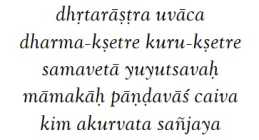
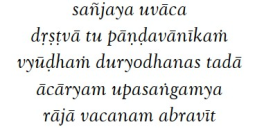
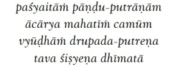
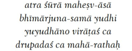
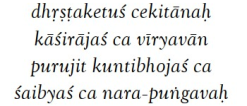
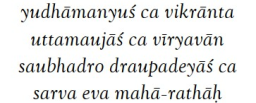
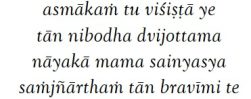

Từ đồng nghĩa: dhrtarastrah uvaca - Vua Dhrtarastrah nói; dharma-ksetre - tại nơi hành hương; kuru-ksetre - ở nơi có tên là Kuruksetra; samavetah - tập hợp lại; yuyutsavah - mong muốn chiến đấu; mamakah - bên của tôi (các con trai); pandavah - các con trai của Pandu; ca - và; eva - chắc chắn; kim - gì; akurvata - họ đã làm chưa; sanjaya - hỡi Sanjaya.
Ý nghĩa: Hỡi Sanjaya, sau khi các con trai của ta và các con trai của Pandu đã cùng nhau tụ hội tại thánh địa Kurukshetra, nơi được xem là sân khấu của số phận và cũng là chiến trường vĩ đại, sẵn sàng cầm vũ khí đối đầu, họ đã làm gì trước giờ khai chiến?
Diễn giải:
Bhagavad-giita từ lâu đã được xem như một kho tàng tri thức tâm linh vô giá – một khoa học hữu thần hoàn hảo, bởi chính Đấng Tối Cao Shrii Krsna đã trực tiếp giảng dạy. Trong Giita-mahatmya, “Vinh quang của Giita”, người xưa khuyên rằng ai khao khát tìm hiểu chân lý nên đọc Bhagavad-giita thật kỹ lưỡng, với tâm trong sáng, không mang động cơ cá nhân, và nên nương tựa vào những bậc tín đồ chân thành của Shrii Krsna để được soi đường. Arjuna chính là tấm gương tiêu biểu: khi đứng trước cuộc chiến định mệnh, tâm trí anh rối bời giữa tình thân và bổn phận. Nhưng nhờ lắng nghe lời Krsna với tấm lòng trọn vẹn, không mưu cầu riêng tư, Arjuna đã khai mở trí tuệ, vượt lên mọi giới hạn tri thức của Vệ Đà và các kinh điển khác. Người nắm được Bhagavad-giita một cách chính thống sẽ tìm thấy trong đó mọi điều tinh túy của muôn kinh sách, và còn gặp những chân lý không nơi nào khác có thể ban tặng.
Câu chuyện bắt đầu từ chính khung cảnh Mahabharata miêu tả: chiến trường Kuruksetra – nơi đã được tôn kính như thánh địa từ thời Vệ Đà. Đây không chỉ là một chiến trường; nó là “Dharma-ksetra” – cánh đồng của chính nghĩa và lễ nghi tôn giáo. Chính tại nơi này, Shrii Krsna đã hiện diện để dẫn dắt nhân loại. Vua mù Dhritarastra, cha của dòng Kuru, dù nắm quyền nhưng luôn sợ hãi trong tâm. Ông biết con mình – Duryodhana và các em – chất chứa tham vọng và bất công. Dù vậy, ông không mong một sự hòa giải; điều ông thật sự quan tâm là liệu các con trai của mình có chiến thắng hay không. Biết Kuruksetra là đất thánh, nơi ngay cả chư thiên cũng kính trọng, ông lo sợ sự thiêng liêng ấy sẽ nâng đỡ những người chính nghĩa như Arjuna và các anh em Pandava.
Sanjaya, học trò của hiền triết Vyasa, được ban cho thần nhãn để thấy rõ toàn cảnh chiến trường dù đang ở xa. Chính vì vậy Dhritarastra đã hỏi Sanjaya: “Sau khi các con trai của ta và con trai Pandu tụ hội nơi Kuruksetra, họ đã làm gì?” Lời hỏi ấy bộc lộ tâm can của một người cha bị mù lòa cả về mắt lẫn công lý. Ông cố ý chỉ nhận con mình là dòng Kuru, tách biệt các con Pandu ra khỏi huyết thống. Sự thiên vị ấy giống như người nông dân cố giữ cỏ dại trên đồng ruộng, dù biết đến ngày gặt, cỏ dại sẽ bị loại bỏ để nhường chỗ cho lúa tốt.
Trên chiến địa thiêng liêng ấy, Krsna đã đứng về phía những người đạo hạnh – các Pandava, đặc biệt là Yudhisthira, người hiện thân cho sự công chính. Lịch sử và kinh điển cho thấy rằng nơi nào ánh sáng của Dharma chiếu rọi, nơi đó bóng tối bất công sẽ dần tiêu tan. Duryodhana và những kẻ theo hắn, tựa như cỏ dại, không thể tồn tại lâu dài trên cánh đồng được thần linh gìn giữ. Từ ngữ “dharma-ksetra” và “kuru-ksetra” không chỉ mang giá trị địa danh, mà còn biểu thị cho sự gạn lọc vĩ đại: cái bất chính sẽ bị rũ bỏ, cái chính nghĩa sẽ trụ vững.
Thông điệp sâu xa của Bhagavad-giita vì thế không chỉ nằm trong triết lý cao siêu mà còn trong thực tại đời sống: hãy tìm đến chân lý bằng tâm trong sáng, không toan tính ích kỷ. Giống như Arjuna, khi ta biết lùi lại khỏi động cơ cá nhân, sẵn sàng lắng nghe tiếng gọi của sự thật, ta sẽ được dẫn dắt vượt lên mọi nghi hoặc và giới hạn. Cuộc đời mỗi người cũng là một chiến trường Kuruksetra, nơi ta phải chọn giữa ích kỷ và chính nghĩa. Chỉ khi kiên định trong Dharma, đặt niềm tin vào điều thiện, chúng ta mới có thể vượt qua mọi hỗn loạn để tìm thấy ánh sáng tối thượng – ánh sáng của trí tuệ, từ bi và giải thoát.

Từ đồng nghĩa: sanjayah uvaca - Sanjaya nói; drstva - sau khi thấy; tu - nhưng; pandava-aniikam - những chiến binh Pandava; vyudham - được bố trí trong thế trận quân sự; duryodhanah - Vua Duryodhana; tada - tại thời điểm đó; acaryam - người thầy; upasangamya - đến gần; raja - nhà vua; vacanam - từ; abraviit - đã nói.
Ý nghĩa: Sanjaya cất lời: Thưa đức vua, khi quan sát đội quân hùng mạnh do các con trai của Pandu sắp xếp nơi chiến trận, hoàng tử Duryodhana liền tiến đến gần vị thầy của mình và cất lên những lời sau đây.
Diễn giải:
Dhritarastra chào đời trong bóng tối. Đôi mắt thể chất không bao giờ nhìn thấy ánh sáng, nhưng điều đáng buồn hơn là ông cũng bị tước đi khả năng “thấy” bằng tâm linh. Ông hiểu rõ rằng các con trai mình cũng không khác gì: họ có thể nhìn đời bằng đôi mắt phàm, nhưng lại mù lòa trước lẽ phải và ánh sáng của đạo. Ông biết họ không bao giờ có thể thấu hiểu hay đồng cảm với các anh em Pandava – những con người vốn sinh ra đã mang trong mình sự chính trực và niềm tin vào Thượng đế. Tuy nhiên, trong sâu thẳm, Dhritarastra vẫn nuôi một tia hy vọng mong manh rằng những chuyến hành hương, những vùng đất linh thiêng, có thể phần nào lay động trái tim kiêu hãnh của các con trai ông. Đó là lý do ông hỏi Sanjaya về tình hình chiến trận – không chỉ để biết kết cục, mà còn vì ông hoài nghi: liệu sự linh thiêng có đủ sức làm đổi thay những trái tim đã quá chai cứng?
Sanjaya hiểu rõ động cơ ấy. Ông không phải là kẻ đưa tin vô hồn; ông là một người có trực giác sâu sắc, nhìn thấy nỗi lo sợ và khát khao mơ hồ trong lòng vị vua già. Thế nên, trước khi kể về chiến sự, Sanjaya tìm cách an ủi và củng cố tinh thần cho Dhritarastra. Ông muốn nói rằng: đừng lo, các con trai ngài – dù ở nơi thánh địa – cũng sẽ không vì thế mà thay đổi hay thỏa hiệp. Sự kiêu ngạo và tâm trí mù lòa của họ chưa thể bị rung động chỉ bởi cảnh trí thiêng liêng.
Chính vì thế, Sanjaya kể rằng ngay khi nhìn thấy đội quân hùng mạnh, trật tự và kỷ luật của Pandava, hoàng tử Duryodhana đã lập tức rời chỗ, tìm đến tổng chỉ huy Dronacarya – người thầy cũ, đồng thời là thủ lĩnh quân đội của ông ta. Duryodhana vốn được gọi là vua, nhưng trong tình thế hiểm nguy ấy, cậu vẫn phải tìm đến thầy để xin ý kiến và thể hiện sự quan ngại. Hình ảnh ấy gợi lên một sự thật: Duryodhana có trí chính trị, biết tìm đến quyền lực và chiến lược khi cần, nhưng ẩn sâu bên trong là nỗi sợ đang len lỏi. Nó giống như vua Ravana trong Ramayana – bậc trí tuệ và quyền năng, nhưng khi thấy sức mạnh tinh thần của Rama, trái tim ông vẫn run sợ dù miệng còn cao ngạo. Nó cũng giống như câu chuyện Kamsa trong Bhagavata Purana: vị vua tàn bạo nghe lời tiên tri về Krishna thì vẫn run rẩy dù bên ngoài vẫn tỏ ra kiêu hãnh.
Sanjaya không hề ca ngợi hay chỉ trích trực tiếp, ông chỉ nhẹ nhàng vẽ ra thực cảnh: Duryodhana là một nhà chính trị giỏi, nhưng lòng can đảm của cậu ta lung lay khi đối diện sự chính nghĩa. Sự sợ hãi của cậu là thứ không thể giấu dù có dùng lời lẽ ngoại giao hay thế lực để che đậy.
Nhìn sâu hơn, đây không chỉ là câu chuyện của một vị vua mù và người con kiêu ngạo. Đó là bài học về sự mù lòa trong tâm linh: có những đôi mắt nhìn được thế giới nhưng không nhìn thấy ánh sáng của chân lý; có những con người tưởng như quyền lực và thông minh, nhưng trước chính nghĩa và lòng tin nơi điều thiện, vẫn không thể đứng vững. Như Kaurava trong Mahabharata, như Ravana, như Kamsa, cuối cùng quyền lực và mưu kế đều thất bại trước niềm tin, lòng chính trực và sự bảo hộ của Thượng đế.
Thông điệp ở đây là: đừng để tâm trí mình mù lòa dù mắt vẫn nhìn thấy. Người có thể thấy đường chân lý không phải nhờ thị lực, mà nhờ sự tỉnh thức và niềm tin nơi điều thiện. Quyền lực, mưu mẹo, hay những toan tính chính trị có thể đưa ta đi xa một thời gian, nhưng chỉ ánh sáng của sự chính trực và tâm linh mới dẫn ta đến bình an thật sự. Hãy chọn mở mắt của trái tim trước khi quá muộn, bởi sức mạnh của cái thiện luôn âm thầm hiện diện và cuối cùng sẽ chiến thắng.

Từ đồng nghĩa: pasya - kìa; etam - này; pandu-putranam - các con trai của Pandu; acarya - người thầy; mahatiim - vĩ đại; camum - lực lượng quân đội; vyudham - được sắp đặt; drupada-putrena - con trai Drupada; tava - của bạn; sisyena - đệ tử; dhii-mata - rất thông minh.
Ý nghĩa: Thưa thầy, xin hãy ngắm nhìn đoàn quân hùng mạnh bên phía những người con trai của Pandu. Họ được sắp xếp rất khéo léo và chặt chẽ bởi người học trò thông tuệ của thầy, chính là con trai vua Drupada.
Diễn giải:
Duryodhana vốn là một bậc thầy về ngoại giao và mưu lược. Ngay khi trận chiến Kuruksetra sắp bắt đầu, anh ta đã nhìn thấy một lỗ hổng lớn trong hàng ngũ của phe mình: sự khoan dung quá mức của Dronacarya, vị tổng tư lệnh brahmana vĩ đại. Dronacarya không chỉ là một bậc thầy quân sự lỗi lạc, mà còn là một người thầy giàu lòng từ bi và công bằng. Nhưng chính lòng nhân từ ấy lại có thể trở thành điểm yếu trong thời khắc phải quyết liệt vì chính nghĩa mà mình đã lựa chọn.
Ngày xưa, khi còn trẻ, Dronacarya và hoàng tử Drupada cùng theo học võ nghệ và tri thức nơi một vị đạo sư nổi tiếng. Họ cùng chia sẻ tuổi trẻ, cùng tập luyện, cùng ăn chung, ở chung và từng hứa sẽ giữ trọn tình bằng hữu. Dronacarya không phải là hoàng tử giàu sang, chỉ là con của một gia đình brahmana bình thường, còn Drupada là con vua nên sống trong nhung lụa. Nhưng tình bạn thời thơ ấu ấy vẫn rất chân thành. Drupada từng nói với Dronacarya rằng sau này khi lên ngôi vua, ông sẽ chia sẻ nửa vương quốc để kết nghĩa huynh đệ trọn đời.
Nhiều năm sau, Dronacarya trở thành một thầy dạy võ thuật xuất chúng nhưng vẫn nghèo khó. Lúc ấy, ông muốn tìm chỗ dựa cho gia đình nên nhớ lại lời hứa năm xưa của Drupada. Dronacarya lặn lội đường xa, mang theo cả vợ và con nhỏ, đến kinh thành của Drupada với niềm tin sẽ được đón tiếp như bạn cũ. Nhưng Drupada, giờ đã là vua, không còn coi Dronacarya là bạn ngang hàng. Trước triều đình, ông lạnh lùng nói rằng tình bạn chỉ có thể có giữa những người cùng địa vị; một vị vua và một thầy nghèo không thể là bạn. Lời từ chối ấy như một nhát dao cứa sâu vào lòng tự trọng của Dronacarya. Ông rời khỏi cung điện trong tủi nhục, trái tim nặng nề vì bị người bạn thân ngày xưa chối bỏ.
Mang nỗi uất hận, Dronacarya tìm đến Hastinapura, trở thành thầy dạy quân sự cho các hoàng tử Kuru, trong đó có cả Pandava và Kaurava. Nhờ tài năng xuất chúng, ông đã giúp các hoàng tử lập nhiều chiến công và được vua Kuru trọng thưởng. Một ngày kia, khi các học trò đã trưởng thành, Dronacarya ra lệnh cho họ chinh phạt Drupada để báo mối nhục xưa. Quân Kaurava thất bại, nhưng Arjuna cùng các anh em Pandava đã đánh bại quân Drupada và đưa vua này đến trước mặt thầy. Dronacarya lấy đi nửa vương quốc của Drupada như cách trả thù sự sỉ nhục năm xưa, rồi hào phóng trả tự do cho ông. Drupada tuy mất một nửa vương quốc nhưng trong lòng nung nấu một nỗi oán hận sâu sắc hơn bao giờ hết. Ông tự nhủ rằng mình phải trả thù nỗi nhục này.
Để thực hiện điều đó, Drupada rời bỏ xa hoa, tìm đến rừng sâu, khổ hạnh và làm nhiều nghi lễ hiến tế, cầu xin các thần ban cho ông một đứa con trai đủ sức hạ gục Dronacarya. Lời khẩn cầu của ông được chư thần chấp nhận. Một thời gian sau, trong khói hương tế lễ, một đứa trẻ phi thường ra đời – đó chính là Dhrstadyumna. Đứa trẻ này từ khi sinh ra đã được định sẵn số phận: sẽ là người giết chết Dronacarya, vị thầy mà chính cha nó từng oán hận.
Câu chuyện này mở ra một chuỗi bi kịch đầy mâu thuẫn của tình bạn, danh dự và oán thù. Từ sự phản bội của một người bạn thời thơ ấu đã sinh ra một mối hận truyền đời, khiến Drupada nuôi ý định báo thù bằng cách cầu xin một đứa con trai có thể hạ gục chính người bạn cũ, nay đã thành thầy của các hoàng tử Kuru. Nó cho thấy cách lòng tự ái và nỗi nhục nhã có thể biến thành ngọn lửa oán hận cháy âm ỉ suốt nhiều năm, rồi dẫn đến những sự kiện định mệnh không thể đảo ngược.
Điều đáng nói là Dronacarya, với trí tuệ của một brahmana giác ngộ, hiểu rất rõ định mệnh của Dhrstadyumna. Thế nhưng, khi chàng trai trẻ này tìm đến học nghệ thuật quân sự, Dronacarya vẫn rộng lòng truyền thụ tất cả bí quyết chiến đấu mà mình có. Ông coi tri thức là thiêng liêng và không dùng nó như vũ khí để trả thù cá nhân. Ông đã sống đúng tinh thần dharma – không để lòng oán hận làm hoen ố sứ mệnh của người thầy.
Giờ đây, trên chiến trường Kuruksetra, chính Dhrstadyumna – đứa trẻ mà định mệnh đã an bài là kẻ hạ gục Dronacarya – lại là người sắp xếp đội hình chiến đấu cho phe Pandava. Duryodhana không bỏ lỡ cơ hội chỉ ra sự “sai lầm” này trước mặt Dronacarya. Chàng muốn khéo léo nhắc nhở thầy mình rằng đây không phải là lúc để mềm lòng hay nuôi giữ tình nghĩa cũ. Bởi những người đang đứng ở chiến tuyến đối lập – từ Dhrstadyumna cho tới Arjuna – đều từng là học trò của ông. Đặc biệt Arjuna, người học trò xuất sắc nhất, nay chính là kẻ mà Dronacarya phải đối đầu. Duryodhana sợ rằng sự khoan nhượng và tình cảm thầy trò của Dronacarya sẽ làm suy yếu quyết tâm chiến đấu và dẫn phe mình đến thất bại.
Câu chuyện này phản chiếu một bài học sâu xa về con đường tâm linh: lòng từ bi và tri thức cao cả luôn đáng quý, nhưng khi đã bước vào cuộc chiến bảo vệ chính nghĩa hay bổn phận, ta phải đủ tỉnh thức để không biến tình cảm riêng thành gót chân Achilles của mình. Giống như khi Arjuna do dự không muốn chiến đấu với chính người thân trong gia tộc, Krishna đã khuyên anh rằng bổn phận (dharma) đôi khi đòi hỏi sự kiên quyết vượt lên trên tình cảm cá nhân. Giống như Rama buộc phải rời bỏ cung vàng để giữ lời hứa với cha, hay như Prahlada vẫn kiên định với niềm tin vào Vishnu dù bị cha là Hiranyakashipu bức hại, con đường tâm linh luôn thử thách lòng can đảm trước tình thân và cảm xúc.
Người trí tuệ cần vừa giữ lòng nhân ái, vừa tỉnh táo trước bổn phận và mục tiêu lớn hơn. Khi bước vào những trận chiến của đời sống – dù là bảo vệ lẽ phải, lý tưởng, hay sứ mệnh thiêng liêng – chúng ta phải biết đặt cái chung lên trên sự ràng buộc cá nhân, giữ tâm từ nhưng không yếu mềm, giữ tri thức nhưng không để nó bị lợi dụng. Đó chính là sức mạnh nội tâm giúp ta đi trọn con đường của chân lý và ánh sáng.

Từ đồng nghĩa: atra - ở đây; surah - anh hùng; maha-isu-asah - những cung thủ dũng mãnh; bhima-arjuna - với Bhima và Arjuna; samah - quân bình; yudhi - trong cuộc chiến; yuyudhanah - Yuyudhana; viratah - Virata; ca - cũng; drupadah - Drupada; maha-rathah - chiến binh vĩ đại.
Ý nghĩa: Trong đội quân này, có nhiều cung thủ kiệt xuất, sức mạnh ngang hàng với Bhima và Arjuna. Họ là những chiến binh lừng danh như Yuyudhana, Virata và Drupada - những người mang trong mình lòng dũng cảm, tài bắn cung siêu việt và sức mạnh tinh thần của bậc anh hùng.
Diễn giải:
Dhrstadyumna từ khi sinh ra đã mang sứ mệnh đặc biệt: trở thành người hạ gục thầy của mình – Dronacarya, bậc thầy vô song trong nghệ thuật quân sự. Nhưng trên con đường bước ra chiến trường Kurukshetra, cậu không phải không lo lắng. Dù chính định mệnh đã đặt vào tay cậu thanh gươm báo thù, Dhrstadyumna vẫn biết rằng tài nghệ của bản thân chưa đủ để xem nhẹ những kẻ đang đứng về phía Dronacarya. Trong hàng ngũ đối phương, không chỉ có Dronacarya với sự uyên thâm võ nghệ, mà còn nhiều chiến binh khác khiến trái tim người trẻ tuổi này phải dấy lên dè chừng.
Duryodhana, kẻ chủ mưu chính của cuộc chiến, đã từng liệt kê tên những chiến binh đáng sợ ấy để nhắc nhở quân lính về sức mạnh của phe mình. Trong số đó, nhiều người ngang tầm với hai anh hùng Bhima và Arjuna – hai trụ cột của nhà Pandava. Bhima nổi tiếng với sức mạnh siêu phàm, từng đánh bại quái vật Hidimba và vô số chiến binh khổng lồ khác. Arjuna lại là bậc thầy về cung thuật, từng chiến thắng các vị thần, bắn trúng mục tiêu dù trong bóng tối hay giữa cơn bão. Dhrstadyumna biết rõ điều này, và chính vì thế, khi nghe tên những chiến binh khác như Yuyudhana, Virata, Drupada hay Satyaki, lòng cậu không khỏi dấy lên sự dè dặt: họ không chỉ là những người lính bình thường, mà mỗi người đều mang tầm vóc anh hùng, đủ để làm nghiêng cán cân chiến thắng.
Câu chuyện này gợi nhắc ta về hành trình của nhiều nhân vật trong các kinh sách cổ. Rama khi chuẩn bị bước vào trận chiến với Ravana cũng từng cân nhắc kỹ lưỡng trước sức mạnh vô biên của quân đội Lanka. Krishna trong tuổi trẻ phải nhiều lần đối diện kẻ thù mạnh hơn, nhưng vẫn dùng trí tuệ và lòng kiên định để hóa giải. Hay như trong Kinh Bhagavad Gita, Arjuna trước thềm đại chiến cũng từng chùn bước, nhìn thấy những chiến binh hùng mạnh của cả hai bên mà rúng động tâm can. Sự lo lắng không phải là yếu đuối, mà là khoảnh khắc con người nhận ra sự vĩ đại của thử thách trước mắt để chuẩn bị tâm thế vững vàng hơn.
Từ đó, bài học trở nên sáng tỏ: chúng ta không cần phải chối bỏ nỗi sợ hãi khi đứng trước những khó khăn lớn. Chính nhận thức về sự to lớn của thử thách mới giúp ta rèn luyện sức mạnh nội tâm, tìm đến trí tuệ và sự kiên định. Giống như Dhrstadyumna hiểu rõ ai là người đáng gờm để không khinh suất, mỗi chúng ta cũng cần nhìn thẳng vào những thách thức trong đời với sự tỉnh thức và khiêm nhường. Chỉ khi biết rõ điều mình đối diện, ta mới có thể tiến lên với lòng dũng cảm thật sự, không phải liều lĩnh mù quáng.
Dũng cảm không có nghĩa là không sợ, mà là dám bước tiếp dù biết con đường phía trước đầy thử thách. Khi trái tim ta đủ vững, trí tuệ đủ sáng, nỗi sợ sẽ trở thành động lực để ta vượt lên và trưởng thành, giống như những chiến binh vĩ đại trong sử thi đã làm trước khi bước vào trận chiến định mệnh của đời mình.

Từ đồng nghĩa: dhrstaketuh - Dhrstaketu; cekitanah - Cekitana; kasirajah - Kasiraja; ca - cũng; viirya-van - rất mạnh mẽ; purujit - Purujit; kuntibhojah - Kuntibhoja; ca - và; saibyah - saibya; nara-pungavah - anh hùng trong xã hội loài người.
Ý nghĩa: Ngoài ra, còn có những chiến binh dũng mãnh và quả cảm: Dhrstaketu, Cekitana, Kasiraja, Purujit, Kuntibhoja và Saibya. Họ là những người mạnh mẽ, gan dạ, đầy khí phách, mang trong mình sức mạnh và lòng trung thành thiêng liêng, sẵn sàng dấn thân vào chiến trận vì lý tưởng và danh dự.
Diễn giải:
Ngoài những chiến binh nổi tiếng như Arjuna hay Bhima, sử thi Mahabharata còn nhắc đến một nhóm anh hùng ít được nhắc tới nhưng đầy khí phách: Dhrstaketu, Cekitana, Kasiraja, Purujit, Kuntibhoja và Saibya. Mỗi người mang một câu chuyện riêng, dệt thành tấm thảm của lòng dũng cảm và sự trung thành bất khuất.
Dhrstaketu từng là vị vua trẻ của vương quốc Cedi – một vùng đất yên bình nhưng rồi bị cuốn vào những biến động của thời loạn. Ông đã chứng kiến cha mình hy sinh trong một trận chiến bảo vệ biên cương, và nỗi đau ấy trở thành vết khắc sâu trong tim. Nhiều người khuyên ông nên lựa chọn con đường an toàn, chấp nhận thần phục kẻ mạnh để bảo toàn đất nước. Nhưng Dhrstaketu không thể làm vậy. Ông tin rằng một đất nước chỉ thật sự tồn tại khi còn giữ được danh dự và chính nghĩa. Vì thế, khi cuộc đại chiến Kurukshetra nổ ra, ông không chần chừ mà mang theo quân đội của Cedi ra trận. Trước đội quân hùng mạnh của đối phương, ông không run sợ. Người ta kể rằng trong những ngày chiến đấu khốc liệt nhất, Dhrstaketu vẫn cưỡi ngựa đi đầu, ánh mắt sáng rực niềm tin rằng công bằng rồi sẽ được thực thi, dù phải trả giá bằng mạng sống.
Cekitana, chiến binh thành Vrishni, không phải là một vị vua, nhưng tên tuổi ông được nhắc đến bởi lòng quả cảm và sự lanh trí hiếm có. Thuở trẻ, Cekitana từng là một người lính bình thường, nhưng nhờ sự thông minh và khả năng quan sát tình thế nhanh nhạy, ông dần trở thành tướng lĩnh được trọng dụng. Trong một trận phục kích, khi quân mình bị kẻ địch bao vây và gần như tan vỡ, Cekitana đã dẫn một nhóm nhỏ xông ra mở đường máu, cứu thoát những người bị mắc kẹt ở trung tâm vòng vây. Nhiều chiến binh sau này nhớ mãi hình ảnh ông quay đầu lại, hô to “Không ai bị bỏ lại phía sau!”, rồi tung mình vào mũi giáo của kẻ thù, vừa chiến đấu vừa che chắn cho đồng đội rút lui. Tinh thần ấy khiến ông trở thành biểu tượng của tình nghĩa huynh đệ và lòng trung thành trong chiến trận.
Kasiraja, vua của xứ Kashi – vùng đất trù phú, lụa là và vàng bạc chất đầy kho. Nhưng khi thế giới rơi vào cuộc chiến chính nghĩa, ông không chọn cách ở lại cung điện để bảo toàn sự giàu sang. Kasiraja hiểu rằng danh dự của một vị vua không phải nằm ở ngai vàng hay sự xa hoa, mà ở chỗ dám đứng về phía điều đúng đắn. Vì vậy, ông giao lại việc cai quản kinh thành cho các đại thần, mặc chiến giáp, cùng quân sĩ tiến ra chiến trường. Người dân kể rằng ngày ông rời kinh thành, cung điện im lặng, chỉ nghe tiếng vó ngựa vang xa, và những người già khóc lặng vì cảm động trước hình ảnh một vị vua sẵn sàng hy sinh mọi tiện nghi để giữ trọn lòng trung nghĩa. Trong chiến trường, Kasiraja chiến đấu như một người lính thực thụ, không nấp sau hàng rào bảo vệ của hoàng tộc. Ông trở thành tấm gương cho tất cả: rằng danh dự đôi khi đáng giá hơn cả mạng sống.
Purujit và Kuntibhoja là hai vị chúa tể mang trong mình tinh thần chính trực từ khi còn rất trẻ. Họ sinh ra trong những gia tộc có truyền thống đề cao công lý, coi trọng danh dự hơn quyền lực. Thuở thiếu thời, Purujit đã sớm nổi tiếng vì tính tình hào hiệp. Người ta kể rằng có lần, một vùng đất nhỏ nằm dưới sự bảo hộ của ông bị một thế lực hùng mạnh hơn đe dọa, ép buộc phải cống nạp vàng bạc và phụ nữ để đổi lấy sự yên ổn. Dù biết rõ quân lực mình yếu hơn nhiều, Purujit vẫn từ chối cúi đầu. Ông tập hợp binh sĩ, khích lệ họ rằng bảo vệ người dân yếu thế chính là bổn phận thiêng liêng của người lãnh đạo. Trong trận chiến ấy, Purujit bị thương nặng, nhưng nhờ sự kiên cường của ông, quân địch buộc phải rút lui. Câu chuyện về lòng quả cảm và tinh thần không khuất phục của Purujit được truyền tụng khắp nơi, trở thành niềm tự hào cho đất nước ông.
Kuntibhoja, người nuôi dưỡng và bảo bọc hoàng hậu Kunti từ thuở nhỏ, được biết đến là một vị quân vương công tâm và đầy lòng nhân ái. Ông vốn không phải là cha ruột của Kunti, nhưng khi nhận nuôi cô bé mồ côi ấy, ông đã coi nàng như con gái ruột thịt. Dưới sự chăm sóc của Kuntibhoja, Kunti lớn lên trong tình yêu thương và sự dạy dỗ về đạo đức, lòng ngay thẳng và tinh thần gia tộc. Người dân kể rằng Kuntibhoja luôn tin rằng một vị vua không chỉ bảo vệ lãnh thổ, mà còn phải gìn giữ các giá trị nhân nghĩa để làm gương cho đời sau. Khi chiến tranh đến gần, ông không chọn cách tránh né hay giữ lấy sự an toàn cho riêng mình. Dù tuổi đã cao, Kuntibhoja vẫn sẵn sàng góp sức và đưa ra lời khuyên khôn ngoan cho quân đội, để bảo vệ danh dự của gia tộc và giữ trọn nghĩa tình với những người mình yêu quý.
Saibya là một bậc trưởng lão đáng kính, được tôn trọng không chỉ bởi tuổi tác mà còn bởi đức hạnh sâu dày. Ông từng trải qua nhiều biến cố và chứng kiến những đổi thay khốc liệt của thời cuộc, nhưng chưa bao giờ từ bỏ niềm tin vào chính nghĩa. Người ta kể rằng trước mỗi trận chiến quan trọng, Saibya thường tập hợp các chiến binh trẻ để khuyên răn họ: hãy giữ vững trái tim ngay thẳng, đừng để sợ hãi hay lợi ích cá nhân làm mờ mắt. Có lần, khi quân sĩ dao động vì quân địch quá mạnh, Saibya đã đi khắp các doanh trại, nói rằng: “Danh dự không nằm ở thắng hay thua, mà ở chỗ chúng ta đã sống và chiến đấu đúng với lẽ phải.” Lời nói ấy khiến nhiều chiến binh rơi nước mắt và tìm lại sự can đảm.
Những con người ấy không phải siêu nhân bất bại, nhưng chính sự lựa chọn dấn thân vì lý tưởng, vì danh dự, đã khiến tên tuổi họ trở thành biểu tượng. Họ nhắc nhở chúng ta rằng sức mạnh thật sự không nằm ở vũ khí hay địa vị, mà ở trái tim can đảm, dám đứng về phía điều đúng đắn ngay cả khi con đường phía trước đầy thử thách.
Thông điệp giản dị nhưng sâu sắc họ gửi lại cho hậu thế: sống là dám chọn một lẽ phải để theo đuổi, dám bảo vệ sự công bằng và danh dự ngay cả khi phải bước vào chiến trận. Khi trái tim kiên định với lý tưởng, mỗi con người bình thường đều có thể trở thành anh hùng trong câu chuyện của chính mình.

Từ đồng nghĩa: yudhamanyuh - Yudhamanyu; ca - và; vikranta - dũng mãnh; uttamaujah - Uttamauja; viryavan - rất mạnh mẽ; saubhadrah - con trai của Subhadra; draupadeyah - con trai của Draupadi; sarve - tất cả; eva - chắc chắn; maha-rathah - chiến binh đánh xe ngựa vĩ đại.
Ý nghĩa: Có Yudhamanyu vĩ đại, Uttamauja hùng mạnh, con trai của Subhadra và con trai của Draupadi. Tất cả những chiến binh này đều là những chiến binh đánh xe ngựa cừ khôi.
Diễn giải:
Có Yudhamanyu vĩ đại, Uttamauja hùng mạnh, con trai của Subhadra và con trai của Draupadi. Tất cả họ đều là những chiến binh đánh xe ngựa cừ khôi – câu kinh này không chỉ là lời giới thiệu về một vài nhân vật anh hùng, mà còn là bức tranh sinh động về tinh thần chiến đấu, lòng trung thành và niềm tin vào chính nghĩa trong sử thi Mahabharata.
Yudhamanyu và Uttamauja vốn không phải những cái tên được nhắc đến nhiều khi nói về trận chiến Kurukshetra, bởi ánh hào quang thường thuộc về những anh hùng như Arjuna hay Bhima. Nhưng chính trong sự thầm lặng của họ lại ẩn chứa sức mạnh và lòng trung thành đáng khâm phục. Cả hai đều là những chiến binh dũng cảm, xuất thân không rực rỡ như các hoàng tử Pandava, nhưng họ đã lựa chọn đứng về phía chính nghĩa, đi theo Yudhishthira – vị anh cả hiền hậu nhưng luôn đặt công lý và đạo đức lên trên tất cả.
Ngày khởi binh, Yudhamanyu được giao nhiệm vụ quan trọng: bảo vệ phía sau chiến xa của Yudhishthira, người giữ vai trò linh hồn của đội quân Pandava. Người ta kể rằng ông luôn ở vị trí lặng lẽ nhưng không thể thiếu, đôi mắt không rời khỏi chủ tướng, luôn sẵn sàng đỡ những đòn tên bất ngờ bắn tới. Uttamauja cũng đảm nhận vai trò tương tự ở phía đối diện, như hai cánh tay che chở cho Yudhishthira. Dù không tung ra những mũi tên thần kỳ hay thể hiện võ nghệ khiến kẻ thù kinh sợ, họ chính là lá chắn sống, bảo vệ vị vua hiền hòa để ông có thể điều binh khiển tướng, giữ vững tinh thần toàn quân.
Trong suốt những ngày dài của trận chiến, khi tiếng trống trận vang lên dữ dội và mũi tên như mưa, Yudhamanyu và Uttamauja không lùi bước. Có lần đội quân Kaurava tung ra đợt tấn công bất ngờ nhằm trực diện vào Yudhishthira, mong hạ gục ông để làm lung lay tinh thần Pandava. Yudhamanyu đã phi ngựa lên trước, dùng chính cơ thể mình làm tấm chắn đầu tiên, chịu đựng làn mưa tên để Yudhishthira kịp thời rút lui và sắp xếp lại đội hình. Uttamauja cũng lao vào trận, chiến đấu ngoan cường để chặn đường truy kích, dù biết rõ lực lượng địch đông hơn và vũ khí sắc bén hơn.
Những ngày cuối cùng của cuộc chiến, khi nhiều chiến binh đã kiệt sức và tổn thất tăng cao, hai người vẫn kiên định bên cạnh Yudhishthira. Sự hiện diện của họ mang đến cho vị vua hiền từ sự an tâm để tiếp tục lãnh đạo quân đội và giữ vững lý tưởng công lý giữa chiến trường hỗn loạn. Cái chết của họ – nếu có – không được kể lại rực rỡ như những anh hùng khác, nhưng chính sự hy sinh âm thầm ấy đã góp phần không nhỏ làm nên chiến thắng cuối cùng của phe Pandava.
Câu chuyện về Yudhamanyu và Uttamauja nhắc ta rằng có những con người không cần đứng ở vị trí trung tâm mới tỏa sáng. Họ không tìm kiếm danh tiếng hay hào quang, nhưng lòng trung thành và sự dũng cảm của họ trở thành nền tảng để những người lãnh đạo thực hiện sứ mệnh. Đôi khi, sức mạnh không nằm ở việc được ngợi ca, mà ở việc sẵn sàng đứng chắn trước hiểm nguy để bảo vệ điều đúng đắn mà mình tin tưởng.
Abhimanyu là con trai duy nhất của Arjuna và Subhadra, cháu đằng ngoại của Krishna. Cậu sinh ra trong hoàng tộc nhưng lớn lên giữa khói lửa và tinh thần chiến binh. Ngay từ thuở nhỏ, Abhimanyu đã được rèn luyện cung tên, cưỡi xe ngựa và các chiến thuật chiến trường. Truyền thuyết kể rằng khi còn nằm trong bụng mẹ, cậu đã nghe cha mình – Arjuna – giảng giải về trận pháp Chakravyuha, một trận đồ quân sự phức tạp gồm nhiều vòng xoáy. Tuy nhiên, khi Arjuna chưa kịp giảng đến cách thoát ra, Subhadra đã ngủ thiếp đi, nên Abhimanyu chỉ nắm được phần vào trận pháp mà không biết đường ra.
Đến khi cuộc chiến Kurukshetra nổ ra, Abhimanyu mới mười sáu tuổi – tuổi vẫn còn non trẻ so với chiến trường đầy máu lửa. Thế nhưng cậu đã tỏ ra chín chắn và dũng cảm khác thường. Hôm đó, quân Kaurava lập nên trận pháp Chakravyuha hiểm hóc để phá vỡ thế trận của Pandava. Không ai trong đội quân Pandava có mặt – kể cả các dũng tướng – dám xông vào, vì Arjuna, người duy nhất thành thạo trận pháp này, đang bị kéo ra xa mặt trận. Khi mọi người còn đang do dự, Abhimanyu đã bước lên, xin được đi đầu mở đường.
Cậu biết rõ mình chỉ hiểu cách xông vào mà không biết cách thoát ra, nhưng vẫn bình thản nhận nhiệm vụ. Trước khi xuất trận, Abhimanyu nói với các cậu của mình rằng: “Con sẽ mở đường vào, các cậu hãy theo sau bảo vệ. Con sẽ chiến đấu đến hơi thở cuối cùng.” Lời nói của cậu vừa can đảm vừa hồn nhiên như chính tuổi trẻ, nhưng ẩn chứa sức mạnh của niềm tin và tình yêu với gia đình.
Abhimanyu dẫn đầu, phá vỡ từng lớp trận đồ như mũi tên xé gió. Mỗi vòng xoáy của Chakravyuha là một tầng lính dày đặc, được bố trí chặt chẽ và hiểm hóc, nhưng cậu thiếu niên ấy vẫn lao lên, dùng tài bắn cung điêu luyện và sức mạnh tuổi trẻ để mở đường. Các chiến binh Kaurava kinh ngạc trước sự dũng mãnh ấy. Nhưng khi đã lọt sâu vào trung tâm, các cậu của Abhimanyu bị quân địch chặn lại, không thể vào hỗ trợ. Cậu bị vây hãm một mình giữa vòng vây tàn khốc.
Dẫu vậy, Abhimanyu không hề run sợ. Cậu chiến đấu với lòng quả cảm phi thường, hạ gục nhiều tướng giỏi của phe Kaurava. Nhưng cuối cùng, vì bị bao vây quá đông và kiệt sức, cậu đã ngã xuống trong làn mưa tên và giáo mác của kẻ thù. Người ta kể rằng ngay cả kẻ địch cũng phải kính nể sự gan dạ của chàng trai tuổi mười sáu ấy, và sự hy sinh của cậu khiến chiến trường lặng đi trong giây lát.
Câu chuyện về Abhimanyu không chỉ là bi kịch của tuổi trẻ hy sinh vì nghĩa lớn, mà còn là biểu tượng của tinh thần dám bước vào con đường khó khăn dù biết trước hiểm nguy. Abhimanyu nhắc ta rằng tuổi trẻ có thể chưa đủ kinh nghiệm, nhưng sự trong sáng, lòng quả cảm và niềm tin vào điều đúng đắn có thể thắp sáng cả một chiến trường. Dù con đường phía trước đầy rủi ro, can đảm tiến bước vì chính nghĩa luôn là sức mạnh cao đẹp nhất mà con người có thể mang trong tim.
Con trai của Draupadi – thường được gọi chung là Upapandava – gồm năm người: Prativindhya, Sutasoma, Srutakarma, Satanika và Srutasena. Họ là kết quả của cuộc hôn nhân đặc biệt giữa Draupadi và năm anh em Pandava, vì thế mang trong mình dòng máu của những chiến binh kiệt xuất. Dù tuổi đời còn rất trẻ khi chiến tranh Kurukshetra nổ ra, họ đã sớm được rèn giũa trong kỷ luật và tinh thần chiến đấu của gia tộc.
Ngày bước vào trận chiến, năm chàng trai còn mang nét non trẻ nhưng ánh mắt đầy quyết tâm. Họ hiểu rằng cuộc chiến này không chỉ là tranh giành quyền lực, mà là để khôi phục danh dự đã bị xúc phạm, trả lại công lý cho mẹ và cha mình sau bao năm chịu bất công dưới triều đại nhà Kaurava. Người ta kể rằng trước khi ra trận, Draupadi nắm tay từng đứa con, không khóc lóc níu kéo, cũng không khuyên răn lùi bước. Bà chỉ nhìn sâu vào mắt chúng và nói rằng: “Các con là niềm tự hào của gia tộc, hãy mang chính nghĩa mà bước đi, nhưng giữ trái tim trong sáng của một chiến sĩ.”
Trong những ngày đầu của trận Kurukshetra, Upapandava chiến đấu sát cánh cùng các cậu của mình – Yudhishthira, Bhima, Arjuna, Nakula và Sahadeva. Dù không phải là những tướng lĩnh trụ cột, họ đã tham gia bảo vệ hàng ngũ, hỗ trợ các chiến binh chủ lực và không hề sợ hãi trước vó ngựa thù địch. Có lần Prativindhya bị kỵ binh Kaurava dồn ép vào thế khó, nhưng cậu vẫn xoay sở dũng cảm, bảo vệ đồng đội và kịp thời rút lui để giữ mạng sống cho cả nhóm. Sutasoma từng chạm trán một dũng tướng của phe đối lập và dù còn thiếu kinh nghiệm, cậu vẫn kiên cường chiến đấu, khiến đối thủ phải thán phục vì tinh thần không chịu khuất phục.
Những ngày cuối cùng của cuộc chiến là thử thách lớn nhất. Khi nhiều tướng lĩnh Pandava đã kiệt sức, Upapandava vẫn xông pha như những mũi tên trẻ tuổi. Nhưng tuổi trẻ cũng đồng nghĩa với sự non nớt trước những thủ đoạn hiểm độc. Trong trận đánh về đêm do Ashwatthama cầm đầu – một trận chiến phi nghĩa và đầy tàn sát – năm anh em Upapandava đã hy sinh khi đang ngủ trong trại, bởi kẻ thù đã không còn tuân thủ luật lệ chiến trường. Dù ra đi trong lặng lẽ, cái chết của họ khắc sâu nỗi đau nhưng cũng làm sáng lên tinh thần hy sinh vì danh dự gia tộc.
Câu chuyện về Upapandava gợi nhắc rằng có những con người dù tuổi trẻ chưa kịp rạng rỡ, nhưng đã sống và ngã xuống vì lý tưởng cao đẹp. Họ không chiến đấu để ghi tên mình trong lịch sử, mà vì tình yêu với gia đình, vì công lý cho điều đúng đắn. Sự ra đi của họ nhắc ta rằng: đôi khi, lòng trung thành và dũng khí không phải là những điều vang dội, mà là lựa chọn đứng lên giữa bất công dù biết con đường phía trước hiểm nguy và có thể không còn ngày trở về.
Từ những con người ấy, ta hiểu rằng sự vĩ đại không chỉ đến từ danh tiếng hay chiến công vang dội. Có những người cả đời không được nhắc tên nhiều lần, nhưng chính họ là những mắt xích không thể thiếu để giữ vững lẽ phải và nâng đỡ những người dẫn đầu. Lòng trung thành, dũng khí, sự hi sinh thầm lặng chính là sức mạnh thật sự của bất kỳ tập thể nào.
Thông điệp truyền cảm hứng ở đây là: mỗi người đều có thể là một “chiến binh cừ khôi” theo cách của riêng mình. Dù bạn không phải người nổi bật nhất, không phải ánh hào quang rực rỡ ở tuyến đầu, nhưng sự kiên định và lòng tận tâm của bạn có thể là nền tảng giúp điều đúng đắn được bảo vệ và lan tỏa. Trong hành trình của cuộc đời, đôi khi chính sự âm thầm, bền bỉ và can đảm tiến về phía trước mới là sức mạnh làm nên chiến thắng lớn lao nhất.

Từ đồng nghĩa: asmakam - của chúng ta; tu - nhưng; visista - rất mạnh; ye - ai; tan - họ; nibodha - ghi chú, được thông báo; dvijottama - tốt nhất trong các brahmana; nayaka - thuyền trưởng; mama - của tôi; sainyasya - trong số các binh lính; samjnartham - cho thông tin; bravimi - tôi đang nói; te - với bạn
Ý nghĩa: Nhưng để ngài hiểu thêm và nắm rõ hơn, hỡi bậc trí tuệ xuất chúng Brahma, xin cho phép tôi kể với ngài về những vị tướng lĩnh đang lãnh đạo quân đội của ta - những người mang trong mình những phẩm chất đặc biệt và sức mạnh tinh thần hiếm có.
Diễn giải:
Nhưng để ngài hiểu thêm và nắm rõ hơn, hỡi bậc trí tuệ xuất chúng Brahma, xin cho phép tôi kể với ngài về những vị tướng lĩnh đang lãnh đạo quân đội của ta - những người mang trong mình những phẩm chất đặc biệt và sức mạnh tinh thần hiếm có.
Câu nói này, tưởng chừng chỉ là lời giới thiệu khiêm cung, thực chất ẩn chứa sự tính toán khôn ngoan và tinh tế của Duryodhana. Ông không đơn thuần thông báo lực lượng của mình cho Dronacharya, vị thầy vĩ đại đã từng dạy dỗ cả Kaurava và Pandava. Trong từng chữ, Duryodhana vừa tôn vinh Dronacharya, vừa khéo léo tạo ra một bức tranh hùng mạnh về đội quân của mình nhằm gieo vào tâm trí vị thầy già niềm tin, sự tự hào và cả nghĩa vụ gắn bó với phe Kaurava. Đây là nghệ thuật tâm lý bậc cao, một cách ràng buộc lòng trung thành không bằng mệnh lệnh, mà bằng sự gợi nhắc về tình thầy trò, về công lao và niềm kiêu hãnh.
Trong Mahabharata, Duryodhana vốn là một người đầy mưu lược. Khi đối diện với Krishna trước trận chiến, ông từng khéo léo lựa chọn chính nghĩa theo cách có lợi cho mình, dù biết sâu xa rằng sự chính nghĩa thực sự đứng về phía Pandava. Ông là bậc thầy trong việc thuyết phục và xoay chuyển lòng người, giống như cách Ravana trong Ramayana từng thuyết phục các tướng lĩnh và anh em của mình rằng cuộc chiến chống lại Rama là bảo vệ danh dự và quyền lực của Lanka. Duryodhana cũng đang làm điều tương tự: ông không ra lệnh cho Dronacharya, mà vẽ nên một tấm gương của sự trung thành và nghĩa vụ, khiến vị thầy cảm thấy bản thân là một phần không thể thiếu của sức mạnh ấy.
Sự thao túng tâm lý của Duryodhana còn thể hiện qua việc ông đề cao phẩm chất tinh thần của các tướng lĩnh, không chỉ nói về sức mạnh chiến đấu. Điều này gợi nhớ đến Krishna khi thuyết pháp với Arjuna: trước khi ra trận, Krishna không nói về gươm giáo mà nói về bổn phận và sứ mệnh. Duryodhana hiểu rằng Dronacharya, với tâm hồn của một bậc trí giả, sẽ bị lay động khi nghe về ý nghĩa tinh thần và phẩm chất cao quý của những người ông sắp dẫn dắt. Thay vì ra lệnh, ông khơi dậy cảm giác đang đứng về phía một đội quân có lý tưởng, có sức mạnh nội tâm.
Chiến lược này cũng tương tự như trong Phật giáo, khi Đức Phật giảng dạy cho vua Tần-bà-sa-la hay A-dục vương: muốn cảm hóa một nhà lãnh đạo, trước hết phải chạm tới niềm tự hào và cảm hứng bên trong họ. Duryodhana hiểu sâu sắc điều này. Ông dùng lời lẽ tôn kính để mở đầu, gọi Dronacharya là “bậc trí tuệ xuất chúng”, như một đòn tâm lý khơi dậy sự tự tôn của một bậc thầy già từng dạy dỗ hai phe. Ông biến Dronacharya từ một người có thể trung lập thành một phần quan trọng của chính nghĩa mà ông đang dựng lên cho phe mình.
Nếu nhìn sâu hơn, ta còn thấy trong Duryodhana một tài năng chính trị đặc biệt: ông biết cách kết nối quyền lực quân sự với quyền lực tinh thần. Tương tự như vua Janaka trong các Upanishad, người vừa trị vì vừa đạt trí tuệ giải thoát, Duryodhana cũng hiểu rằng quyền lực bền vững không thể chỉ dựa vào sắt thép; nó cần sự ủng hộ của những trái tim tin tưởng và tự hào. Vì thế, ông không chỉ nhắc tới sức mạnh, mà còn tô điểm tinh thần cao quý của từng vị tướng lĩnh, để Dronacharya thấy rằng mình đang đứng cùng một đội quân xứng đáng.
Thông điệp cuối cùng rút ra từ phân tích này là: trong cuộc đời, lời nói không chỉ để truyền đạt thông tin; nó còn có thể mở khóa tâm hồn và dẫn dắt người khác theo cách tinh tế nhất. Duryodhana là minh chứng cho sức mạnh của trí tuệ chính trị và khả năng nắm bắt tâm lý con người. Tuy nhiên, câu chuyện của ông cũng cảnh tỉnh chúng ta: tài năng nếu dùng để thao túng vì quyền lợi ích kỷ sẽ dẫn đến bi kịch. Người lãnh đạo sáng suốt không chỉ biết khơi dậy lòng trung thành, mà còn phải đặt nền tảng trên sự chính trực và công bằng. Sức mạnh thực sự không nằm ở khả năng thao túng, mà ở khả năng truyền cảm hứng vì lẽ phải, đưa cả tập thể đến ánh sáng của chân lý.

Từ đồng nghĩa: bhavan - linh hồn tốt của bạn; bhisma - ông nội Bhisma; ca - cũng; karna - Karna; Krpa - Krpa; samitim-jayah - luôn chiến thắng trong trận chiến; asvatthama - Asvatthama; vikarna - Vikarna; saumadatti - con trai của Somadatta; tatha - cũng; eva - chắc chắn.
Ý nghĩa: Có những bậc chiến sĩ như Bhīṣma, Karṇa, Kṛpa, Aśvatthāmā, Vikarna và Bhūriśravā – con trai của Somadatta – những người luôn giữ được thế thượng phong trên chiến trường.
Họ không chỉ mạnh mẽ về võ nghệ, mà còn toát lên khí chất của bậc đã trải qua bao thử thách sinh tử. Sức mạnh của họ không đơn thuần đến từ vũ khí hay mưu lược, mà còn từ nội lực tinh thần và niềm tin sâu xa vào chính con đường mình chọn.
Những con người ấy hiện thân cho ý chí không nao núng trước số phận, như thể chiến thắng của họ không chỉ là thắng lợi ngoài mặt trận, mà còn là chiến thắng của tâm thức – nơi dũng khí, kỷ luật và sự kiên định hòa làm một.
Diễn giải:
Duryodhana, trước giờ phút binh đao nổ ra, đã điểm danh những anh hùng hàng đầu và tin chắc rằng họ “luôn giành chiến thắng”. Câu nói ấy không chỉ là lời thị uy; nó mở ra một câu hỏi sâu hơn: chiến thắng là gì-là đoạt được thế trận bên ngoài, hay là lên ngôi trong nội tâm? Mỗi cái tên Duryodhana nêu ra đều mang theo một câu chuyện, và chính những câu chuyện ấy giúp ta nhìn rõ bản chất của “thắng” và “bại”.
Trước hết là Vikarna, em trai của Duryodhana. Trong hội trường xúc xắc, khi Draupadi bị lôi vào giữa đám đông và danh dự bị chà đạp, Vikarna-giữa bầy em trai ồn ào-đứng lên nói điều phải. Cậu chất vấn trò chơi, đặt câu hỏi về lẽ công bằng, nhắc tới luật pháp và đạo lý đối với phụ nữ. Cảnh tượng ấy hiếm hoi đến nghẹn lòng: một người của phe Kaurava dám trái ý anh cả để bênh vực điều đúng. Trên chiến trường Kurukshetra, Vikarna vẫn chiến đấu cho bên mình đã chọn và ngã xuống dưới tay Bhima. Nhưng khi Bhima nhận ra người vừa gục là Vikarna-người từng lên tiếng vì công lý-anh đã đau đớn thừa nhận một kẻ thù như thế đáng được kính trọng. Vikarna thua trong trận chiến, nhưng thắng ở lương tri: một chiến thắng khó hơn mọi gươm đao.
Tiếp theo là Ashvatthama, con của Dronacharya và Kripi (em gái song sinh của Kripacharya). Sinh ra trong dòng dõi võ học, Ashvatthama mang tiếng là bất bại, trên trán có viên ngọc biểu tượng của oai lực. Khi Duryodhana bị đánh bại, Ashvatthama vì thù hận đã dẫn quân tập kích đêm, chém giết vô minh, đẩy cuộc chiến sang trang đẫm máu nhất. Rồi trong cơn cuồng nộ, anh ta bắn ra vũ khí tối hậu đối đầu Arjuna, kéo cả thế gian đến bờ diệt vong. Sau rốt, Ashvatthama bị nguyền rủa sống lang thang cùng vết thương không lành-sự trống rỗng của một chiến thắng không có ánh sáng đạo đức. Câu chuyện nhắc ta: sức mạnh thiếu minh triết sẽ thiêu rụi chính chủ nhân. Thắng trận nhưng thua mình, ấy là thất bại sâu nhất.
Bhurishrava-con của Somadatta, cháu của vua Bahlika-là một dũng sĩ mà Duryodhana đặt trọn niềm tin. Trận quyết đấu giữa Bhurishrava và Satyaki là một trong những hồi kịch liệt nhất. Khi Satyaki yếu thế, Arjuna can thiệp bằng mũi tên, khiến Bhurishrava bị trọng thương. Nhận ra cuộc chiến đã đổi chiều, Bhurishrava ngồi xuống, nhập định, chấp nhận số phận. Nhưng Satyaki vì lửa giận còn sót lại đã chém phăng cánh tay và đoạt mạng ông. Những chứng nhân tranh luận dữ dội về ranh giới của công bằng trên chiến địa: khi nào là chính nghĩa, khi nào là vượt quá giới hạn? Bhurishrava ngã xuống giữa làn ranh mỏng manh của luật chiến binh và dục vọng báo thù. Từ đây, ta hiểu: chiến thắng bền vững không thể đứng trên một nền công lý lung lay.
Karna-người anh cùng mẹ khác cha của Arjuna-là bi kịch đẹp và dữ dội bậc nhất. Sinh ra từ Kunti trước khi bà kết hôn với vua Pandu, cậu bé bị bỏ lại theo định mệnh, được một phu xe nuôi nấng, lớn lên với tài bắn cung và lòng kiêu hãnh. Duryodhana nhìn thấy ở Karna một ngọn lửa bị lãng quên và đưa anh lên địa vị xứng đáng, từ đó Karna trung thành tuyệt đối. Trên đường đời, Karna vừa được ban ơn vừa chịu lời nguyền: thầy Parashurama nguyền rủa, Indra xin áo giáp khuyên tai và Karna rộng lòng trao đi. Ngày quyết đấu, khi bánh xe sa lầy, Karna ngẩng cao đầu xin Arjuna cho mình cơ hội sửa soạn-nhưng mũi tên vẫn bay, số phận khép lại. Karna thua trận, nhưng anh là quán quân của nghĩa khí và rộng lượng. Anh dạy ta rằng chịu thiệt vì điều đúng không phải là thất bại; đó là thứ chiến thắng mà thời gian không thể tước đoạt.
Kripacharya, người mà Duryodhana cũng nêu danh, là một trong số rất ít bậc trí còn sống sau cuộc chiến. Kripa và em gái song sinh Kripi vốn là những đứa trẻ được vua Shantanu đem về nuôi; lớn lên, Kripa trở thành bậc thầy hiểu sâu võ học và đạo pháp, còn Kripi kết duyên cùng Dronacharya-người thầy của cả Kaurava và Pandava. Trong chiến sự, Kripa chiến đấu như một kỵ sĩ giữ trật tự, nhưng sau chiến tranh, ông lặng lẽ tiếp nối vai trò người truyền dạy. Kripa thắng bằng sự bền bỉ của trí tuệ: khi gươm giáo đã rỉ sét, ánh sáng của hiểu biết vẫn còn soi đường.
Nhìn lại, ta thấy sợi dây gia tộc và thầy trò đan cài: Kripi-em gái Kripa-kết duyên Drona; con họ là Ashvatthama. Karna-nối với Arjuna qua tình mẫu tử của Kunti-đối đầu trên chiến địa mà vẫn phản chiếu nhau như hai nửa định mệnh. Vikarna-em của Duryodhana-đặt câu hỏi về đạo lý ngay trong cung điện nhà mình. Bhurishrava-thừa hưởng khí phách của dòng dõi Bahlika-gục ngã giữa tranh chấp về lằn ranh công bằng. Mỗi mối liên hệ cho thấy: chiến tranh không chỉ là va chạm của giáo mác, mà là va chạm của những mạch đạo lý, nghĩa tình, và nghiệp quả.
Vậy “luôn giành chiến thắng” nghĩa là gì? Nếu chỉ tính bằng cờ xí đoạt được, bằng số đối thủ gục ngã, thì đó là phép tính của bão tố-hôm nay thắng, mai cuốn đi. Nhưng nếu đo bằng sức mạnh tự chủ, bằng dũng khí nói điều đúng như Vikarna, bằng kỷ luật đạo đức không để sân hận lấn át như bài học từ Ashvatthama, bằng sự công bằng biết dừng tay và tôn trọng luật chơi như tranh luận quanh Bhurishrava, bằng tấm lòng quảng đại của Karna, và bằng ánh sáng tri thức bền bỉ nơi Kripa-thì chiến thắng ấy không thuộc riêng phe nào; nó thuộc về ai đứng đúng phía của Dharma.
Thông điệp sau cùng dành cho mỗi chúng ta: mỗi ngày là một Kurukshetra nhỏ trong tâm mình. Ta không cầm cung tên, nhưng ta chọn đứng về phía nào giữa lợi lộc nhất thời và sự ngay thẳng lâu dài. Hãy luyện công không chỉ cho đôi tay, mà cho trái tim: kỷ luật để không bị lôi kéo, can đảm để nói điều đúng, từ bi để biết dừng lại khi đã đủ, quảng đại để cho đi khi cần, và trí tuệ để soi sáng mọi chọn lựa. Khi ta thắng được chính mình, mọi chiến trường đều lặng gió. Và khi ấy, lời khoe khoang “luôn giành chiến thắng” trở thành lời nhắc nhẹ: hãy thắng theo cách để mai này còn có thể nhìn thẳng vào mắt mình và mỉm cười.

Từ đồng nghĩa: anye - những người khác; ca - còn nữa; bahavah - với lượng lớn; surah - anh hùng; mat-arthe - vì lợi ích của tôi; tyakta-jivitah - sẵn sàng liều mạng; nana - nhiều; sastra - vũ khí; praharanah - được trang bị; sarve - tất cả họ; yuddha-visaradah - có kinh nghiệm về khoa học quân sự.
Ý nghĩa: Có vô số bậc anh hùng vẫn luôn sẵn lòng hiến dâng cả mạng sống của mình vì lợi ích và mục đích cao cả mà ta hướng đến. Họ đều được trang bị nhiều loại binh khí tinh xảo, thành thạo trong nghệ thuật chiến đấu và thấu hiểu sâu sắc khoa học quân sự - như những chiến sĩ đã rèn luyện không chỉ sức mạnh nơi đôi tay mà còn trí tuệ, chiến lược và sự tận hiến trong tâm hồn.
Diễn giải:
Duryodhana, con trưởng của vua mù Dhritarashtra, là người đã khởi xướng cuộc chiến Kurukshetra trong sử thi Mahabharata. Khi đứng trước binh sĩ của mình, ông thường tỏ ra vô cùng tự tin, không chỉ để khích lệ tinh thần quân đội, mà còn để che giấu nỗi bất an sâu thẳm trong lòng. Những lời ông nhắc đến - rằng Jayadratha, Krtavarma và Salya đều sẵn sàng hy sinh mạng sống vì mình - không chỉ là sự tán dương sức mạnh của phe mình, mà còn là một cách tự thuyết phục bản thân rằng chiến thắng đang nằm trong tầm tay.
Jayadratha từng là vua xứ Sindhu. Ông có mối hận thù sâu sắc với Pandava, đặc biệt là Arjuna, vì từng bị Pandava đánh bại và làm nhục. Nỗi thù hận ấy khiến Jayadratha sẵn sàng dấn thân vào trận chiến Kurukshetra và thề sẽ không lùi bước. Krtavarma, một trong những tướng quân thiện chiến nhất của Yadava, vốn nợ ơn nhà Kuru nên chấp nhận đứng về phía Duryodhana, dù bản thân không hoàn toàn đồng tình với tội ác của ông. Salya, vua của Madra, ban đầu định ủng hộ Pandava, nhưng bị Duryodhana khéo léo lừa dối và ép buộc phải trở thành tướng soái cho quân Kaurava. Mỗi người trong số họ đều bước vào chiến trường với những lý do riêng: hận thù, nghĩa vụ, hay bị ràng buộc bởi danh dự. Nhưng tất cả cuối cùng đều hướng về cùng một số phận - cái chết trên đất Kurukshetra vì đi theo con đường của sự kiêu ngạo và bất nghĩa.
Duryodhana biết rõ sức mạnh của từng người bạn này và tin rằng sự hiện diện của họ sẽ khiến quân Pandava khiếp sợ. Sự tự tin ấy một phần xuất phát từ lòng kiêu hãnh và sự cố chấp không thừa nhận cái sai của mình. Duryodhana từng nhiều lần được khuyên nên hòa giải với Pandava, từ bỏ lòng tham chiếm đoạt vương quốc vốn không thuộc về mình, nhưng ông không nghe theo. Ông coi quyền lực và danh dự của mình là tối thượng, đến mức sẵn sàng kéo cả bạn bè và thân tộc vào một cuộc chiến không lối thoát. Việc ông nhấn mạnh sự hy sinh của Jayadratha, Krtavarma và Salya chính là cách trấn an bản thân, tin rằng có những chiến binh trung thành và thiện chiến sẵn sàng cùng ông đi đến cùng, bất chấp kết cục bi thảm đang chờ đợi.
Câu chuyện của Duryodhana là lời nhắc nhở sâu sắc về động cơ và sự lựa chọn của mỗi con người. Quyền lực, danh vọng và sự cố chấp có thể làm mờ lý trí, biến những người tài giỏi thành kẻ dẫn dắt cả một đạo quân vào chỗ diệt vong. Jayadratha, Krtavarma và Salya đều là những chiến binh lỗi lạc, nhưng khi đặt lòng trung thành và danh dự sai chỗ, họ đã phải trả giá bằng mạng sống.
Sức mạnh thật sự không nằm ở số đông theo sau, cũng không nằm ở sự huy hoàng của những chiến binh tài giỏi, mà nằm ở sự chính trực và lẽ phải. Một người có thể tạm thời thắng bằng sức mạnh, nhưng cuối cùng sẽ thua nếu đi ngược lại công lý và đạo đức. Cuộc đời đôi khi cho ta nhiều cơ hội lựa chọn, và mỗi quyết định xuất phát từ lòng tham hay kiêu hãnh đều có thể đưa cả chính ta và những người ta yêu quý đến bi kịch. Vì thế, điều quý giá nhất không phải là chiến thắng bất chấp, mà là dám chọn con đường đúng đắn, dù đôi khi phải đối diện với sự mất mát trước mắt để giữ trọn sự an yên và giá trị bền lâu trong tâm hồn.

Từ đồng nghĩa: aparyaptam - vô lượng; tat - cái đó; asmakam - của chúng ta; balam - sức mạnh; bhisma - bởi ông nội Bhisma; abhiraksitam - được bảo vệ hoàn hảo; paryaptam - giới hạn; tu - nhưng; idam - tất cả điều này; etesam - của Pandava; bhima - bởi Bhima; abhiraksitam - được bảo vệ cẩn thận.
Ý nghĩa: Sức mạnh nội tại của chúng ta vốn vô biên, không gì có thể giới hạn. Chúng ta được che chở một cách trọn vẹn dưới sự bảo hộ của ông nội Bhisma – bậc trí tuệ vững chãi và kiên định. Trong khi đó, sức mạnh của bên Pandava tuy có Bhima hộ vệ nhưng vẫn còn hữu hạn, không thể sánh với sự bảo vệ toàn diện mà chúng ta đang nhận được.
Diễn giải:
Duryodhana là con người của tham vọng và kiêu hãnh. Khi nhìn vào lực lượng của mình, cậu ta đã tự tin đưa ra một ước tính đầy chủ quan: sức mạnh bên mình là vô biên, được bảo vệ bởi vị lão tướng tài ba và dày dạn kinh nghiệm nhất – ông nội Bhisma. Trong mắt Duryodhana, Bhisma giống như bức tường thành không thể xuyên thủng, biểu tượng của sự bất khả chiến bại. Ngược lại, khi so sánh với phe Pandava, cậu ta thấy chỉ có Bhima – một vị tướng trẻ, nóng nảy, thiếu sự từng trải – đứng ra làm lá chắn. Duryodhana coi Bhima chẳng khác gì một quả sung non, yếu ớt trước uy danh và sức mạnh đã được tôi luyện qua hàng thập kỷ của Bhisma.
Nhưng sâu thẳm bên trong sự kiêu ngạo ấy là một nỗi bất an mà Duryodhana luôn cố che giấu. Cậu ta biết rất rõ rằng Bhima chính là định mệnh của mình. Trong Mahabharata, có đoạn kể rằng ngay từ thuở thiếu thời, Duryodhana đã nhiều lần bị Bhima đánh bại trong các cuộc tỉ thí sức mạnh. Sự thù ghét và ghen tị được nuôi lớn từ đó, nhưng cũng chính vì vậy mà Duryodhana hiểu rõ sức mạnh tiềm ẩn của đối thủ. Dẫu vậy, cậu ta vẫn cố vững tin vào chiến thắng, bám chặt vào hình ảnh Bhisma như một vị tổng tư lệnh siêu việt sẽ bảo vệ mình và dẫn dắt quân đội tới vinh quang.
Câu chuyện này phản chiếu bài học quen thuộc trong nhiều kinh sách khác. Trong Ramayana, Ravana cũng từng tin rằng với sức mạnh khủng khiếp và sự bảo hộ của các ân phước thần thánh, hắn sẽ không thể bại trận. Nhưng sự kiêu căng đã khiến hắn xem nhẹ tình thương, lòng chính nghĩa và sức mạnh tinh thần của Rama – điều cuối cùng đã dẫn hắn đến diệt vong. Trong Bhagavad Gita, Krishna nhắc Arjuna rằng sức mạnh thật sự không nằm ở số lượng binh lính hay những danh tướng nổi tiếng, mà ở tâm trí tỉnh thức, ở sự liên kết với chính nghĩa và ý chí không nao núng trước thử thách. Ngay cả trong những câu chuyện Phật giáo, ta thấy nhiều vị vua quyền lực đã mất tất cả chỉ vì tự mãn vào sức mạnh bên ngoài mà quên đi nội lực và trí tuệ bên trong.
Sự tự tin của Duryodhana vì thế không phải là niềm tin chân chính, mà là ảo tưởng được xây dựng trên sợ hãi và ngạo mạn. Cậu ta dựa vào sức mạnh bên ngoài, quên mất rằng chiến thắng thật sự không đến từ số đông hay một vị tướng vĩ đại, mà đến từ chính nghĩa, lòng kiên trì và sự trong sáng của mục đích. Pandava tuy ít người, tuy chỉ có Bhima, nhưng lại sở hữu sự dẫn dắt của Krishna, sự công chính, và một nội lực được rèn giũa từ thử thách và đức hạnh.
Thông điệp sâu sắc mà câu chuyện để lại là: sức mạnh bề ngoài có thể khiến ta an tâm trong chốc lát, nhưng sức mạnh đích thực nằm ở tâm hồn tỉnh thức và lý tưởng đúng đắn. Ai dựa vào ảo tưởng để tự tin sẽ sớm bị sự thật đánh thức. Nhưng ai kiên định với chính nghĩa, nuôi dưỡng nội lực và bước đi bằng trí tuệ sẽ có sức mạnh trường tồn, vượt qua mọi thử thách. Đây không chỉ là bài học của chiến trường Kurukshetra, mà còn là bài học cho mỗi chúng ta khi đứng trước những cuộc chiến của chính đời mình.

Từ đồng nghĩa: ayanesu - trong những điểm chiến lược; ca - còn nữa; sarvesu - ở mọi nơi; yatha-bhagam - được sắp xếp theo nhiều cách; avasthitah - nằm; bhisnmam - đến ông nội Bhisma; eva - chắc chắn; abhiraksantu - nên hỗ trợ; bhavantah - bạn; sarve - tất cả tương ứng; eva hi - chắc chắn rồi.
Ý nghĩa: Tất cả mọi người lúc này cần dốc toàn bộ lòng tin và sức lực để ủng hộ Ông nội Bhisma. Khi ai nấy đã đứng vào đúng vị trí chiến lược của mình, từng bước sẵn sàng tiến vào thế trận, sự hợp lực này sẽ trở thành sức mạnh nâng đỡ và bảo vệ trật tự thiêng liêng nơi chiến trường.
Diễn giải:
Duryodhana, với sự khéo léo vốn có trong cách ngoại giao, đã đứng trước toàn quân để khơi dậy niềm tin và cũng để củng cố thế trận. Sau khi ca ngợi sức mạnh hiển hách của ông nội Bhismadeva – người được xem như trụ cột của cả triều đại Kuru – cậu ta khéo léo nhắc nhở mọi người rằng Bhisma tuy là bậc anh hùng vô song nhưng nay đã cao tuổi. Sức mạnh của ông vẫn như núi vững chãi, nhưng tuổi tác là điều không ai tránh khỏi. Duryodhana hiểu rằng giữa chiến trường khốc liệt, sự già dặn của Bhisma có thể trở thành điểm mà kẻ thù lợi dụng. Vì vậy, cậu kêu gọi các chiến binh phải đặc biệt quan tâm bảo vệ ông, giữ nguyên vị trí chiến lược, không được để sơ hở khiến quân Pandava có thể phá vỡ thế trận.
Trong Mahabharata có một hình ảnh rất đẹp về lòng trung thành và kỷ luật. Khi Bhisma đứng giữa chiến trường, ông không còn là một chiến binh trẻ đầy sức lực, nhưng trí tuệ và kinh nghiệm của ông là nguồn sáng dẫn dắt toàn quân. Duryodhana biết rõ: nếu không có Bhisma và Dronacarya, cuộc chiến này sẽ chẳng khác nào con thuyền ra khơi không người chèo lái. Cậu ta đặt niềm tin sâu sắc vào hai vị tướng ấy, vì họ đã từng im lặng trước những biến cố lớn lao – như ngày Draupadi bị lôi ra giữa đại điện, cầu xin công lý trong tuyệt vọng, nhưng không một lời bảo vệ được cất lên. Duryodhana tin rằng sự im lặng ấy, dù xuất phát từ những ràng buộc của luật triều đình và bổn phận, cũng cho thấy Bhisma và Drona sẽ tiếp tục đặt nghĩa vụ lên trên tình cảm cá nhân, sẽ trung thành với triều đại Kuru trong trận chiến này.
Câu chuyện của Duryodhana không chỉ là toan tính của một vị tướng trẻ tham vọng, mà còn là lời nhắc về sức mạnh của kỷ luật, của lòng trung thành với bổn phận. Từ Ramayana, ta thấy Rama dù bị lưu đày vẫn giữ trọn đạo làm con, không nổi loạn dù có đủ khả năng. Trong Bhagavad Gita, Krishna dạy Arjuna rằng người chiến sĩ chân chính phải chiến đấu vì dharma – chính nghĩa và bổn phận, dù trái tim có bị kéo về những ràng buộc tình cảm. Cũng như thế, Duryodhana kỳ vọng vào tinh thần đặt nghĩa vụ lên trên cá nhân của Bhisma và Drona, để bảo vệ danh dự và sức mạnh của dòng họ Kuru.
Thông điệp ở đây không chỉ nằm trong mưu lược chiến trường. Nó là lời nhắc nhở về sự kiên định trong bổn phận và sự sáng suốt trước những thử thách. Sức mạnh không chỉ ở gươm giáo mà còn ở khả năng đứng vững trước tình cảm riêng tư để phụng sự điều mình cho là đúng. Dù ở thời đại nào, con người cũng sẽ phải lựa chọn giữa lòng riêng và nghĩa vụ. Và như các bậc hiền triết từng dạy, khi ta giữ được kỷ luật và lý tưởng cao cả, con đường phía trước sẽ mở ra với sức mạnh tinh thần bền bỉ và sự bình an trong tâm hồn.

Từ đồng nghĩa: tasya - của anh ấy; sanjanayan - tăng lên; harsam - vui vẻ; kuru-vaddhah - ông nội của triều đại Kuru (Bhisma); pitamahah - ông nội; simha-nadam - tiếng gầm, như tiếng sư tử; vinadya - rung động; uccaih - rất to; samkham - vỏ ốc xà cừ; Dadhmau - thổi; pratapa-van - người dũng cảm.
Ý nghĩa: Sau đó, Bhisma – người ông nội kiên cường của dòng dõi Kuru, bậc trưởng lão của các chiến binh – cất tiếng thổi tù và vang dội. Âm thanh dội lên như tiếng sư tử gầm giữa đồng hoang, lay động lòng người và khơi dậy sức mạnh ẩn sâu trong quân trận. Tiếng tù và ấy không chỉ báo hiệu khởi đầu trận chiến, mà còn mang đến cho Duryodhana một niềm vui đầy tự hào, như được tiếp thêm dũng khí và niềm tin vào sự bảo hộ của bậc anh hùng đứng đầu gia tộc.
Diễn giải:
Ông nội của triều đại Kuru – bậc lão tướng đã trải qua bao mùa chinh chiến – luôn mang trong tim một tình thương âm thầm dành cho người cháu trai của mình là Duryodhana. Người già thường nhìn thấu tâm can kẻ trẻ, và Bhisma cũng vậy. Ông hiểu nỗi lo lắng âm thầm trong lòng đứa cháu vốn bề ngoài luôn tỏ ra kiêu hãnh và mạnh mẽ. Trong sâu thẳm, Duryodhana đang bị dằn vặt bởi nỗi sợ thua trận, bởi phía bên kia chiến tuyến có Đấng Tối Cao Krsna – nguồn sức mạnh vô song mà không một chiến binh nào có thể sánh kịp.
Bhisma không thể trực tiếp nói ra sự thật đau lòng rằng cuộc chiến này vốn đã ngã ngũ từ trước, vì sự hiện diện của Krsna bảo chứng cho chiến thắng của Pandava. Nhưng ông cũng không thể bỏ mặc cháu mình trong tuyệt vọng. Vì thế, ông đã chọn một cách tinh tế: cất tiếng thổi tù và thật vang dội, như tiếng sư tử gầm giữa cánh rừng sâu. Âm thanh ấy vừa mang tính nghi thức chiến trận, vừa là sự khích lệ âm thầm gửi đến Duryodhana – rằng dù số phận đã được an bài, con vẫn phải chiến đấu với tất cả phẩm giá của một chiến binh Kuru.
Trong Mahabharata, có nhiều khoảnh khắc cho thấy các bậc trưởng thượng không cần nói nhiều nhưng vẫn để lại lời dạy sâu sắc. Một ví dụ tiêu biểu là trong lễ Swayamvara của Draupadi – buổi tuyển phu nơi công chúa tự chọn chồng bằng cách đặt ra thử thách cho các anh hùng. Khi Karna đứng lên định tham gia, Draupadi vì xuất thân thấp kém của ông mà tuyên bố không chấp nhận. Bhishma – người lớn tuổi nhất trong hội trường, có đủ uy để phản đối – đã chọn cách im lặng. Sự im lặng ấy không phải vì đồng ý hay khinh thường Karna, mà vì Bhishma hiểu rằng đôi khi can thiệp sẽ chỉ làm tổn thương thêm lòng tự trọng của người khác. Ông dùng sự im lặng để giữ gìn danh dự cho cả hai bên, nhắc nhở rằng không phải lúc nào cũng cần lời nói trực tiếp để thể hiện trí tuệ và lòng nhân.
Cũng trong Mahabharata, Vidura – người chú ruột nổi tiếng thông minh và chân thành – nhiều lần khuyên răn vua Dhritarashtra, cha của Duryodhana. Vidura biết rõ tính kiêu hãnh và cố chấp của nhà vua, nên ông không trách móc thẳng thừng mà chọn những lời lẽ khéo léo, nhẹ nhàng nhưng đầy hàm ý. Có lần, ông kể những câu chuyện ngụ ngôn, ví dụ về con chim non hay con nai để ám chỉ hiểm họa đang đến gần, mong vua tự suy ngẫm mà thay đổi. Đó là cách của bậc trí giả: dạy bằng sự tinh tế, không làm tổn thương lòng tự ái, nhưng vẫn gieo được hạt giống tỉnh thức.
Tiếng tù và của Bhishma trong buổi khai chiến cũng mang tinh thần ấy. Ông không thể trực tiếp nói với Duryodhana rằng: “Con sẽ thua vì Krsna đứng ở phía bên kia”. Điều đó sẽ làm cháu mình tuyệt vọng và nhục chí trước khi trận đấu bắt đầu. Thay vào đó, Bhishma chọn cách thổi một hồi tù và vang vọng như sư tử rống. Âm thanh ấy vừa như lời nhắc: dù biết con đường trước mặt khó khăn, vẫn phải ra trận với khí phách của một chiến binh Kuru. Đó là cách một người ông khuyên cháu: không phải bằng lời phũ phàng, mà bằng hành động truyền sức mạnh tinh thần.
Ở Ramayana cũng có một câu chuyện tương tự, về Vibhishana – em trai của quỷ vương Ravana. Khi Ravana bắt cóc Sita và chuẩn bị đại chiến với Rama, Vibhishana đã nhiều lần khuyên anh trai trả lại Sita để tránh cảnh diệt vong. Nhưng Ravana kiêu ngạo, không nghe lời khuyên. Vibhishana dù đau lòng nhưng vẫn chọn rời bỏ anh mình để theo Rama, đứng về phía chính nghĩa. Ông không oán hận, cũng không quay lưng với tình thân, mà chọn bảo vệ dharma – lẽ phải tối thượng – dù điều đó khiến ông bị xem là phản bội. Hành động ấy cho thấy sức mạnh của người biết đặt chân lý cao hơn tình cảm riêng, dù trái tim đầy thương đau.
Những câu chuyện ấy nhắc ta rằng bậc trí giả không phải lúc nào cũng nói nhiều. Họ dùng sự im lặng, sự tinh tế, và đôi khi cả hành động giản dị nhưng đầy ý nghĩa để nâng đỡ người khác. Đó là cách dạy bảo vượt trên lời nói – một thứ sức mạnh nhẹ nhàng nhưng sâu thẳm, giúp con người đứng vững ngay cả trong nghịch cảnh lớn nhất.
Nhưng đằng sau hành động tưởng như đơn giản ấy là nỗi đau khó nói của người ông: phải chiến đấu chống lại cháu ruột, biết rõ mình đang đứng ở phía thất bại, nhưng vẫn không thể làm khác. Đây chính là bi kịch của một trái tim trung thành với bổn phận. Bhisma đại diện cho dharma – nghĩa vụ thiêng liêng – dù cá nhân phải chịu đớn đau, vẫn không cho phép bản thân trốn tránh.
Trong đời, có những lúc ta nhìn thấy trước thất bại, biết rõ con đường sẽ đầy mất mát, nhưng bổn phận và danh dự không cho phép ta lùi bước. Hãy như Bhisma – vẫn chiến đấu với trái tim trọn nghĩa, vẫn truyền sức mạnh cho những người thân yêu dù bản thân chất chứa nỗi bi thương. Vì giá trị thật sự của một đời người không chỉ nằm ở thắng hay thua, mà ở chỗ ta đã sống và chiến đấu với sự chính trực, can đảm và tình thương sâu lắng.

Từ đồng nghĩa: tatah - sau đó; sankhah - vỏ ốc xà cừ; ca - cũng; bheryah - trống lớn; ca - và; panava-anaka - trống nhỏ và trống định âm; go-mukhah - sừng; sahasa - bất thình lình; eva - chắc chắn; abhyahanyanta - đồng thời vang lên; sah - cái đó; sabdah - âm kết hợp; tumulah - xáo động; abhavat - đã trở thành.
Ý nghĩa: Bỗng chốc, tiếng tù và vang lên, hòa cùng trống, kèn, và kèn đồng, tạo nên một hợp âm dậy sóng, làm lay động không gian và chạm đến tận sâu thẳm tâm hồn.
Diễn giải:
Bỗng chốc, tiếng tù và vang lên, hòa cùng trống, kèn và kèn đồng, tạo nên một hợp âm dậy sóng, làm lay động không gian và chạm đến tận sâu thẳm tâm hồn. Âm thanh ấy không chỉ là tín hiệu khai mở một trận chiến; nó còn là tiếng gọi của số phận, nhắc nhở con người về những lựa chọn đã đưa họ đến khoảnh khắc định mệnh. Trong sử thi Mahabharata, trước khi cuộc chiến Kurukshetra bắt đầu, Bhishma – bậc anh hùng lừng lẫy, người được kính trọng bởi cả hai phe – chính là người đầu tiên cất lên tiếng tù và vang vọng. Tiếng kèn của Bhishma không phải tiếng reo hò của sự thù hận, mà là lời tuyên thệ với bổn phận và danh dự. Suốt đời, Bhishma sống theo lời nguyện hiếu trung, từ bỏ ngai vàng, dấn thân vì sự bền vững của triều đại Kuru. Khi ông thổi kèn, đó là âm thanh của một trái tim mang nặng nghĩa vụ, dù biết rằng nghĩa vụ ấy đang đưa mình đến con đường đẫm máu. Giống như khi Rama trong Ramayana phải chấp nhận lưu đày mười bốn năm để giữ lời hứa của cha, tiếng kèn của Bhishma cũng là sự chấp nhận hiến dâng chính mình cho một bổn phận cao hơn ý muốn cá nhân.
Trong khi đó, tiếng kèn, tiếng trống từ phía quân Kaurava vang dội như một làn sóng kiêu hãnh và đầy sức mạnh phô trương. Đó là âm thanh của quyền lực thế tục, của sự tự tin dựa trên số lượng, binh lực và tham vọng. Duryodhana – thủ lĩnh phe Kaurava – đứng giữa đại quân đông đảo, lòng tràn đầy tự mãn, tin rằng sức mạnh sẽ giúp mình chiến thắng. Tiếng trống, tiếng kèn của Kaurava vì thế mang hơi thở của sự náo động, biểu hiện cho cái tôi muốn khẳng định vị thế và chinh phục. Nó giống như tiếng cười của Ravana khi bắt cóc Sita trong Ramayana, hay như sự ngạo mạn của những vị vua trong Upanishad đã tin rằng chỉ quyền lực và tri thức đời thường có thể làm chủ được chân lý. Những âm thanh ấy rền vang, nhưng không chạm sâu đến linh hồn; nó chỉ khuấy động sự sợ hãi và đam mê chinh phục.
Điểm khác biệt tinh tế giữa hai loại âm thanh nằm ở chiều sâu nội tâm. Tiếng kèn của Bhishma trầm hùng, mang sắc thái thiêng liêng của một người dâng hiến bản thân cho nghĩa vụ, dù biết con đường phía trước không toàn vinh quang. Nó là tiếng vọng của sự trung thành, của lòng kiên định trước số phận nghiệt ngã. Ngược lại, tiếng trống, kèn của Kaurava tuy vang dội nhưng chất chứa tham vọng và ảo tưởng chiến thắng, đại diện cho sức mạnh bên ngoài thiếu chiều sâu tâm linh. Trong Bhagavad Gita, khi Krishna hiện thân trước Arjuna, Ngài đã khiến chàng nhìn thấu sự khác biệt ấy: sức mạnh chân thật không nằm ở binh lực hay tiếng hò reo, mà nằm trong sự chính trực và tĩnh lặng của tâm hồn. Âm thanh từ trái tim trung thành của Bhishma trở thành một bài học: sức mạnh đích thực là khi con người sẵn sàng dâng mình cho lẽ phải, dù biết con đường ấy sẽ cô đơn và đau đớn.
Từ góc nhìn sâu xa, tiếng tù và của Bhishma là lời thức tỉnh. Nó nhắc rằng đời người không tránh khỏi những khoảnh khắc phải lựa chọn giữa bổn phận và sự an nhàn. Đôi khi, chúng ta buộc phải đứng vào một trận chiến không mong muốn, không vì thắng lợi, mà vì sự trung thành với điều đúng đắn. Tiếng kèn của Kaurava, ngược lại, là hồi chuông cảnh báo về sự ngạo mạn và ảo tưởng sức mạnh, nhắc rằng quyền lực không bảo đảm chiến thắng nếu thiếu chính nghĩa. Giống như tiếng sáo của Krishna từng vang lên gọi những người mục đồng trở về với trái tim thuần khiết, tiếng kèn và trống nơi chiến trường cũng mời gọi chúng ta nhìn sâu vào lựa chọn của mình: liệu ta sống vì danh vọng, hay vì một giá trị vĩnh hằng?
Thông điệp truyền cảm hứng từ câu chuyện này là: sức mạnh thật sự không phải tiếng ồn ào bên ngoài, mà là tiếng nói âm thầm bên trong lương tâm. Khi làm điều đúng, ta có thể không ồn ào, không được tung hô, thậm chí phải đối diện với sự cô độc. Nhưng chính sự trung kiên đó mới làm cho đời sống có ý nghĩa. Giữa thế giới nhiều bon chen và tiếng kèn chiến thắng của tham vọng, hãy giữ cho mình một tiếng kèn thầm lặng nhưng kiên định – tiếng kèn của lẽ phải, của lòng trung thành với giá trị chân thật. Vì cuối cùng, chiến thắng lớn nhất không nằm ở việc khuất phục người khác, mà là chinh phục chính nỗi sợ và sự do dự trong lòng mình.

Từ đồng nghĩa: tatah - sau đó; svetaih - với màu trắng; hayaih - ngựa; yukte - bị mang ách; mahati - điều tuyệt vời; syandane - xe ngựa; sthitau - nằm; madhavah - Krsna (chồng của nữ thần may mắn); pandava - Arjuna (con trai của Pandu); ca - cũng; eva - chắc chắn; divyau - siêu việt; sankhau - vỏ ốc xà cừ; pradadhmatuh - vang lên.
Ý nghĩa: Ở bên kia chiến tuyến, Kṛṣṇa và Arjuna đứng sừng sững trên cỗ xe lớn do những con ngựa trắng thanh khiết kéo đi. Từ đó vang lên tiếng tù và siêu việt, âm hưởng như xuyên qua không gian, chạm đến chiều sâu của tâm thức và mở ra cảm giác linh thiêng khó tả.
Diễn giải:
Trong buổi bình minh của trận chiến vĩ đại, hai âm thanh tù và vang vọng khắp chiến trường mang hai sắc thái hoàn toàn khác nhau. Một bên là tiếng tù và do Bhismadeva thổi, trầm hùng nhưng vẫn thuộc về cõi hữu hạn – tiếng gọi của một chiến binh lớn tuổi trung thành với bổn phận, nhưng đã gắn chặt với số phận của dòng họ Kaurava vốn đang đi ngược lại chính nghĩa. Ở phía đối diện, tù và trong tay Kṛṣṇa và Arjuna vang lên không chỉ là âm thanh chiến trận, mà được mô tả là siêu việt – vượt ngoài giới hạn của con người và thời gian. Âm thanh ấy không đơn thuần là tín hiệu khởi đầu cuộc chiến, mà là lời khẳng định thầm lặng rằng thắng lợi sẽ đứng về phía chính nghĩa, bởi nơi nào có Kṛṣṇa, nơi đó có sự bảo hộ của Thượng Đế và ánh sáng của chân lý.
Kinh Bhagavad-gītā từng khẳng định: “Jayas tu pāṇḍu-putrāṇām yeṣāṁ pakṣe Janārdanaḥ” – chiến thắng luôn thuộc về những người con của Pandu, vì Janārdana (Kṛṣṇa) ở cùng họ. Đây không chỉ là lời tuyên bố về sức mạnh quân sự, mà còn là nguyên lý sâu xa: khi con người chọn đứng về phía công lý, sự thật và lòng chính trực, Thượng Đế sẽ âm thầm nâng đỡ. Câu chuyện này gợi nhớ đến hình ảnh Rama trong Ramayana, khi Ngài phải đi lưu đày và đối mặt muôn trùng thử thách, nhưng nhờ giữ trọn dharma (chính đạo), cuối cùng Ngài chiến thắng Rāvaṇa và khôi phục sự công bằng cho muôn dân. Chính đạo có thể chịu đựng gian khổ, nhưng chưa từng bị khuất phục.
Không chỉ vậy, cỗ xe mà Kṛṣṇa lái cho Arjuna trong ngày hôm ấy là món quà của thần lửa Agni. Theo truyền thuyết, Agni ban tặng chiếc xe này như một biểu tượng của năng lực chinh phục khắp tam giới. Nó không phải là chiến xa thông thường mà là sự hợp nhất của thiên mệnh và sức mạnh nội tâm. Hình ảnh này khiến ta liên tưởng đến Indra trong Rig Veda, vị thần đã cưỡi cỗ xe của sấm sét để bảo vệ trật tự vũ trụ; hoặc đến Surya, mặt trời rực sáng, hằng ngày lái cỗ xe bảy ngựa đi khắp thế gian, biểu trưng cho ánh sáng của sự thật soi rọi bóng tối vô minh. Arjuna, khi nắm giữ cỗ xe của Agni và được Kṛṣṇa dẫn dắt, đã trở thành biểu tượng cho con người khi chọn con đường đúng đắn, được cả thiên thượng nâng đỡ.
Âm thanh tù và siêu việt trong tay Kṛṣṇa gợi ta nhớ đến những khúc nhạc thiêng liêng từng được kể trong nhiều kinh sách, mỗi âm vang đều mang một sức mạnh tinh thần đặc biệt, nâng đỡ con người vượt qua sợ hãi và nghi ngờ.
Ngày xưa, ở Vrindavan, Kṛṣṇa thường thổi sáo vào những buổi chiều vàng. Tiếng sáo của Ngài không chỉ là âm thanh du dương, mà là lời mời gọi tâm hồn quay về sự thuần khiết. Các gopī – những cô thôn nữ chăn bò – đang bận rộn công việc thường ngày bỗng dừng lại, bỏ quên cả giỏ sữa, đàn bò và mọi lo toan đời sống. Họ lắng nghe tiếng sáo như nghe chính trái tim mình đang được gọi tên. Trong khoảnh khắc ấy, mọi sợ hãi, gánh nặng, và nỗi lo của cuộc đời tan biến, chỉ còn lại tình yêu và sự hiến dâng tuyệt đối. Tiếng sáo trở thành sợi dây nối liền tâm thức con người với niềm vui thiêng liêng.
Cũng trong sử thi Mahābhārata, trước khi trận chiến Kurukshetra bắt đầu, Kṛṣṇa đã nâng lên chiếc tù và Pāñcajanya của Ngài. Âm thanh ấy vang dội khắp không gian như một lời tuyên bố không thể lay chuyển: chân lý đã có mặt, chính nghĩa đã lên đường. Quân lính phía Kaurava nghe thấy liền chấn động, nỗi sợ len vào tim; còn phe Pandava thì được tiếp thêm dũng khí. Đó không phải là tiếng gọi của bạo lực, mà là sức mạnh tinh thần nâng đỡ những người đi theo chính đạo.
Trong một bối cảnh khác, khi Đức Phật thành đạo, Ngài đã xoay bánh xe Chánh Pháp lần đầu tiên tại vườn Lộc Uyển. Dù không phải âm thanh vật lý, nhưng giáo pháp Ngài truyền ra giống như tiếng pháp luân vang động khắp tam giới. Nó phá tan màn vô minh, giúp con người nhìn thấy sự thật về khổ, nguyên nhân của khổ và con đường giải thoát. Âm thanh ấy không gây sợ hãi, nhưng đủ mạnh để lay động tận gốc những ảo tưởng lâu đời, đưa tâm thức đến sự sáng tỏ và bình an.
Những khúc nhạc thiêng này – từ tiếng sáo của Kṛṣṇa, tiếng tù và Pāñcajanya cho đến tiếng pháp luân – đều là âm thanh dẫn lối. Chúng không chỉ vang lên ngoài không gian mà còn vọng vào tâm hồn, nhắc nhở con người rằng bên dưới lớp sợ hãi và hoang mang, vẫn có một sức mạnh tĩnh lặng, trong sáng và bền vững. Khi ta biết lắng nghe, ta sẽ tìm thấy sự vững tâm để bước qua những thử thách của đời sống và tiến về phía ánh sáng chân lý.
Như vậy, khi chúng ta đặt niềm tin nơi chính nghĩa, không tìm kiếm chiến thắng vì danh lợi cá nhân mà đứng về phía sự thật, ắt sẽ có một sức mạnh vô hình nâng đỡ. Như Kṛṣṇa từng nói với Arjuna: “Hãy đứng lên, chiến đấu, vì ta đã định đoạt chiến thắng thuộc về chính đạo.” Dù cuộc đời đôi lúc dường như bất công, khi ta kiên định đi theo lẽ phải, vũ trụ sẽ mở đường. Tiếng tù và siêu việt ấy chính là tiếng gọi bên trong mỗi người: đừng sợ hãi, hãy vững tâm, bởi ánh sáng luôn đứng về phía sự thật và công bằng.

Từ đồng nghĩa: paincajanyam - vỏ ốc tên là Paincajanya; hrsiika-iisah - Hrsiika (Krsna, Đấng kiểm soát các giác quan của những người sùng đạo); devadattam - vỏ ốc tên là Devadatta; dhanam-jayah - Dhananjaya (Arjuna, chủ nhân của mọi của cải); pauundram - con ốc xà cừ tên là Paundra; Dadhmau - thổi; maha-sankham - vỏ ốc xà cừ khủng khiếp; bhima-karma - người thực hiện những nhiệm vụ phi thường; vrka-udarah - kẻ phàm ăn (Bhima).
Ý nghĩa: Kṛṣṇa nâng tù và của Ngài lên và thổi vang khúc gọi trận, chiếc tù và ấy mang tên Pāñcajanya. Arjuna cũng đáp lại bằng tiếng tù và Devadatta trầm hùng. Còn Bhīma – người nổi tiếng sức mạnh phi thường và sự ham ăn – cất tiếng từ chiếc tù và Paundra của mình, vang dội như lời thách thức cả chiến trường.
Âm thanh ấy không chỉ báo hiệu trận chiến sắp mở ra, mà còn gợi lên sức mạnh nội tâm và ý chí không lay chuyển. Trong truyền thống tâm linh, tiếng tù và thường là lời thức tỉnh, xua tan sợ hãi, gọi con người trở về với lòng can đảm và niềm tin vào chính nghĩa.
Diễn giải:
Khi các thánh ca và kinh điển nói rằng Kṛṣṇa được gọi là Hṛṣīkeśa, điều đó không chỉ là một tên riêng, mà là một sự khẳng định sâu xa về bản chất của Ngài: chủ tể của mọi giác quan. Tất cả các sinh thể sống – dù là người, thú hay các loài hữu tình khác – đều chỉ là những phần nhỏ bé trong Ngài. Mỗi giác quan của chúng ta vốn cũng là một phần của các giác quan vĩnh cửu nơi Ngài. Các triết thuyết vô ngã hay phi vị nhân thường lúng túng trước câu hỏi: nếu mọi thứ chỉ là vật chất vô tri, vậy cảm giác, tri giác, sự sống động này đến từ đâu? Hṛṣīkeśa chính là lời đáp. Đấng Tối Cao trú ngụ trong trái tim của mỗi sinh thể, điều khiển và nâng đỡ các giác quan của họ. Ngài không cưỡng ép, mà tùy theo sự phó thác của từng linh hồn; với một tín đồ thuần tịnh, Ngài trực tiếp hướng dẫn mọi cảm quan để họ đi đúng con đường sáng.
Trên chiến trường Kurukṣetra, Arjuna – người anh hùng Pandava – đã đứng trước một quyết định đau lòng: đánh nhau với chính thân tộc, thầy dạy và bạn bè. Giữa cơn chao đảo ấy, Kṛṣṇa không chỉ là người đánh xe, mà là Hṛṣīkeśa – Đấng đang nhẹ nhàng cầm lái cả đôi tay run rẩy, đôi mắt đẫm lệ và trái tim đang hoang mang của Arjuna. Giống như khi xưa Ngài mang tên Madhusūdana vì đã diệt trừ quỷ Madhu, mang tên Govinda vì ban niềm vui cho bò và chư giác quan, hay Vasudeva, Devakī-nandana, Yaśodā-nandana vì từng là con yêu thương của cha mẹ trần thế; mỗi tên gọi đều phản ánh một mối liên hệ sống động giữa Ngài và đời sống. Và Hṛṣīkeśa xuất hiện ở đây để chỉ dẫn Arjuna – không chỉ đánh trận, mà còn tìm thấy dũng khí vượt qua sợ hãi của chính mình.
Arjuna cũng không phải một chiến binh tầm thường: anh được gọi là Dhanañjaya vì từng mang về vô số của cải để phụng sự nghi lễ và đại nghiệp của triều đình; Bhīma được gọi là Vṛkodara vì sức mạnh và sự ăn uống phi thường, từng tiêu diệt quỷ Hidimbā. Mỗi tù và họ thổi vang đều mang linh hồn và câu chuyện riêng: Pāñcajanya của Kṛṣṇa, Devadatta của Arjuna, Paundra của Bhīma… Không chỉ là âm thanh chiến trận, đó là những lời khích lệ lay động lòng người, đánh thức sức mạnh nội tâm của quân Pandava. Ở phía bên kia, quân Kaurava không có sự hiện diện của Kṛṣṇa – Đấng Chỉ Huy Tối Cao, cũng chẳng có nữ thần may mắn đứng về phe họ. Tiếng tù và bên Pandava vì thế vang lên như lời tuyên báo trước: kẻ nắm giữ chính nghĩa, nương tựa vào Đấng Tối Cao, rồi sẽ thắng.
Nhìn sâu hơn, câu chuyện ấy không chỉ là sử thi. Nó nhắc chúng ta rằng cuộc đời cũng có những trận Kurukṣetra riêng: khi phải lựa chọn giữa lẽ phải và sự an nhàn, giữa chân lý và sợ hãi. Những lúc ấy, nếu biết phó thác giác quan, tâm trí và sức mạnh của mình cho nguồn sáng thiêng liêng, ta sẽ tìm thấy sự bình tĩnh và dũng cảm để tiến bước. Âm thanh tù và xưa kia không chỉ vang trên chiến trường, mà còn vang trong lòng mỗi con người, gọi ta đứng lên, sống trọn vẹn với niềm tin, trí tuệ và chính nghĩa.

Từ đồng nghĩa: ananta-vijayam - con ốc xà cừ tên là Ananta-vijaya; raja - nhà vua; kuntii-putrah - con trai của Kuntii; yudhisthirah - Yudhisthira; nakulah - Nakula; sahadevaù - Sahadeva; ca - và; sughosa-manipuspakau - những con ốc xà cừ tên là Sughosa và Manipuspaka; kasyah - Vua của Kasi (Varanasi); parama-isu-asah - cung thủ vĩ đại; sikhandi - Sikhandi; ca - cũng; maha-rathah - người có thể chiến đấu một mình chống lại hàng ngàn người; dhrstadyumnah - Dhrstadyumna (con trai vua Drupada); viratah - Virata (hoàng tử đã che chở cho anh em Pandava khi họ cải trang); satyakih - Satyaki (giống như Yuyudhana, người đánh xe của Krsna); aparajitah - người chưa bao giờ bị khuất phục; drupadah - Drupada, vua xứ Pancala; drupadeyah - các con trai của Draupadi; sarvasah - tất cả; prthivii-pate - hỡi đức vua; saubhadrah - Abhimanyu, con trai của Subhadra; maha-bahuh - vũ trang hùng mạnh; sankhan - vỏ ốc xà cừ; dadhmuh - thổi; prthak prthak - mỗi cái riêng biệt.
Ý nghĩa: Vua Yudhisthira, con của Kunti, nâng tù và Ananta-vijaya và thổi vang khúc hiệu lệnh. Hai em trai Nakula và Sahadeva cũng đồng loạt thổi những tù và Sughosa và Manipuspaka. Trên chiến trận còn có bậc cung thủ kiệt xuất – Vua Kasi; chiến binh dũng mãnh Sikhandi; Dhradyumna, Virata; Satyaki vô song; Drupada cùng các con trai của Draupadi và nhiều vị anh hùng khác. Thưa Đức vua, cả người con trai của Subhadra, được trang bị khí giới hùng mạnh, cũng hòa tiếng tù và của mình.
Âm thanh từ muôn tù và vang vọng khắp chiến địa, như hợp thành một bản hùng ca linh thiêng, khơi dậy sức mạnh nội tâm và ý chí kiên định của các chiến binh. Đây không chỉ là hiệu lệnh ra trận, mà còn như lời khẳng định của tâm linh: sự hiện diện của chính nghĩa, lòng dũng cảm và niềm tin bất diệt vào đạo lý.
Diễn giải:
Sanjaya đã lựa lời mà nói với Vua Dhrtarastra, không hề gay gắt, nhưng đủ để khiến trái tim của một vị vua phải chấn động. Ông khéo léo nhắc nhở rằng chính sách gian dối, thiếu sáng suốt – mưu toan tước đoạt ngôi báu từ những người con chính nghĩa của Pandu – vốn chẳng phải điều đáng ca ngợi. Trong từng lời, Sanjaya như mở ra bức tranh của số phận: những điềm báo đã hiện hữu từ lâu, cảnh báo một cuộc hủy diệt không thể tránh.
Câu chuyện về gia tộc Kuru trong Mahabharata là minh chứng sống động cho quy luật nhân quả. Bắt đầu từ Bhishma – vị ông nội trác tuyệt, trung thành đến mức gắn cả đời mình vào lời thề; đến Abhimanyu – chàng trai trẻ can trường, chưa kịp hiểu hết trận pháp nhưng vẫn lao vào vòng vây để bảo vệ chính nghĩa; rồi bao nhiêu vị vua từ khắp các miền đất khác nhau đã cùng hội tụ nơi chiến trường Kurukshetra. Cuối cùng, tất cả đều ngã xuống. Không một vương quyền nào có thể chống lại sự thật rằng khi con người gieo mầm bất công và nuôi dưỡng lòng tham, hậu quả sẽ không chừa một ai, kể cả kẻ cầm quyền hay người vô tội vướng vào dòng xoáy ấy.
Trong kinh sách, ta cũng thấy nhiều lần bài học này được nhắc đi nhắc lại. Trong Ramayana, Vua Ravana dù sở hữu trí tuệ uyên thâm và sức mạnh phi thường, nhưng vì lòng kiêu ngạo và tham vọng đã bắt cóc Sita, dẫn đến cảnh cả vương quốc Lanka hùng mạnh bị thiêu rụi. Trong kinh Phật, câu chuyện Vua Ajatasattu nghe lời xúi giục mà giết cha để đoạt ngôi, cuối cùng phải sống trong dằn vặt và gặp kết cục bi thương. Những trang sử tâm linh ấy không chỉ để kể về sự trừng phạt, mà còn để nhắc rằng quyền lực nếu thiếu chính nghĩa sẽ như lâu đài xây trên cát - một làn sóng nghiệp báo có thể xóa nhòa tất cả.
Sanjaya không chỉ đưa tin về một trận chiến. Ông khuyên răn trong im lặng rằng trí tuệ lãnh đạo không nằm ở việc củng cố quyền lực cho con cháu, mà ở chỗ giữ vững công lý, tôn trọng đạo lý, và đặt lẽ phải lên trên mưu mô. Một vị vua có thể mất ngai vàng vì lòng nhân ái, nhưng sẽ trường tồn trong ký ức vì sự chính trực. Ngược lại, một triều đại xây dựng trên dối trá và tham vọng sẽ để lại nỗi bi thương cho chính hậu duệ của mình.
Quyền lực rồi sẽ qua đi, danh vọng rồi cũng tan biến, chỉ có đạo đức và chính nghĩa mới đứng vững trước thời gian. Người lãnh đạo khôn ngoan không phải là người biết giữ ngai vàng bằng mọi giá, mà là người biết giữ sự công bằng để tránh gieo mầm đau khổ cho muôn đời sau. Hãy để lòng ngay thẳng và trí tuệ soi đường, vì đó mới là di sản cao quý nhất mà con người có thể để lại cho thế giới.

Từ đồng nghĩa: sah - cái đó; ghosah - rung động; dhartarastranam - của các con trai của Dhrtarstra; hrdayani - trái tim; vyadarayat - tan tành; nabhah - bầu trời; ca - cũng; prthiviim - bề mặt trái đất; eva - chắc chắn; tumulah - náo động; abhyanunadayan - vang dội.
Ý nghĩa: Tiếng tù và từ nhiều hướng vang lên, hòa quyện thành một âm hưởng dồn dập khắp không gian. Âm thanh ấy lan tỏa, làm rung chuyển cả cõi trời lẫn mặt đất, như lay động sự cân bằng vô hình của vũ trụ. Trước sức chấn động ấy, lòng dạ những người con trai của Dhrtarastra trở nên run rẩy, nặng trĩu và tan vỡ, báo trước một định mệnh khó tránh.
Diễn giải:
Khi tiếng tù và của Bhisma và các chiến binh phía Duryodhana vang lên, bầu không khí chiến trường như dậy sóng. Nhưng thật lạ, sử thi không hề nói trái tim quân Pandava phải run sợ trước âm thanh ấy. Chỉ đến khi các con trai của Dhrtarastra nghe tiếng tù và từ phía Pandava, lòng họ mới trở nên tan nát. Chi tiết này không phải sự bỏ sót, mà ẩn chứa một bài học sâu xa về niềm tin và chỗ dựa tâm linh.
Trong Mahabharata, Pandava không chỉ mạnh về chiến lược, mà còn có một sức mạnh vô hình - đó là sự phó thác cho Krishna. Arjuna từng đứng lặng trước trận chiến, tâm đầy hoang mang khi phải đối đầu chính người thân. Krishna đã dạy anh trong Bhagavad Gita rằng: “Người nương tựa nơi Ta sẽ không sợ hãi, dù đứng trước hiểm nguy.” Chính nhờ sự phó thác cho Thượng Đế mà Pandava không bị lung lay trước tiếng tù và của kẻ thù. Tương tự, trong Ramayana, khi Sita bị Ravana bắt đi, nàng vẫn giữ lòng tin tuyệt đối vào Rama và không sợ hãi trước quyền lực của quỷ vương. Trong Kinh Phật, Đức Thế Tôn từng dạy: người biết nương tựa vào chân lý thì không bị dao động trước tám gió đời - được, mất, khen, chê, vinh, nhục, sướng, khổ. Người có chỗ nương tâm linh vững chắc sẽ không bị lay động bởi ngoại cảnh.
Trái lại, quân Duryodhana dù hùng mạnh, nhưng trái tim họ trống rỗng niềm tin. Tiếng tù và từ phía Pandava khiến họ run rẩy, vì tận sâu thẳm họ biết mình đang dựa vào mưu mô và bất công, không phải vào chân lý. Trong lịch sử, bao nhiêu lần chúng ta thấy kẻ mạnh bên ngoài nhưng sụp đổ khi đối diện sự thật - như vua Kamsa sợ hãi trước Krishna, dù sở hữu binh lực hùng hậu; hay vua Herod hoảng loạn trước tin về sự ra đời của Chúa Giêsu, dù quyền lực trong tay.
Điều đó cho chúng ta thấy rõ sức mạnh thật sự không đến từ vũ khí, địa vị hay mưu mẹo, mà đến từ niềm tin vào lẽ phải và sự che chở của Đấng Tối Cao. Người có niềm tin vững chắc sẽ không run sợ trước biến cố, dù đứng giữa bão tố của cuộc đời. Hãy để tâm mình tìm một điểm tựa chân thật - cho dù là Krishna, Đức Phật, Chúa Trời, hay bất kỳ ánh sáng tâm linh nào dẫn ta về sự bình an. Khi ấy, dù thế giới ngoài kia có vang động dữ dội đến đâu, trái tim ta vẫn đứng vững, không tan vỡ.

Từ đồng nghĩa: atha - sau đó; vyavasthitan - nằm; drstva - nhìn vào; dhartarastran - các con trai của Dhrtarastra; kapi-dhvajah - người có lá cờ được đánh dấu bằng Hanuman; pravrtte - trong khi chuẩn bị tham gia; sastra-sampate - phóng mũi tên của mình; dhanuh - cái cung; udyamya - chiếm lấy; pandavah - con trai của Pandu (Arjuna); hrsiikesam - tới Krsna; tada - tại thời điểm đó; vakyam - từ ngữ; idam - những cái này; aha - đã nói; mahii-pate - thưa đức vua.
Ý nghĩa: Lúc ấy, Arjuna – con trai của Pandu – đang ngồi trên cỗ xe mang lá cờ có hình Hanuman. Anh giương cung, chuẩn bị bắn tên. Thưa Đức vua, khi thấy quân đội của các con trai Dhrtarastra đã dàn trận trước mặt, Arjuna liền quay sang thưa cùng Kṛṣṇa những lời sau đây.
Diễn giải:
Trận chiến sắp khởi đầu. Không khí trên chiến trường Kurukṣetra căng thẳng, nhưng ẩn sâu bên dưới là những dấu hiệu nhiệm mầu cho thấy sự bảo hộ của Thượng Đế dành cho người chính nghĩa. Khi quân đội Pandava được sắp xếp theo kế hoạch do chính Kṛṣṇa chỉ đạo, những người con trai của Dhṛtarāṣṭra – đại diện cho tham vọng và sự cố chấp – đã ít nhiều chùn bước. Họ nhận ra rằng phía bên kia không chỉ là những chiến binh giỏi giang mà còn có sự hiện diện của một sức mạnh siêu việt.
Trên lá cờ của Arjuna tung bay hình ảnh Hanuman, vị thần khỉ trung thành từng phò tá Rama trong cuộc chiến với quỷ vương Rāvaṇa. Câu chuyện trong Ramayana kể rằng khi Rama tìm cách cứu Sita, Hanuman đã nhảy qua đại dương, mang theo thông điệp của Rama và trở thành biểu tượng của lòng trung thành, sức mạnh và sự can đảm bất tận. Khi Hanuman xuất hiện, đó luôn là dấu hiệu của sự chiến thắng chính nghĩa. Giờ đây, trên chiến xa của Arjuna, Hanuman hiện diện như để nhắc nhở rằng chính lực lượng thiện lương và sự dũng mãnh bảo vệ chân lý đang đứng về phía Pandava.
Không chỉ có Hanuman, mà còn có Kṛṣṇa – Đấng Tối Cao của mọi giác quan, người từng giáng trần trong hình hài Rama để đánh bại Rāvaṇa. Ở nơi nào có Rama, nơi đó có Hanuman – người cận thần trung kiên, và cũng có sự gia trì của Sita – hiện thân của may mắn và tình thương. Hình ảnh ấy gợi nhớ đến thời Rama ra trận: dù Rāvaṇa hùng mạnh và có muôn vàn yêu quái, nhưng Rama vẫn chiến thắng bởi Ngài là hiện thân của Dharma (chính đạo), được Hanuman phò trợ, và có Sita như nguồn lực tinh thần không bao giờ tắt. Tương tự, Arjuna nay được Rama (trong hình hài Kṛṣṇa) trực tiếp dẫn dắt, được Hanuman bảo hộ, và được ân phúc của Sita cùng may mắn đi theo.
Không chỉ Ramayana, nhiều kinh điển khác cũng khẳng định rằng khi con người đặt niềm tin nơi Thượng Đế và bước đi theo Dharma, dù trước mắt có muôn trùng khó khăn, chiến thắng cuối cùng vẫn thuộc về chính nghĩa. Trong Mahābhārata, Kṛṣṇa từng nói với Arjuna: “Ta là sức mạnh của người dũng cảm, là niềm tin của người trung thành với chân lý.” Trong Bhagavad Gītā, Kṛṣṇa trấn an Arjuna: “Hãy chiến đấu và chớ sợ hãi, vì Ta đã định sẵn kết quả; kẻ ác sẽ bị tiêu diệt, người thiện sẽ được nâng đỡ.” Những lời ấy giống như sợi dây nối từ quá khứ tới hiện tại, từ câu chuyện Rama – Hanuman tới giây phút Arjuna sắp ra trận.
Chiến thắng không chỉ đến từ vũ khí hay chiến lược, mà còn từ sự hiện diện của niềm tin và tình thương thiêng liêng. Kṛṣṇa – Rama – Hanuman – Sita không chỉ là các nhân vật thần thoại, mà còn là biểu tượng của sự dũng cảm, lòng trung thành, sự bảo hộ của Thượng Đế cho người chính nghĩa. Họ nhắc chúng ta rằng khi sống với tấm lòng chân thật, giữ vững chính đạo và không sợ hãi, ta sẽ luôn nhận được sự nâng đỡ của sức mạnh vô hình.
Thông điệp sâu sắc từ hình ảnh cỗ xe của Arjuna chính là: dù đời có nhiều thử thách, nếu ta bước đi cùng niềm tin và chính nghĩa, những lực lượng thiện lành sẽ âm thầm nâng đỡ ta. Như Arjuna giữa chiến trường đầy hiểm nguy vẫn được Kṛṣṇa soi đường và Hanuman che chở, mỗi chúng ta cũng có thể tin rằng sẽ luôn có ánh sáng thiêng liêng đồng hành trên hành trình vượt qua sợ hãi để chiến thắng bóng tối trong chính mình.

Từ đồng nghĩa: arjunah uvaca - Arjuna nói; senayoh - của quân đội; uhayoh - cả hai; madhye - ở giữa; ratham - cỗ xe; sthapaya - hãy giữ lấy; me - của tôi; acyuta - hỡi đấng vô ngộ; yavat - miễn là; etan - tất cả những thứ này; niriikse - có thể nhìn vào; aham - tôi; yoddhu-kaman - mong muốn chiến đấu; avasthitan - dàn trận trên chiến trường; kaih - với ai; maya - bởi ta; saha - cùng nhau; yoddhavyam - phải chiến đấu; asmin - trong này; rana - xung đột; samudyame - nỗ lực.
Ý nghĩa: Hỡi Đấng toàn tri vô ngộ, xin Ngài đưa chiến xa của con tiến ra giữa hai đạo quân. Con mong được nhìn thấy những người đang tụ họp nơi đây – những kẻ khát khao chiến đấu và cũng chính là những người mà con phải đối diện trong trận chiến vĩ đại này.
Diễn giải:
Kṛṣṇa – Đấng Tối cao, Đấng nắm giữ mọi quyền năng trong vũ trụ – vẫn chọn bước xuống gần gũi với con người bằng lòng từ vô lượng của Ngài. Dù là Chủ tể của muôn loài, Ngài vẫn vui lòng trở thành người đánh xe cho Arjuna, người bạn và người sùng tín của Ngài. Trong cuộc đời thường, ta hiếm khi thấy kẻ quyền uy chịu hạ mình phục vụ; nhưng nơi Ngài, sự khiêm cung lại tỏa sáng như một điều thiêng liêng. Chính vì thế, các bậc hiền triết xưng tụng Ngài là Đấng vô ngộ – bậc không bao giờ lầm lẫn, không bao giờ thiếu tình thương đối với người sùng tín.
Hình ảnh Kṛṣṇa làm người đánh xe cho Arjuna không phải là sự mất đi quyền uy tối thượng, mà là sự tôn vinh của tình yêu thiêng liêng. Ngài nắm trong tay mọi giác quan của chúng sinh – vì thế Ngài được gọi là Hṛṣīkeṣa, Chúa tể của mọi giác quan – nhưng Ngài vẫn để người bạn thân của mình ra lệnh. Đây là sự nghịch lý đầy diệu kỳ: Đấng mà mọi loài phải phục tùng lại hoan hỷ khi được phục vụ người sùng tín. Trong Kinh Bhagavad Gita, chính giây phút Arjuna khẩn cầu “Xin hãy đưa chiến xa của con ra giữa hai đạo quân” đã bộc lộ mối quan hệ siêu việt này: một người bạn dám nhờ vả Đấng Tối cao, và Đấng Tối cao vui mừng khi được phục vụ người bạn ấy.
Trong nhiều kinh sách, chúng ta thấy Ngài từng nhiều lần tự nguyện hạ mình vì người sùng tín. Khi vua Bali dâng hiến tất cả cho Vamana, một hóa thân của Vishnu, Ngài đứng trước mặt vua như một đứa trẻ xin đất. Khi Prahlada bị cha mình bức hại, Narasimha – hóa thân sư tử của Vishnu – xuất hiện để che chở và bảo vệ người con hiếu thảo. Khi Sudama, bạn thuở hàn vi của Kṛṣṇa, đến thăm Ngài với túi gạo rang đơn sơ, Ngài đón tiếp bạn bằng tất cả sự trân trọng và tình yêu không khác gì với một vị vua.
Arjuna, dẫu là người anh hùng của dòng dõi Kuru, cũng có trái tim mềm yếu. Anh không muốn giơ cung tên với chính anh em họ hàng của mình. Nhưng trước sự ngoan cố và tham vọng của Duryodhana – kẻ đã từ chối mọi nỗ lực hòa bình – Arjuna buộc phải ra chiến trường. Anh vẫn mang trong lòng một tia hy vọng mong manh, muốn nhìn lại những gương mặt thân quen, muốn thấy họ trước khi số phận bắt buộc cả hai bên phải bước vào cuộc chiến không ai mong muốn. Đó là tâm trạng của một người nghĩa hiệp nhưng vẫn đầy nhân ái, không muốn gây đau thương nếu còn một con đường hòa giải.
Hình ảnh này gợi cho ta một bài học sâu sắc: mối quan hệ giữa Đấng Tối cao và người phụng sự không chỉ là sự tôn kính một chiều. Người phụng sự tận tâm luôn mong được phục vụ Ngài, nhưng Ngài cũng tìm niềm vui trong việc nâng đỡ, che chở và thậm chí phục vụ người sùng tín. Tình yêu thiêng liêng ấy vượt trên mọi chuẩn mực quyền lực. Nó không phải sự thống trị, mà là sự đồng hành đầy nhân hậu và tự do.
Vậy nên, sức mạnh thật sự không nằm ở việc buộc người khác phải phục tùng, mà ở khả năng hạ mình vì tình thương và nghĩa khí. Một trái tim đủ vĩ đại sẽ không sợ cúi xuống để nâng đỡ người khác. Kṛṣṇa – Đấng Tối cao vẫn sẵn sàng trở thành người đánh xe – là minh chứng rằng lòng khiêm nhường đi cùng tình yêu có thể vượt lên mọi quyền lực. Khi chúng ta học được sự khiêm cung ấy, chúng ta không chỉ mạnh mẽ trong hành động mà còn vĩ đại trong tình người và trong chính linh hồn mình.

Từ đồng nghĩa: yotsyamanan - những người sẽ chiến đấu; avekse - để tôi xem; aham - tôi; ye - ai; ete - những cái đó; atra - ở đây; samagatah - tập hợp lại; dhrtarastrasya - cho con trai của Dhrtarastra; durbuddheh - tâm quỷ; yuddhe - trong cuộc chiến; priya - tốt; cikirsavah - ước muốn.
Ý nghĩa: Xin cho con được gặp gỡ những người đang hiện diện nơi đây, những người đang kiên cường đối diện với thử thách của việc phải làm vừa lòng người con trai đầy tà tâm của Dhrtarastra.
Diễn giải:
Duryodhana từ lâu đã nuôi tham vọng chiếm đoạt vương quốc của anh em Pandava. Tham vọng ấy không hề giấu giếm, mà là một bí mật ai cũng biết. Hắn lập kế hoạch bằng sự mưu mô và xảo quyệt, lại được cha mình – vua mù Dhrtarastra – hậu thuẫn trong bóng tối. Một kẻ nuôi dưỡng tâm tham sân như vậy tất yếu sẽ thu hút về mình những con người cùng một tần số. Trong dân gian có câu “ngưu tầm ngưu, mã tầm mã” – người xấu tự tìm đến nhau, kẻ mưu tính sẽ hút về những kẻ cũng ưa tính toán mờ ám. Vì thế, những ai theo phe Duryodhana đều là những tâm hồn đồng dạng, bị sức hút của quyền lực và lòng tham lôi cuốn.
Arjuna – người anh hùng của dòng họ Pandava – hiểu rõ điều này. Trước khi trận đại chiến Kurukshetra bắt đầu, chàng muốn nhìn thấy tất cả những kẻ sẽ đứng đối diện mình. Không phải để cầu hòa hay xin thương xót, bởi Arjuna không có ý định thương lượng với sự bất công. Điều chàng muốn là nhận diện đối thủ, để thấy rõ sức mạnh mà mình sẽ phải đối mặt. Giống như một chiến sĩ trước giờ ra trận, việc nhìn vào mắt kẻ thù giúp trái tim trở nên kiên định hơn. Arjuna không phải kẻ kiêu ngạo; chàng hiểu rằng cuộc chiến này lớn lao và khốc liệt. Nhưng bên cạnh chàng có Krsna – đấng Tối Cao, người bạn đồng hành và cũng là Đạo Sư tối thượng. Chính sự hiện diện của Krsna làm cho Arjuna tràn đầy niềm tin vào chính nghĩa và sức mạnh của sự thật.
Hình ảnh này khiến ta nhớ đến nhiều câu chuyện trong kinh điển. Trong Ramayana, Rama đối diện Ravana không phải với lòng thù hận, mà với sự bình thản của người đứng về lẽ phải và có niềm tin vào Thần linh. Trong Bhagavad Gita, Krsna dạy Arjuna rằng: “Ngươi không phải là kẻ gây ra cái chết, cũng không phải kẻ có thể cứu mạng. Ngươi chỉ là khí cụ trong tay Ta.” Trong Mahabharata, nhiều vị thánh cũng từng khuyên rằng người công chính không nên sợ hãi trước kẻ ác, bởi sự thật cuối cùng sẽ chiến thắng khi ta vững lòng tin. Và trong kinh Phật, Đức Thích Ca từng nhấn mạnh rằng tâm bất động trước cám dỗ và sợ hãi chính là sức mạnh giúp vượt qua mọi khổ đau.
Thông điệp của những câu chuyện này thật giản dị mà sâu xa: trước bất công và tà ác, con người không nên bị lung lay bởi nỗi sợ hay lòng hận thù. Điều cần là nhận diện rõ ràng điều ác, chuẩn bị tâm và lực, rồi trao phó kết quả cho Đấng Tối Cao. Giống như Arjuna khi đứng trước quân thù, chúng ta cũng có thể bình tĩnh và vững vàng nếu biết rằng phía sau ta có một sức mạnh thiêng liêng nâng đỡ. Con đường công chính có thể gian khó, nhưng cuối cùng ánh sáng vẫn thắng bóng tối. Khi giữ niềm tin nơi đấng thiêng liêng và bước đi trên lối chân thật, chúng ta sẽ tìm được sự bình an, can đảm và chiến thắng – không chỉ trên chiến trường đời, mà cả trong nội tâm của chính mình.

Từ đồng nghĩa: sanjayah uvaca - Sanjaya nói; evam - do đó; uktah - xử lý; hrsikesah - Krsna; gudakesena - bởi Arjuna; bharata - hậu duệ của Bharata; senayoh - của quân đội; uhayoh - cả hai; madhye - ở giữa; sthapayitva - đặt; ratha-uttamam - chiếc xe tốt nhất.
Ý nghĩa: Sanjaya thuật lại: Hỡi dòng dõi Bharata, khi nghe lời thỉnh cầu tha thiết của Arjuna, Kṛṣṇa đã nhẹ nhàng điều khiển cỗ chiến xa tiến vào khoảng trống giữa hai đạo quân, nơi hai phe đang đối diện nhau.
Diễn giải:
Arjuna trong đoạn kinh này được gọi là Gudakesa. Chữ gudaka nghĩa là giấc ngủ; kẻ chinh phục được giấc ngủ được gọi là Gudakesa. Nhưng giấc ngủ không chỉ là sự nghỉ ngơi của thân xác, nó còn là biểu tượng cho vô minh – trạng thái tâm hồn mê mờ, không thấy được chân lý. Vì thế, khi nói Arjuna là Gudakesa, nghĩa là người đã vượt qua cả sự buồn ngủ của thể xác lẫn màn vô minh che lấp trí tuệ. Điều ấy không phải tự nhiên mà có; Arjuna đạt được nhờ tình bạn thiêng liêng với Kṛṣṇa.
Tình bạn ấy không giống những gắn bó đời thường; nó là sự kết nối giữa tâm thức con người và Đấng Tối Cao. Arjuna, với tâm hồn sùng tín sâu sắc, không thể quên Kṛṣṇa dù chỉ trong khoảnh khắc. Dù thức hay ngủ, dù đang chiến đấu hay tĩnh lặng, trái tim người sùng đạo luôn hướng về Thượng Đế, gọi tên Ngài, nghĩ về hình dáng, phẩm chất và niềm vui bất diệt của Ngài. Cũng như Prahlada trong Purana, dù bị cha ép buộc phải quên Vishnu, vẫn giữ trọn niềm tin và liên tục tưởng nhớ danh hiệu Thượng Đế ngay giữa bạo lực và đe doạ. Khi tâm luôn hướng về Kṛṣṇa, giấc ngủ của vô minh không còn khả năng trói buộc; người ấy bước vào samadhi – trạng thái ý thức thanh tịnh và hợp nhất cùng Thượng Đế.
Trong Mahabharata, có lần khi Arjuna chán nản và hoang mang trước trận chiến, Kṛṣṇa đã mỉm cười dẫn dắt chiến xa tiến vào giữa hai đạo quân. Ngài không chỉ là người đánh xe, mà còn là Kṛṣikeśa – bậc làm chủ các giác quan và tâm trí của muôn loài. Ngài biết rõ tâm Arjuna đang cần được soi sáng. Giống như Rama dẫn đường cho Hanuman trong Ramayana hay như Chúa trong Bhagavata Purana từng dắt tay các thánh tử qua biển khổ, Kṛṣṇa đã đáp lời thỉnh cầu của người bạn tri kỷ, để giữa nơi tiếng trống trận vang dội, một bài học bất tử về chân lý và bổn phận được khai mở.
Tóm lại, khi trái tim gắn chặt với Đấng Tối Cao, vô minh không thể còn là xiềng xích. Người sùng đạo chân thành không sợ bóng tối của nghi ngờ hay nỗi sợ của đời sống, bởi mỗi khoảnh khắc đều được soi sáng bằng sự hiện diện của Ngài. Hãy kiên định hướng về Thượng Đế, như Arjuna đã làm; bởi chính khi ấy, giữa chiến trường của thế gian đầy thử thách, ta sẽ tìm thấy bình an, trí tuệ và sức mạnh để vượt qua mọi bóng tối.

Từ đồng nghĩa: bhisma - Ông nội Bhisma; drona - thầy Drona; pramukhatah - ở phía trước; sarvesam - tất cả; ca - cũng; mahi-ksitam - những thủ lĩnh của thế giới; uvaca - đã nói; partha - con trai của Prtha; pasya - hãy nhìn kìa; etan - tất cả họ; samavetan - tập hợp lại; kurun - các thành viên của triều đại Kuru; iti - do đó.
Ý nghĩa: Trước mặt Bhisma, Drona và tất cả những bậc thủ lĩnh hùng mạnh khắp thế gian, Đấng Tối Cao cất lời: “Hỡi Partha, hãy để tâm quan sát. Toàn thể dòng dõi Kuru đã tụ hội nơi đây.”
Diễn giải:
Là Linh hồn tối cao của muôn loài, Krsna thấu suốt những gì đang chuyển động trong tâm trí Arjuna. Ngay từ khi Ngài được gọi là Hrsikesa – “Đấng Chủ của các giác quan” – ý nghĩa đã rõ ràng: Krsna biết hết thảy những gì đang xảy ra trong cõi sâu thẳm của tâm hồn người bạn chiến binh. Khi gọi Arjuna là Partha – con trai của Prtha, tức Kunti – Ngài không chỉ nhắc đến huyết thống, mà còn gợi lên tình nghĩa gia tộc: Prtha vốn là em gái của cha Krsna, Vasudeva. Vì sự gắn bó thiêng liêng ấy, Krsna đã chấp nhận làm người đánh xe cho Arjuna, một hành động vừa giản dị vừa chứa đựng tình bạn sâu xa.
Khoảnh khắc Krsna bảo Arjuna: “Hãy nhìn các Kurus”, tưởng chừng chỉ là lời nhắc nhẹ, nhưng ẩn sau đó là sự thấu triệt đầy tinh tế. Krsna biết rõ tâm trạng Arjuna: chàng đang chùn bước trước cuộc chiến, lòng nặng trĩu khi thấy người thân, thầy cũ và bạn bè ở phía đối nghịch. Trong Mahabharata, Arjuna đã từng là chiến binh dũng mãnh, chưa từng e dè trước thử thách. Nhưng ở Kurukshetra, khi phải đối diện với chính gia tộc mình, chàng rơi vào cơn bão nội tâm – một cơn bão của lòng thương và nỗi sợ gieo nghiệp sát sinh. Krsna, với sự hiểu biết vô biên, không quở trách cũng không ép buộc; Ngài chỉ khéo léo đưa ra lời gợi mở, như một trò đùa thân thiện nhưng chứa sức lay động tâm hồn.
Hình ảnh này gợi nhớ câu chuyện khác trong kinh sách: khi Rama phải rời Ayodhya để đi đày, Hanuman đã hiểu nỗi đau của Ngài mà không cần nghe thành lời, và đã chọn cách nâng đỡ bằng sự trung thành thầm lặng. Cũng vậy, Krsna không chỉ là Thượng Đế xa cách, mà là người bạn thấu hiểu, sẵn sàng bước xuống vị trí cao quý để cùng Arjuna chia sẻ gánh nặng. Đây cũng giống như khi trong Bhagavad Gita, Krsna từng nói: “Ta là bạn của mọi chúng sinh, Ta không thù ghét ai” – một tình thương vượt qua mọi khoảng cách.
Qua lời nói tưởng như đơn giản, Krsna nhắc Arjuna rằng bổn phận của người chiến sĩ không chỉ là cầm gươm, mà còn là giữ trọn chính nghĩa và lòng trung thành với sự thật. Ngài không khích lệ sự buông bỏ vì sợ hãi; Ngài gọi dậy nơi Arjuna trí tuệ, sức mạnh nội tâm và sự sáng suốt để đối diện thử thách với tâm hồn quân bình.
Thông điệp ở đây thật rõ ràng và sâu sắc: trong những giờ phút hoang mang nhất, khi trái tim muốn trốn tránh trách nhiệm, hãy nhớ rằng Đấng Tối Cao luôn ở bên, thấu hiểu và dìu dắt ta. Ngài không ép buộc, nhưng khéo léo khơi dậy sức mạnh bên trong, để ta đủ can đảm bước tiếp trên con đường của chính nghĩa và bổn phận. Người biết nương tựa nơi Ngài sẽ không còn sợ hãi, vì tình thương và trí tuệ của Ngài luôn dẫn lối qua mọi cơn bão của cuộc đời.

Từ đồng nghĩa: tatra - ở đó; apasyat - anh ta có thể nhìn thấy; sthitan - đứng; parthah - Arjuna; pitrn - người cha; atha - cũng vậy; pitamahan - ông nội; acaryan - người thầy; matulan - cậu bên ngoại; bhratrn - anh em; putran - con trai; pautran - cháu trai; sakhin - những người bạn; tatha - cũng vậy; svasuran - bố vợ; suhrdah - những người thông thái; ca - cũng; eva - chắc chắn; senayoh - quân đội; uhayoh - cả hai bên; api - bao gồm.
Ý nghĩa: Ở đó, giữa hai trận tuyến hùng tráng, Arjuna nhìn thấy cha, ông nội, những bậc thầy đã dẫn dắt, các chú bác, anh em, con trai, cháu trai, bằng hữu, cha vợ và những người thiện tâm từng gắn bó với đời mình.
Diễn giải:
Giữa chiến trường Kurukshetra, Arjuna ngồi trên cỗ xe của mình, tâm hồn chợt trở nên nặng trĩu. Trước mắt anh là một cảnh tượng vừa hùng tráng vừa đầy xót xa: cả hai bên quân đội đều là những người anh từng biết, từng yêu thương, từng tôn kính. Anh thấy Bhurisrava, những chiến binh đồng niên với cha mình, những bậc tiền bối như ông nội Bhisma – cột trụ của triều đại Kuru, và Somadatta, người đã chứng kiến bao biến động của dòng tộc. Anh thấy những bậc thầy uyên bác và nghiêm khắc như Dronacarya, Krpacarya – những người từng cầm tay chỉ dạy mình từng đường gươm, thế kiếm. Anh thấy các chú bác như Salya, Sakuni – những người từng xuất hiện trong những buổi gia yến ấm áp ngày xưa. Trước mắt anh còn là những người anh em họ hàng như Duryodhana – kẻ đã cùng chơi đùa thuở nhỏ nhưng giờ trở thành đối thủ, những người con trai trẻ như Lakmana, những bạn bè thân thiết như Asvatthama, Krtavarma cùng bao chiến hữu quen thuộc. Khắp nơi, những khuôn mặt thân quen giờ khoác áo giáp sáng lóa, chuẩn bị lao vào trận chiến không khoan nhượng.
Nỗi đau của Arjuna không phải là nỗi sợ hãi trước cái chết hay thất bại thông thường. Đó là nỗi giằng xé tận sâu trong tim khi phải đứng giữa hai con đường: một bên là nghiệp quả đã tích lũy qua bao kiếp, buộc anh – một kshatriya, một chiến binh – phải thực hiện bổn phận bảo vệ công lý và dharma; bên kia là tình ruột thịt, tình thầy trò, nghĩa bằng hữu bao đời. Trước mắt Arjuna không phải những gương mặt xa lạ của kẻ thù, mà là những người anh từng kính trọng, yêu thương. Chính sự gần gũi ấy khiến trái tim anh run rẩy, đôi tay rơi cung Gandiva, và tâm trí bị phủ mờ bởi nỗi bi thương.
Hình ảnh này gợi ta nhớ đến những câu chuyện sâu xa trong kinh điển Ấn Độ. Giống như hoàng tử Rama của triều đại Ikshvaku. Khi nghe tin phụ vương Dasaratha buộc phải giữ lời hứa xưa với hoàng hậu Kaikeyi, Rama đã không chống lại. Chàng chấp nhận rời khỏi kinh thành Ayodhya, bỏ lại ngai vàng, bỏ lại tuổi trẻ đầy vinh quang, để sống cuộc đời lưu đày nơi rừng sâu suốt mười bốn năm. Nỗi đau của Rama không chỉ vì mất quyền lực, mà vì phải xa cách cha già đã thương yêu mình hết mực, xa người mẹ hiền Kausalya và người vợ hiền Sita. Nhưng Rama đã chọn giữ trọn bổn phận của người con và người kế thừa công chính, đặt sự thật và lời hứa cao hơn hạnh phúc riêng.
Hay câu chuyện về vua Harishchandra – bậc quân vương nổi tiếng liêm chính và tôn thờ chân lý. Khi bị thách thức bởi nhà hiền triết Visvamitra, Harishchandra đã dâng hết của cải, rồi bán cả vợ và con trai làm nô lệ để giữ lời đã hứa. Đau đớn đến tận cùng, nhưng ông không từ bỏ sự thật. Chính sự kiên định ấy đã khiến các chư thần cảm động và trả lại vinh quang cho ông. Harishchandra chứng minh rằng đôi khi bổn phận và chân lý đòi hỏi con người hy sinh đến cả những gì thiêng liêng nhất trong đời sống riêng tư.
Cũng không thể quên câu chuyện của cậu bé Prahlada – con trai của vua quỷ Hiranyakashipu. Cha cậu căm ghét Vishnu và tìm mọi cách ép Prahlada từ bỏ đức tin của mình. Cậu bị đe dọa, bị ném xuống vực, bị cho uống thuốc độc, thậm chí bị ném vào lửa. Nhưng trái tim cậu vẫn giữ trọn niềm tin với Thượng Đế Vishnu, vẫn an nhiên niệm danh Ngài. Cuối cùng, khi Hiranyakashipu thách thức sự hiện diện của Vishnu, Ngài đã xuất hiện dưới dạng Narasimha – nửa người nửa sư tử – để bảo vệ Prahlada và tiêu diệt bóng tối kiêu mạn. Câu chuyện ấy dạy rằng đức tin vào Đấng Tối Cao có thể vượt qua mọi thử thách, ngay cả khi người thử thách chính là người cha ruột.
Những câu chuyện ấy phản chiếu tâm trạng của Arjuna. Anh không phải kẻ yếu đuối, nhưng trái tim anh đầy nhân tính: không muốn chĩa mũi tên vào thầy, vào chú bác, vào anh em họ hàng. Song, con đường của dharma – con đường bảo vệ công lý và trật tự – đôi khi buộc người ta phải vượt qua ràng buộc cá nhân. Chính lúc ấy, niềm tin vào Đấng Tối Cao là ngọn đuốc soi đường. Krishna xuất hiện không phải để xóa đi nỗi đau của Arjuna, mà để nâng anh lên khỏi những rối ren của tình riêng, giúp anh thấy bản chất bất diệt của linh hồn và ý nghĩa thiêng liêng của hành động vị nghĩa.
Giây phút Arjuna nhìn thấy toàn thể thân quyến trên chiến trường chính là khoảnh khắc con người đối diện với giới hạn của lý trí và sức mạnh bản ngã. Anh sụp xuống, lòng rối bời, vũ khí rơi khỏi tay. Nhưng chính khi con người yếu đuối nhất, tiếng gọi của Chân Lý mới vang lên. Hrsikesa – Thượng Đế Krishna, Đấng điều khiển mọi giác quan, đã thấu hiểu nỗi thống khổ của Arjuna và bắt đầu cất tiếng khai thị. Ngài chỉ cho Arjuna thấy rằng linh hồn là bất diệt, rằng thân xác chỉ là tấm áo, và bổn phận của một kshatriya là bảo vệ công lý, gìn giữ dharma. Giống như mặt trời soi sáng vạn vật nhưng không bị dính mắc, con người cũng phải hành động mà không trói buộc mình vào kết quả hay tình cảm riêng tư.
Thông điệp vĩnh hằng từ câu chuyện này là: khi ta phải lựa chọn giữa tình riêng và con đường của chân lý, hãy đặt niềm tin vào Đấng Tối Cao. Ngài không bao giờ bỏ rơi ai đi theo dharma. Dù trái tim ta run rẩy trước sự mất mát, dù đôi mắt ướt nhòe khi phải buông bỏ những gì thân thuộc, nhưng sự phó thác vào Ngài sẽ đưa ta vượt lên sợ hãi, để bước đi vững vàng trên con đường của ánh sáng. Giống như Arjuna sau cùng đã đứng dậy, nâng cung Gandiva, và chiến đấu không còn vì thù hận hay quyền lực, mà vì bảo vệ lẽ phải dưới sự dẫn dắt của Krishna.
Bài học cho mỗi chúng ta: trong hành trình đời, sẽ có lúc phải đối diện những lựa chọn đau lòng, khi bổn phận và tình thân va chạm. Đừng sợ hãi. Hãy nhớ rằng linh hồn bất tử, rằng công lý và tình yêu của Đấng Tối Cao là nguồn nâng đỡ bền vững nhất. Khi trao phó trái tim cho Ngài, ta sẽ tìm thấy sức mạnh vượt qua nỗi yếu mềm, để sống một đời chính trực, tự do và sáng rực niềm tin.

Từ đồng nghĩa: tan - tất cả bọn họ; samiksya - sau khi nhìn thấy; sa - anh ta; kaunteya - con trai của Kunti; sarva - tất thảy; bandhu - họ hàng; avasthita - hoàn cảnh đã định; krpaya - bởi lòng trắc ẩn; paraya - tầng lớp cao quý; avista - ngập tràn; visida - trong khi than khóc; idam - do đó; abravit - đã nói.
Ý nghĩa: Con trai của Kunti, Arjuna, khi nhìn thấy toàn bộ những người thân yêu và bằng hữu trước mặt, lòng anh bỗng trào dâng niềm xót thương sâu sắc. Một làn sóng cảm xúc dâng lên, khiến anh cất tiếng thưa lời đầy ưu tư và trĩu nặng tình cảm.
Diễn giải:
Con trai của Kunti, Arjuna, khi đứng trên chiến trường Kurukshetra, bỗng lặng người trước khung cảnh trải dài trước mắt. Hàng hàng lớp lớp không còn là những chiến binh vô danh, mà là cha, là thầy, là anh em, là bằng hữu đã từng cùng anh chia sẻ tuổi thơ, tri thức và tình thân. Nhìn thấy tất cả, trái tim người chiến sĩ ấy trào dâng một nỗi xót xa sâu thẳm. Nỗi đau ấy không phải của một kẻ hèn nhát sợ chiến đấu, mà là của một tâm hồn biết yêu thương, biết nhận ra sự mong manh của kiếp người trước vòng xoáy vô tận của thời gian.
Trong khoảnh khắc ấy, Arjuna như chạm vào dòng chảy của sự thật tâm linh. Anh nhìn ra rằng đằng sau lớp áo giáp và binh khí, tất cả đều là những linh hồn vĩnh hằng – những phần của cùng một nguồn sống thiêng liêng xuất phát từ Đấng Tối Cao. Cũng giống như trong Ramayana, khi Rama phải rời bỏ hoàng cung và đối diện muôn thử thách, Ngài vẫn giữ tâm từ bi với muôn loài, không để hận thù che mờ bản chất thuần khiết của linh hồn. Hay trong Kinh Phật, câu chuyện về Đức Thích Ca khi đối diện với kẻ ác muốn làm hại Ngài, Ngài chỉ mỉm cười và gửi đi lòng từ bi, bởi Ngài thấy rõ bản chất bất sinh bất diệt trong mỗi hữu tình.
Arjuna không còn nhìn thấy kẻ thù, mà thấy những linh hồn đang cùng bước đi trong vòng luân hồi, cùng tìm về cội nguồn ánh sáng. Nỗi trắc ẩn ấy khiến anh ngập ngừng, như vua Janaka từng được kể trong Upanishad: dù sống giữa cung vàng điện ngọc, tâm Ngài vẫn an trụ trong chân lý, nhìn mọi người bằng con mắt bình đẳng, không dính mắc nhưng đầy yêu thương.
Nhưng chính khi trái tim trĩu nặng nhất, ánh sáng của Thượng Đế – Đấng Tối Cao – mới tỏa rạng. Giống như Krishna đã từng nói trong Bhagavad Gita: “Ta ngự trong tim mọi sinh linh; Ta là khởi đầu, trung gian và kết thúc của muôn loài.” Ánh sáng ấy nhắc Arjuna rằng lòng từ bi không phải để trốn tránh bổn phận, mà để thực thi bổn phận với tâm trong sáng, không sân hận, không ích kỷ. Chiến đấu không phải để hủy diệt linh hồn, mà để bảo vệ công lý, trật tự và lẽ phải theo ý muốn thiêng liêng của Đấng Sáng Tạo.
Từ nỗi giằng co của Arjuna, ta học được rằng đời sống tâm linh không phải là rời bỏ thế gian hay chối bỏ trách nhiệm. Đó là giữ trái tim nhân ái trong khi vẫn hoàn thành nghĩa vụ, như một người con phục vụ cha mẹ, một công dân bảo vệ cộng đồng, một linh hồn biết mình đang trở về cùng nguồn cội. Như Đức Krishna đã dẫn dắt Arjuna, Ngài cũng đang âm thầm dẫn dắt mỗi chúng ta, để giữa hỗn loạn và đau thương, ta vẫn bước đi với trái tim an tĩnh, trí tuệ sáng suốt và lòng tin vững chắc.
Chúng ta hãy để trái tim rung động trước nỗi khổ của muôn loài, nhưng đừng để nó trói buộc ta trong sợ hãi hay chần chừ. Khi ta nhớ rằng tất cả đều là những linh hồn bất diệt trong vòng tay của Đấng Tối Cao, ta sẽ tìm được sức mạnh để vừa yêu thương vừa phụng sự, vừa từ bi vừa kiên định trên con đường của chân lý.

Từ đồng nghĩa: arjuna uvaca - Arjuna đã nói; drstva - sau khi nhìn thấy; imam - tất cả những điều này; sva-janam - anh em họ hàng; yuyutsum - tất cả đều đang trong tinh thần chiến đấu; samupasthitam - đang có mặt; sidanti - đang run rẩy; mama - của tôi; gatrani - tứ chi; mukham - miệng; ca - và, cũng; parisusyati - trở nên khô.
Ý nghĩa: Arjuna thưa rằng: Hỡi Krishna yêu dấu, khi con nhìn thấy bạn bè và người thân của mình đang đứng trước mặt, sẵn sàng bước vào trận chiến, lòng con chợt dâng lên một cảm giác xao động khó tả. Tay chân con bỗng trở nên run rẩy, còn miệng thì khô khốc, như thể sức mạnh và sự bình an bên trong đang rời bỏ con.
Diễn giải:
Trong cõi đời rộng lớn, điều cao quý nhất nơi con người không nằm ở tri thức hay địa vị, mà ở lòng sùng tín chân thành hướng về Đấng Tối Cao. Người có tâm sùng tín sẽ tự nhiên toát ra những phẩm chất thánh thiện: từ bi, khiêm cung, khoan dung, vị tha. Những đức tính ấy không phải do sách vở hay quyền lực rèn luyện mà thành, mà nảy nở từ trái tim biết đặt niềm tin vào sức mạnh siêu việt nâng đỡ vạn loài. Trái lại, kẻ dù học thức sâu rộng, văn hóa uyên thâm nhưng thiếu vắng niềm tin thiêng liêng vẫn dễ bị cuốn trôi trong dòng xoáy của vật dục, kiêu ngạo và ích kỷ. Bởi kiến thức thế gian, dù cao bao nhiêu, vẫn chỉ lơ lửng trên bề mặt tinh thần, không đủ sức neo giữ con người vào ánh sáng của chân thiện mỹ.
Hình ảnh Arjuna trên chiến trường Kurukshetra chính là minh chứng sống động cho chân lý ấy. Ngay khi nhìn thấy bạn bè, anh em họ hàng, thầy dạy và những người thân yêu đang đứng ở phía bên kia, chuẩn bị bước vào cuộc chiến huynh đệ tương tàn, trái tim Arjuna bỗng dâng tràn niềm xót xa vô hạn. Anh không chỉ thương cảm cho phe mình, những người đã kề vai sát cánh bấy lâu, mà còn rơi nước mắt cho cả binh lính đối phương - những con người sắp phải lìa đời vì số phận nghiệt ngã của nghiệp báo. Từng thớ thịt trên cơ thể anh run lên, môi khô khốc, tâm trí ngỡ ngàng trước cảnh máu mủ ruột thịt phải tàn sát lẫn nhau. Đó không phải sự yếu đuối của kẻ sợ hãi, mà là lòng từ bi của một người tín đồ thuần khiết - người đã đặt trái tim mình dưới chân Đấng Tối Cao và thấm nhuần tinh thần nhân ái từ cội nguồn thiêng liêng.
Trong các kinh điển xưa, cũng đã bao lần khẳng định điều này. Như Dhruva – đứa trẻ tìm kiếm Thượng Đế giữa nỗi đau bị chối bỏ. Dhruva là một hoàng tử bé nhỏ, bị mẹ kế coi thường và cha không đoái hoài. Nỗi tủi thân ấy đã thôi thúc cậu bé rời bỏ cung điện, tìm đến rừng sâu và ngồi thiền định, chuyên tâm niệm danh Thượng Đế Vishnu. Dù thân thể gầy yếu, bị thú dữ và đói khát bủa vây, Dhruva vẫn không rời niềm tin. Cuối cùng, Vishnu hiện ra ban cho cậu phước lành vĩnh cửu. Từ đứa trẻ bị ruồng bỏ, Dhruva trở thành tấm gương của sự kiên trì trong đức tin.
Hay câu chuyện về Meera Bai – tình yêu thần thánh vượt mọi áp bức. Meera Bai, công chúa vùng Rajasthan, từ nhỏ đã xem Krishna là người bạn đời tâm linh duy nhất. Khi trưởng thành, dù bị gia đình hoàng tộc phản đối, thậm chí tìm cách hãm hại vì cho rằng nàng bôi nhọ danh dự, Meera vẫn hát lên những bài ca tình yêu thiêng liêng. Niềm tin và sự sùng mộ sâu sắc đã giúp nàng vượt qua hiểm nguy và truyền cảm hứng cho bao thế hệ sau.
Còn Arjuna hiện tại đang run rẩy, nước mắt anh có thể đã rơi, nhưng đó không phải biểu hiện của sợ hãi; đó là dấu ấn của lòng nhân từ và sự tinh khiết trong trái tim một người sùng tín. Chính những rung động sâu xa ấy mới là nền tảng để sau này, dưới sự chỉ dẫn của Krishna, anh đứng lên với tâm kiên định, vừa làm tròn bổn phận chiến sĩ, vừa giữ trọn sự thanh cao của một linh hồn dâng mình cho chân lý.
Tri thức, quyền lực, danh vọng rồi cũng phai tàn; chỉ có trái tim biết quy phục Đấng Tối Cao và nuôi dưỡng tình thương mới làm con người trở nên trọn vẹn. Khi ta đặt niềm tin vào nguồn sáng thiêng liêng, mọi nỗi sợ sẽ hóa thành từ bi, mọi thử thách sẽ thành cơ hội nâng tầm tâm hồn. Và chính trong sự sùng tín ấy, chúng ta tìm thấy sức mạnh để đi qua bão tố, giữ vững lòng nhân ái giữa đời đầy biến động.

Từ đồng nghĩa: vepathu - toàn thân run rẩy; ca - và, cũng; sarire - trên thân thể; me - của tôi; roma-harsa - tóc dựng đứng; jayate - đang xảy ra; gandivam - cung của Arjuna; sramsate - đang trượt; hastat - khỏi tay; tvak - da; eva - chắc chắn; paridahyate - đang đốt cháy.
Ý nghĩa: Toàn thân con run lên từng đợt, tóc dựng đứng tựa phản ứng trước sức mạnh vô hình. Cây cung Gandiva dần trượt khỏi tay con, còn da thịt thì nóng rát như đang chìm trong luồng năng lượng khó tả.
Diễn giải:
Có hai kiểu run rẩy của thân thể và hai kiểu tóc dựng đứng. Một kiểu xuất hiện khi tâm hồn bước vào trạng thái xuất thần tâm linh sâu thẳm, khi trái tim được chạm tới bởi sự hiện diện nhiệm mầu của Đấng Tối Cao. Kiểu còn lại xảy ra khi con người đối diện nỗi sợ hãi khủng khiếp trong thế giới vật chất, khi tâm thức bị phủ mờ bởi lo âu về sinh mạng, danh vọng hay những điều mong manh chóng tàn. Người đã thực sự giác ngộ sẽ không còn run rẩy vì sợ hãi; họ chỉ rung động vì sự hỷ lạc thiêng liêng, như một cánh hoa run mình đón ánh bình minh.
Trong chiến trường Kurukshetra, Arjuna – vị anh hùng vĩ đại, người chưa từng biết thua trận – bỗng nhiên cảm thấy đôi tay tê cứng, cây cung Gandiva trứ danh dần trượt khỏi bàn tay. Thân thể chàng run rẩy, mồ hôi lạnh thấm lưng, và trái tim nóng rát như lửa đốt. Đó không phải sự rung động của người vừa thấy được chân lý, mà là sự run sợ khi đối diện cái chết và mất mát. Arjuna sợ phải giết những người thân yêu, sợ mất đi sự bình an quen thuộc của gia tộc, sợ bước vào một cuộc chiến không lối về. Sự sợ hãi ấy bắt nguồn từ quan niệm trần tục về bản ngã và cuộc sống – rằng ta là thân xác này, rằng cái chết là sự chấm hết.
Từ thuở xưa, trong các kinh sách, nhiều câu chuyện đã nhắc nhở nhân loại về hai con đường này. Như Câu chuyện về Gajendra – con voi kêu cứu nơi Thượng Đế. Trong một hồ sen yên tĩnh, voi chúa Gajendra đang cùng bầy thỏa sức tắm mát thì bất ngờ bị cá sấu khổng lồ tấn công. Nó vùng vẫy, gào thét, cố dùng sức mạnh thân xác để thoát ra nhưng vô ích. Lúc đầu, Gajendra run rẩy trong tuyệt vọng và sợ hãi trước cái chết cận kề. Cuối cùng, khi sức cùng lực kiệt, nó hướng tâm về Đấng Tối Cao, cất tiếng kêu cầu danh hiệu Vishnu với sự phó thác tuyệt đối. Ngay lập tức, Thượng Đế xuất hiện, dùng vũ khí thần lực giải thoát nó. Run rẩy của Gajendra biến thành niềm xúc động thiêng liêng, từ nỗi hoảng loạn của bản năng sinh tồn sang niềm an lạc khi được che chở bởi tình thương của Thượng Đế.
Hay Câu chuyện về Vidura – bậc hiền triết giữ tâm vững trước quyền lực. Vidura, vị quan trí tuệ trong triều đại Kuru, nhiều lần phải đối diện với sự đe dọa từ vua Duryodhana. Khi ông dám khuyên nhà vua hãy bỏ lòng kiêu hãnh, tôn trọng chính nghĩa và kính trọng Krishna, ông bị mắng nhiếc, bị tước quyền, thậm chí bị đe dọa tính mạng. Người khác trong tình cảnh ấy có thể run sợ trước quyền lực, nhưng Vidura vẫn điềm tĩnh. Ông rời cung điện, mang đôi chân trần lang thang nhưng lòng bình an vì tin rằng chỉ sự thật và Thượng Đế mới là nơi nương tựa. Run rẩy không còn thuộc về ông, dù quyền uy trần thế đe dọa, vì trái tim đã neo vào lẽ phải và vào Krishna.
Hai câu chuyện này cho thấy sự chuyển hóa từ nỗi sợ vật chất sang sức mạnh tinh thần khi quay về với Thượng Đế. Người đặt trọn niềm tin nơi Ngài sẽ không còn run rẩy trước cái chết hay quyền lực trần gian, mà chỉ rung động trong phúc lạc khi chạm vào tình thương và chân lý tối thượng.
Giác ngộ giải thoát con người khỏi sợ hãi vì ta hiểu rằng thân xác chỉ là tấm áo, còn linh hồn vốn bất tử và thuộc về Đấng Tối Cao. Khi Krishna giảng cho Arjuna, Ngài không trách chàng vì sợ hãi, mà nhẹ nhàng khai mở: cái chết chỉ là sự chuyển hóa, linh hồn không bị hủy diệt. Người nào biết mình là linh hồn vĩnh hằng sẽ không còn sợ mất mát hay tan biến. Họ có thể run lên trong phúc lạc khi cảm nhận sự hiện diện của Thượng Đế, nhưng đó là sự run rẩy của tình yêu, của niềm hỷ lạc vô biên.
Thông điệp ở đây là: đời người chỉ thật sự tự do khi biết quay về nương tựa nơi Đấng Tối Cao. Khi đặt lòng tin vào Ngài, ta sẽ thôi run rẩy trước vô thường, thôi sợ hãi trước mất mát. Thay vào đó, trái tim sẽ biết rung động vì hỷ lạc thiêng liêng và sức mạnh tinh thần, giúp ta đứng vững giữa bao giông bão đời thường.

Từ đồng nghĩa: na - cũng không; ca - và, cũng; saknomi - liệu tôi có thể; avasthatum - ở lại; bhramati - quên đi; iva - khi, giống như; me - của tôi; mana - tâm trí; nimittani - các nguyên nhân; pasyami - tôi nhìn thấy; viparitani - phía đối diện; kesava - người giết chết con quỷ kesi (Krsna).
Ý nghĩa: Giờ đây con không thể đứng vững nơi này thêm nữa. Con đang dần đánh mất chính mình, tâm trí quay cuồng rối loạn. Trước mắt con chỉ thấy toàn khổ đau, ôi Krsna – Đấng đã diệt trừ quỷ Kesi.
Diễn giải:
Arjuna, giữa chiến trường Kurukshetra, đã không thể giữ tâm trí bình an. Sự thiếu kiên nhẫn và yếu đuối của tâm trí khiến anh run rẩy, đánh mất chính mình. Đứng trước thử thách lớn lao, anh chỉ thấy hỗn loạn và sợ hãi, như người lạc giữa bão tố không tìm thấy phương hướng. Chính sự bám chấp quá sâu vào thế giới vật chất – gia đình, quyền lực, danh dự, sự an toàn – đã khiến Arjuna chao đảo. Bhagavatam (11.2.37) nói: bhayam dvitiyabhinivesatah – nỗi sợ hãi và sự hoang mang phát sinh khi con người quá dính mắc vào những gì không phải là bản chất tâm linh của mình. Khi chúng ta tự đặt linh hồn vĩnh cửu vào những gì tạm bợ, tâm sẽ run rẩy như lá trước gió.
Arjuna nhìn vào chiến trường và chỉ thấy hy sinh, mất mát, và đau khổ. Từ nimittani viparitani trong Bhagavad Gita gợi lên trạng thái ấy: mọi dấu hiệu vốn đáng lẽ dẫn đến hành động đúng đắn lại trở nên đảo lộn, khiến người ta chỉ còn thất vọng. Ai cũng từng trải qua khoảnh khắc này – khi những gì ta kỳ vọng sụp đổ, ta tự hỏi: “Tại sao ta lại ở đây? Tại sao phải chiến đấu?”
Như trong câu chuyện biển sữa và niềm tin của các Deva. Chuyện kể rằng, ngày xưa, chư thần (Deva) và ác quỷ (Asura) cùng nhau khuấy biển sữa để tìm ra cam lồ bất tử. Khi biển sữa nổi bão, độc khí bốc lên làm mọi loài hoảng loạn, nhiều vị thần cũng chao đảo trước hiểm nguy. Nhưng các Deva đã đặt trọn niềm tin nơi Vishnu – Đấng Bảo Hộ tối cao. Ngài xuất hiện trong hình dạng rùa Kurma nâng núi Mandara, và sau cùng hóa thân thành Mohini chia cam lồ, bảo vệ trật tự vũ trụ. Trái lại, các Asura chỉ nghĩ tới quyền lợi riêng, tham lam cướp lấy cam lồ nên cuối cùng bị thất bại và sợ hãi tan tác.
Tương tự, Arjuna trong lúc yếu lòng chỉ nghĩ đến phúc lợi của bản thân và gia tộc. Anh quên rằng linh hồn mình không thuộc về những mối ràng buộc trần gian mà thuộc về Đấng Tối Cao – Visnu, Krsna.
Ngày xưa có một cậu bé tên Markandeya, theo định mệnh sẽ chết khi mới mười sáu tuổi. Cha mẹ cậu đau buồn, còn Markandeya, thay vì hoảng loạn, đã chọn nương tựa vào Thượng Đế. Cậu vào đền thờ Śiva, ngày đêm tụng niệm, đặt trọn niềm tin nơi Ngài. Đến ngày định mệnh, Thần Chết Yama xuất hiện, tung sợi dây định trói linh hồn cậu. Markandeya không sợ hãi, vẫn ôm chặt lấy linga của Śiva và cầu nguyện tha thiết. Từ linga, Śiva hiển hiện rực sáng, giận dữ chặn đứng Yama và ban cho Markandeya sự sống vĩnh cửu.
Câu chuyện cho thấy: sức mạnh của một trái tim sùng tín có thể vượt lên cả số phận. Khi con người thôi dựa vào quyền lực hay nỗi sợ, đặt mình trong sự bảo hộ của Đấng Tối Cao, tâm sẽ vững vàng trước cả cái chết.
Chiến thắng của Arjuna, nếu chỉ vì cái tôi và quyền lợi gia đình, sẽ không thể đem lại hạnh phúc; nó chỉ dẫn tới khổ đau mới. Nhưng khi chiến đấu vì dharma – trật tự vũ trụ, vì ý nguyện của Krsna – mọi đau đớn trở thành phương tiện giải thoát. Đây là bài học lớn: lợi ích thật sự của con người không nằm trong danh vọng hay của cải mà nằm trong việc quay về với cội nguồn thiêng liêng. Linh hồn bị ràng buộc quên đi chân lý ấy nên phải chịu trầm luân, nhưng chỉ cần nhớ lại và đặt đời mình trong tay Đấng Tối Cao, nỗi sợ sẽ tan dần như sương trước ánh bình minh.
Vậy nên, trong mọi hỗn loạn của cuộc đời, khi thế giới vật chất khiến ta run rẩy, hãy nhớ rằng có một sức mạnh vĩnh hằng nâng đỡ ta – tình yêu và ý nguyện của Đấng Tối Cao. Khi buông bám chấp, khi thôi tìm hạnh phúc trong chiến thắng hay thua cuộc trần gian, tâm sẽ an trú trong sự bảo hộ thiêng liêng. Như Arjuna đã tìm lại chính mình nhờ nghe lời Krsna, chúng ta cũng có thể vượt qua sợ hãi và hoang mang nếu biết quay về nguồn sáng bất diệt trong tim mình.

Từ đồng nghĩa: na - không; ca - và, cũng; sreya - tốt lành; anupasyami - liệu tôi có nhìn thấy trước; hatva - bằng cách giết; sva-janam - anh em họ hàng của chính tôi; ahave - trong trận chiến; kankse - liệu tôi có mong muốn; vijayam - chiến thắng; rajyam - vương quốc; sukhani - hạnh phúc.
Ý nghĩa: Con không nhận ra được điều lành nào có thể nảy sinh từ việc phải giết những người thân yêu trong trận chiến này, hỡi Kṛṣṇa yêu dấu. Bản thân con cũng chẳng còn mong mỏi chiến thắng, vương quyền hay hạnh phúc nào nếu chúng phải đánh đổi bằng máu của người ruột thịt.
Diễn giải:
Con người trong cõi đời thường lầm tưởng rằng hạnh phúc đến từ những mối quan hệ thể xác và những điều mắt thấy tai nghe. Không biết rằng nguồn hạnh phúc chân thật nằm nơi Visnu, nơi Kṛṣṇa – Đấng Tối Cao bảo hộ mọi linh hồn. Vì mê đắm vào các sợi dây tình thân, quyền lực, danh vọng, chúng ta tưởng rằng chỉ cần giữ được những điều ấy là đủ bình an. Nhưng sự thật, ngay cả nguyên nhân của hạnh phúc vật chất cũng khó nắm bắt, huống chi là hạnh phúc vĩnh cửu.
Trong Mahābhārata, Arjuna – một chiến sĩ kiệt xuất, sinh ra thuộc giai cấp kṣatriya – đã trải qua một khoảnh khắc dao động sâu sắc. Khi phải đối diện với trận chiến Kurukṣetra, anh thấy trước mắt mình không chỉ là kẻ thù, mà là thầy, bạn bè, anh em, những người anh yêu kính. Trái tim anh tràn đầy bi thương, đến mức quên đi cả dharma – trách nhiệm cao cả của một kṣatriya. Anh nghĩ rằng chiến thắng sẽ trở nên vô nghĩa nếu phải đánh đổi bằng máu người thân. Cảm xúc ấy khiến Arjuna run sợ, buông vũ khí, mong rời bỏ chiến trường để tìm sự yên tĩnh trong rừng sâu.
Nỗi hoang mang của Arjuna phản ánh tâm trạng của nhiều người: khi gặp thử thách quá lớn, ta thường muốn trốn chạy, tưởng rằng tránh né sẽ tìm thấy bình an. Nhưng như Kṛṣṇa đã dạy, bổn phận chân chính không thể bỏ mặc. Một kṣatriya không sinh ra để ẩn mình trong núi rừng; sứ mệnh của anh là bảo vệ công lý và lẽ phải. Cũng như trong Ramayana, Rama dù bị lưu đày vẫn chấp nhận sứ mệnh của mình; hay trong câu chuyện Prahlāda, cậu bé nhỏ bé giữa quyền lực bạo tàn của vua cha vẫn giữ niềm tin bất khuất vào Narayana; Hanuman khi vượt đại dương tìm Sītā không sợ hiểm nguy, chỉ thấy niềm vui phụng sự Rama. Tất cả đều cho thấy: khi hướng tâm về Đấng Tối Cao, sức mạnh và dũng khí sẽ tự khởi sinh.
Kinh điển dạy rằng có hai loại người đạt đến cảnh giới rạng rỡ của mặt trời: một là kṣatriya hy sinh anh dũng trên chiến trường theo mệnh lệnh của Thượng Đế; hai là người từ bỏ hoàn toàn thế tục để phụng sự đời sống tâm linh. Arjuna ở giữa hai ngã rẽ ấy. Nếu quay lưng, anh sẽ rời bỏ bổn phận nhưng cũng chẳng thể tìm thấy sự viên mãn của người xuất thế, bởi trong tâm vẫn còn luyến lưu trách nhiệm và danh dự. Nếu bước tới, anh sẽ chiến đấu không vì hận thù, mà vì công lý và dharma – con đường dẫn đến sự giải thoát và vinh quang.
Thế nên, hạnh phúc không đến từ trốn chạy hay nắm giữ những ràng buộc tạm bợ, mà từ việc sống đúng bổn phận của mình trong ánh sáng của Đấng Tối Cao. Khi ta đặt niềm tin vào Kṛṣṇa, Visnu hay Thượng Đế theo cách gọi của mỗi truyền thống, ta sẽ tìm thấy dũng khí để đối diện thử thách, tâm an trước mất mát, và sự giải thoát vượt lên trên nỗi sợ đời thường. Con đường tâm linh không phải là bỏ chạy khỏi cuộc đời, mà là biết sống trọn vẹn với trách nhiệm, nhưng không vướng mắc vào kết quả, vì biết rằng nguồn hạnh phúc chân thật luôn hiện diện nơi Ngài.
Hãy để trái tim mỗi người trở thành một chiến sĩ như Arjuna sau khi được Kṛṣṇa khai sáng: sẵn sàng bước ra chiến trường cuộc đời với lòng khiêm cung, dũng cảm và sùng tín. Khi ấy, mọi chiến đấu dù gian nan cũng trở thành con đường dẫn ta về ánh sáng của Tối Cao.

Từ đồng nghĩa: kim - tác dụng gì; nah - với chúng tôi; rajyena - là vương quốc; govinda - Krsna; bhogair - thưởng thức; jivetena - thực thể sống; va - hoặc; yesam - của ai; arthe - vì lợi ích; kanksitam - mong muốn; rajyam - vương quốc; bhogah - tận hưởng trần tục; sukhani - tất cả mọi hạnh phúc; ca - và, cũng; te - tất cả bọn họ; ime - những cái này; avasthitah - trong hoàn cảnh, tình huống đã định; yuddhe - trên chiến trường; pranan - mạng sống; tyaktva - từ bỏ; dhanani - giàu có; acarya - người thầy; pitara - cha; putra - con trai; tatha - cũng; eva - chắc chắn; pitamaha - ông nội; matula - dượng đằng ngoại; svarura - bố vợ; pautra - cháu trai; syala - anh em vợ; sambandhina - họ hàng; etan - tất cả những người này; na - không bao giờ; hantum - để giết; icchami - liệu tôi có mong muốn; ghnata - bị giết; api - thậm chí; madhusudana - người hủy diệt con quỷ madhu (Krsna); trailokya - của cả tam giới; rajyasya - vì vương quốc; hetoh - trao đổi; kim nu - nói gì đến; mahi-krte - vì lợi ích toàn thế giới; nihatya - bằng cách giết chóc; dhartarastran - các con trai của Dhrtarastra; ka - cái gì; priti - niềm vui; syat - sẽ ở đó; janardana - người duy trì cho tất cả mọi chúng sinh;
Ý nghĩa: Hỡi Govinda, vương quốc, hạnh phúc, hay ngay cả sự sống này còn có ý nghĩa gì khi tất cả những người ta yêu thương đang đứng đối mặt nhau trên chiến trường? Hỡi Madhusudana, khi những người thầy, cha, con, ông, bác, cha vợ, cháu trai, anh em rể và bao thân quyến khác sẵn sàng buông bỏ tính mạng cùng tài sản, giờ đang đối diện trước mắt con, tại sao con phải ra tay giết họ, dù họ có thể giết con? Hỡi Đấng bảo tồn muôn loài, con không thể cầm vũ khí chống lại họ, dù có thể được cả tam giới, huống hồ chỉ là cõi đất này. Có niềm vui gì, có ý nghĩa gì, khi giết những người con trai của Dhrtarastra?
Diễn giải:
Arjuna gọi Kṛṣṇa là Govinda – nghĩa là Đấng mang lại niềm vui cho đàn bò và cũng là đối tượng tối thượng của mọi giác quan. Trong khoảnh khắc ngập tràn do dự trước trận chiến Kurukṣetra, Arjuna thầm mong Kṛṣṇa sẽ hiểu và an ủi những khát khao nơi lòng mình. Anh muốn Ngài trở thành người làm dịu nỗi sợ hãi và thỏa mãn tình cảm gia đình đang bùng cháy. Nhưng thực tại tâm linh vốn khác hẳn: Govinda không sinh ra để làm thoả mãn các giác quan của chúng ta; trái lại, khi chúng ta hướng lòng về việc làm Ngài vui lòng, những nhu cầu sâu xa của ta sẽ tự nhiên được đáp ứng. Đó là nguyên lý tinh tế mà người đời khó chấp nhận, vì trong thế giới vật chất, con người thường mong Đấng Tối Cao ban phát hạnh phúc theo ý riêng mình. Nhưng Kṛṣṇa không phải người hầu của dục vọng; Ngài ban sự mãn nguyện cho kẻ biết sống vì Ngài.
Các kinh sách nhiều lần nhắc điều này qua những câu chuyện cổ. Khi bé Kṛṣṇa ở Vrindāvana, dân làng dâng bơ sữa, hoa trái để làm Ngài hoan hỷ. Đáp lại, Kṛṣṇa bảo vệ họ trước trận mưa lũ của thần Indra bằng cách nâng cao ngọn núi Govardhana suốt bảy ngày đêm. Người dân không cầu lợi riêng, họ chỉ đơn sơ phụng sự, và chính sự hiến dâng đó đã mang lại bình an cho cả làng. Trong Ramayana, khi Hanuman tìm được Sita ở Lanka, ông không nghĩ đến danh tiếng hay phần thưởng, ông chỉ muốn làm vui lòng Rama. Vì tình yêu thuần khiết ấy, sức mạnh và trí tuệ siêu việt tự nhiên xuất hiện nơi ông. Điều mà Arjuna chưa kịp hiểu ở thời khắc bối rối chính là: khi ta ngừng đòi hỏi và bắt đầu phụng sự, ân sủng sẽ tự đến.
Arjuna còn bị níu giữ bởi tình thân. Anh sợ rằng chiến thắng sẽ trở thành vô nghĩa khi phải đánh đổi mạng sống của người thầy, cha chú, anh em, bạn bè. Đây là cách nhìn của đời sống vật chất: chúng ta muốn tích lũy, chia sẻ, hưởng hạnh phúc bên những người ta thương. Nhưng đời sống siêu việt thì khác. Người sùng tín đón nhận tất cả để phụng sự Đấng Tối Cao, và sẵn sàng buông bỏ mọi thành quả nếu Ngài không hài lòng.
Ngày xưa, trong thời kỳ các vị vua cai trị khắp ba cõi, có một vị vua tên là Bali. Ông nổi tiếng khắp nơi vì lòng hào phóng, sức mạnh và sự công chính. Dưới sự trị vì của Bali, đất đai trù phú, dân chúng no ấm, ai cũng ca ngợi ông là bậc minh quân. Nhưng vì công đức và sức mạnh quá lớn, Bali dần khiến chư thiên lo sợ rằng ông có thể lấn át cả thiên giới.
Khi ấy, Thần Vishnu quyết định giáng thế trong hình hài một cậu bé tu sĩ lùn nhỏ, tên là Vamana. Một ngày kia, Vamana đến dự lễ tế lớn của vua Bali. Vua nhìn thấy một tu sĩ trẻ tuổi, dung mạo hiền hòa, ánh mắt trong sáng, liền vui mừng ra đón và hứa sẽ ban cho bất cứ thứ gì vị tu sĩ ấy mong muốn. Vamana chỉ nhẹ nhàng nói: “Ta chỉ xin ngài ba bước đất để làm nơi tu hành.”
Nghe xong, Bali bật cười: “Chỉ ba bước thôi sao? Ta là vua của cả ba cõi, ngươi có thể xin vàng bạc, châu báu, voi ngựa hay bất cứ gì. Sao lại chỉ xin chút đất nhỏ bé thế kia?” Nhưng Vamana vẫn điềm tĩnh: “Chỉ ba bước đất thôi, bấy nhiêu đủ cho ta.” Vua Bali, vốn tự hào về sự rộng lượng của mình, liền đồng ý ngay.
Khi lời hứa được thốt ra, Vamana lập tức biến hình, lớn lên thành một vị thần khổng lồ, thân thể sáng rực như ánh mặt trời. Bước chân đầu tiên, Ngài phủ trọn cả mặt đất; bước chân thứ hai, Ngài bao trùm cả bầu trời và thiên giới. Lúc ấy, không còn nơi nào cho bước chân thứ ba. Ngài nhìn Bali và hỏi: “Hỡi vua, lời hứa của ngươi đâu? Ta còn thiếu một bước nữa.”
Cả hội trường lặng đi. Dưới sức mạnh thần thánh ấy, ai cũng sợ hãi, nhưng Bali vẫn điềm tĩnh. Ông chắp tay cung kính, quỳ xuống trước Vamana và nói: “Thưa Ngài, con đã hứa ban cho Ngài ba bước. Nay đất và trời đều đã nằm trong hai bước của Ngài, con chẳng còn gì để dâng nữa ngoài chính thân con. Xin Ngài hãy đặt bước thứ ba lên đầu con.” Vamana mỉm cười, nhẹ nhàng đặt bàn chân vũ trụ lên đỉnh đầu Bali. Ánh sáng từ chân Ngài lan tỏa, thanh lọc mọi kiêu hãnh và trói buộc trong lòng nhà vua.
Vishnu khi ấy hiện nguyên hình, chúc phúc cho Bali: “Ngươi đã giữ trọn lời hứa và dâng cả bản thân mình cho Ta, không chút ích kỷ, không chút sợ hãi. Ngươi không thua, mà đã chiến thắng chính bản ngã của mình. Vì sự hiến dâng tinh khiết này, Ta ban cho ngươi sự giải thoát và vinh quang vĩnh hằng.”
Câu chuyện về vua Bali là minh chứng cho sức mạnh của lòng hiến dâng vô ngã. Khi con người sẵn sàng từ bỏ ngay cả quyền lực và bản thân để làm hài lòng Đấng Tối Cao, mọi giới hạn vật chất tan biến. Chính sự buông bỏ ấy giải thoát ta khỏi nỗi sợ mất mát và đưa ta đến tự do nội tâm – một tự do không gì trói buộc được.
Tuy nhiên, Arjuna lúc ấy còn nghĩ rằng mình là người giết, người giữ quyền quyết định số phận thân quyến. Nhưng thực ra, như Kṛṣṇa sau này tiết lộ, Ngài đã định đoạt tất cả. Arjuna chỉ là công cụ để hoàn thành kế hoạch thiêng liêng. Những người sùng tín không tìm trả thù, không tìm thỏa mãn oán hận, nhưng Đấng Tối Cao sẽ bảo vệ họ và không dung thứ cho những kẻ ác ý gây hại. Trong Bhagavata Purana, chúng ta thấy câu chuyện Prahlada – một đứa trẻ hiền lành, bị vua cha Hiranyakashipu hành hạ vì lòng tin nơi Vishnu. Nhưng cuối cùng, Vishnu hiện thân thành Narasimha, xé nát ác vương để bảo vệ đứa con sùng kính. Người sùng tín không cần trả đũa, bởi Thượng Đế sẽ ra tay đúng lúc và đúng cách.
Thông điệp sâu xa của bài học này là: hãy buông bỏ sự đòi hỏi để được mãn nguyện, hãy đặt trái tim mình trong việc làm vui lòng Đấng Tối Cao. Khi đó, nỗi sợ mất mát sẽ tan dần, sự gắn bó ích kỷ sẽ được thanh lọc, và chúng ta sẽ tìm thấy bình an ngay cả giữa những biến cố lớn lao. Giống như Arjuna, ai rồi cũng có lúc run rẩy trước thử thách, nhưng khi nhận ra mình chỉ là công cụ trong kế hoạch thiêng liêng, trái tim ta được giải thoát khỏi gánh nặng kiểm soát và báo thù. Hãy để đời mình trở thành lễ dâng hiến, để tình yêu và niềm tin dẫn lối. Khi sống vì niềm vui của Govinda, ta sẽ tìm thấy sự viên mãn bền vững – một hạnh phúc vượt lên trên mọi được-mất của trần gian.

Từ đồng nghĩa: papam - tội lỗi; eva - chắc chắn; asrayet - phải tấn công; asman - chúng tôi; hatva - bằng cách giết chóc; etan - tất cả những người này; atatayina - kẻ gây hấn; tasmat - do đó; na - không bao giờ; artha - xứng đáng; vayam - chúng tôi; hantum - sẽ giết; dhartarastra - con trai của Dhrtarastra; sa-bandhavan - cùng với những người bạn; sva-janam - anh em họ hàng; hi - chắc chắn; katham - bằng cách nào, như thế nào; sukhina - hạnh phúc; syama - sẽ trở thành; madhava - Krnsa, chồng của nữ thần may mắn.
Ý nghĩa: Tội lỗi sẽ vượt khỏi chúng ta nếu ta chấm dứt những kẻ đang gieo rắc sự hung bạo và hiếu chiến. Nhưng lẽ nào điều ấy lại trở nên đúng đắn khi ta phải giết những người con của vua Dhrtarastra cùng với bạn bè và quyến thuộc của chính mình? Hỡi Krsna, đấng phối ngẫu của nữ thần may mắn, chúng ta rốt cuộc sẽ được gì từ việc ấy? Và làm sao tâm hồn có thể tìm thấy hạnh phúc khi chính tay mình tước đi sinh mạng của những người ruột thịt?
Diễn giải:
Theo lời dạy của kinh Vệ Đà, trong cõi người có sáu loại kẻ gây hấn: kẻ đầu độc, kẻ phóng hỏa đốt nhà, kẻ tấn công bằng vũ khí chết người, kẻ cướp đoạt của cải, kẻ chiếm đoạt đất đai và kẻ bắt cóc vợ của người khác. Với những kẻ xâm lược như thế, việc chống trả, thậm chí giết chết họ để bảo vệ sự sống và trật tự không bị xem là tội lỗi. Đây là lẽ thường mà một con người bình thường có thể chấp nhận, vì nó bảo vệ sự an ổn chung. Tuy nhiên, Arjuna – vị chiến sĩ vĩ đại của dòng họ Kuru – không phải một con người bình thường. Bản chất của anh thấm đẫm sự thánh thiện, lòng từ bi và sự tôn kính với đạo. Chính vì sự thanh cao đó mà trong giây phút đối diện chiến trường Kurukshetra, anh bối rối trước ý niệm phải nâng cung tên giết những người từng là ông nội, thầy giáo, bạn bè, con cháu của chính mình.
Trong đời sống tâm linh, sự tha thứ được xem là hạnh đức cao quý. Nhiều vị thánh hiền trong kinh sách từng dạy: tha thứ giải thoát con người khỏi thù hận và giúp linh hồn tiến gần hơn tới Đấng Tối Cao. Chúng ta từng nghe câu chuyện vua Harishchandra trong kinh Purana – dù bị cướp đoạt vương quốc, bị thử thách cùng cực, ông vẫn giữ trọn lời hứa chân thật và không hề nuôi lòng báo thù. Cũng vậy, Đức Phật trong nhiều tiền kiếp đã từng bị kẻ ác hãm hại nhưng vẫn chọn lòng từ để hóa giải oán thù. Những câu chuyện ấy gieo vào trái tim người tu hành hạt giống của sự nhân từ.
Thế nhưng, Arjuna không chỉ là một người tu hành. Anh là một ksatriya – chiến sĩ và người bảo vệ công lý. Một vị vua hay tướng lĩnh có thể có tâm từ, nhưng không được phép hèn nhát trước cái ác. Hình ảnh Rama – hiện thân của sự công chính – là minh chứng sáng ngời. Rama vốn hiền hòa, thánh thiện đến mức dân gian khát khao được sống dưới thời “Rama-rajya” – triều đại lý tưởng nơi công bằng và từ bi cùng hiện diện. Nhưng khi Ravana, kẻ bạo tàn, bắt cóc Sita – hiền thê của Rama – Ngài đã không dung thứ. Rama khởi chiến, dạy cho Ravana bài học về công lý, trở thành biểu tượng bất diệt rằng thánh thiện không đồng nghĩa với yếu hèn. Đó là sự dũng mãnh xuất phát từ tình yêu thiêng liêng và trách nhiệm bảo vệ đạo lý.
Arjuna hiểu điều này, nhưng trái tim anh đang chao đảo bởi tình thân sâu nặng. Những kẻ gây hấn lúc này không phải giặc xa lạ, mà là ông nội Bhishma – người từng yêu thương dạy dỗ; là thầy Drona – bậc minh sư đã truyền võ nghệ; là bạn bè, cháu con trong gia tộc. Trước mắt anh, chiến trường không còn là nơi trừng trị kẻ ác, mà trở thành bi kịch của huyết thống. Từ góc nhìn của một linh hồn tìm kiếm sự giải thoát, anh nghĩ rằng tha thứ và buông bỏ có thể cao thượng hơn bất cứ vinh quang chính trị nào. Bởi ngai vàng rồi cũng chỉ là bóng mây, quyền lực trần thế rồi cũng tan biến. Điều còn lại là sự an ổn của linh hồn và niềm hướng thượng không bị hoen ố bởi máu người thân.
Khi Arjuna gọi Krsna là “Madhava” – chồng của nữ thần may mắn, đó không phải cách xưng hô thông thường. Anh đang khẩn khoản nhắc Krsna rằng Ngài, Đấng mang lại hạnh phúc cho muôn loài, lẽ nào lại khuyên anh bước vào một cuộc chiến sẽ khiến gia tộc tan nát? Arjuna đang giằng xé, tìm nơi nương tựa nơi Đấng Tối Cao để tìm sự dẫn dắt.
Thế nhưng, Krsna – Đấng Tối Thượng – chưa bao giờ dẫn ai vào bất hạnh. Ngài thấy xa hơn những gì mắt phàm nhìn thấy. Ngài hiểu rằng công lý và trật tự không thể tồn tại nếu người bảo vệ công lý rút lui vì tình riêng. Tha thứ là cao đẹp, nhưng dung túng cho cái ác nhân danh tình thân sẽ gây đau khổ lâu dài cho muôn người. Đó là lý do Ngài đến để khai mở cho Arjuna về bổn phận, về sự thật rằng linh hồn vốn bất diệt và rằng làm tròn trách nhiệm trong tinh thần phụng sự Thượng Đế cũng là con đường giải thoát.
Thông điệp của câu chuyện không chỉ dành cho những chiến sĩ cổ đại. Nó vang vọng tới mỗi chúng ta hôm nay: sống thánh thiện không phải là trốn tránh khó khăn hay thỏa hiệp với cái sai. Đôi khi, lòng từ bi đích thực đòi hỏi sự kiên cường để bảo vệ điều thiện. Hãy đặt niềm tin nơi Đấng Tối Cao – Ngài sẽ chỉ lối để ta vừa giữ được trái tim nhân ái, vừa đủ mạnh mẽ để không lùi bước trước bóng tối. Con đường công lý và đạo hạnh không hề tách rời; chúng cùng dẫn ta về nguồn sáng vĩnh cửu.

Từ đồng nghĩa: yadi - nếu; api - thậm chí; ete - họ; na - không; pasyanti - nhìn; lobha - do lòng tham; upahata - bị khuất phục; cetasa - trái tim của họ; kula-ksaya - việc giết chết gia đình; krtam - được thực hiện; dosam - lỗi lầm, tội lỗi; mitra-drohe - cãi nhau với bạn bè; ca - và, cũng; pataka - phản hành động tội lỗi; katha - tại sao; jneyam - được biết đến; asmabhi - bởi chúng ta; papat - từ tội lỗi; asmat - những người này; nivartitum - dừng lại; kula-ksaya - trong hủy diệt triều đại; prapasyadbhih - bởi những người có thể nhìn được; janardana - Krsna.
Ý nghĩa: Hỡi Janardana, những con người kia vì lòng tham mà mờ mắt, trái tim họ đã bị khuất phục nên không còn thấy tội lỗi trong việc hủy diệt gia tộc hay gây hiềm khích với bạn bè. Nhưng chúng ta - những người đã hiểu rằng việc tàn phá gia đình là một tội ác - sao có thể tự nguyện bước vào con đường sai lầm ấy?
Diễn giải:
Một chiến binh thuộc đẳng cấp kṣatriya theo luật cổ không được phép né tránh trận chiến khi bị thách thức, cũng không thể từ chối một ván cờ hay cuộc so tài khi đối phương chính thức mời gọi. Đó là danh dự và bổn phận của người bảo vệ công lý, giống như lửa không thể từ chối cháy khi có nhiên liệu. Vì thế, khi quân phe Duryodhana đưa lời thách đấu, Arjuna - người con trai dũng mãnh của Pandu - hiểu rằng theo luật đời, anh không được phép quay lưng. Nhưng trái tim anh không chỉ là của một chiến binh; nó còn là của một người con, một người anh, một người yêu hòa bình và sự thật.
Arjuna nhìn về phía bên kia chiến tuyến, nơi những người chú, anh em họ, thầy dạy và bạn bè từng thân thiết đang chuẩn bị vũ khí. Anh hiểu rằng nhiều người trong số họ đang bị cuốn vào cuộc chiến bởi danh dự hư ảo và bởi sự mù quáng trước lời thách thức. Giống như trong sử thi Ramayana, vua Dasharatha đã từng hứa với hoàng hậu Kaikeyi nhưng rồi hối hận khôn nguôi khi lời hứa ấy buộc ông phải đày đọa con trai yêu quý Rama vào rừng. Một lời hứa hay một bổn phận nếu dẫn đến đổ vỡ và đau khổ, liệu có còn là chính nghĩa? Arjuna tự hỏi như thế.
Anh suy ngẫm rằng nghĩa vụ không phải là xiềng xích trói buộc, mà là phương tiện phục vụ lẽ phải. Khi nghĩa vụ đem lại hòa bình, trật tự và thiện lành, nó đáng được giữ trọn. Nhưng nếu nghĩa vụ bị lợi dụng để dẫn đến hận thù và tàn sát, thì con người có quyền và có trách nhiệm đứng lên từ chối. Giống như trong Kinh Phật, khi Đức Phật từ bỏ con đường khổ hạnh cực đoan, Người đã chứng minh rằng bám chấp vào một lối đi sai lầm, dù nhân danh đạo hạnh, cũng chỉ đem lại khổ đau. Và trong Kinh Thánh, Chúa Giêsu từng dạy rằng ngày Sabbath được lập ra để phục vụ con người, chứ con người không phải để bị trói buộc bởi Sabbath - nghĩa vụ cũng phải phục vụ mục đích cao cả, chứ không thể biến thành gông cùm vô nghĩa.
Xem xét tất cả, Arjuna hiểu rằng lời thách đấu kia không nhằm bảo vệ công lý, mà chỉ nuôi dưỡng hận thù và tham vọng. Cuộc chiến này không đưa đến hòa bình, chỉ gieo thêm tang tóc và chia rẽ trong gia tộc. Bởi thế, anh quyết định không nhấc cung tên. Đó không phải là hèn nhát, mà là sự dũng cảm của tâm hồn nhìn xa hơn luật đời - dũng cảm từ chối một nghĩa vụ khi nó phản bội lại ánh sáng của lẽ phải và tình thương.
Vậy nên, bổn phận không phải lúc nào cũng là khuôn phép bất biến. Hãy giữ lòng trung thành với sự thật và điều thiện lành hơn là với danh dự hư ảo. Người trí tuệ phải biết lắng nghe tiếng nói của lương tâm và ánh sáng của Đấng Tối Cao, để phân biệt đâu là chính nghĩa thực sự. Đôi khi, dũng khí lớn nhất không phải là cầm gươm ra trận, mà là dám hạ vũ khí khi thấy cuộc chiến chỉ dẫn đến khổ đau.

Từ đồng nghĩa: kula-ksaye: trong việc hủy diệt gia đình; pranasyanti: bị đánh bại; kula-dharma: truyền thống gia đình; kula: gia đình; krtsnam: toàn bộ; adharma: bất đạo; abhibhavati: chuyển đổi; uta: người ta nói.
Ý nghĩa: Khi một triều đại sụp đổ, những truyền thống gia đình vốn được gìn giữ qua bao thế hệ cũng dần tan rã. Khi nền tảng thiêng liêng ấy bị phá vỡ, con cháu còn lại dễ bị cuốn theo lối sống bất đạo, xa rời giá trị chân chính mà tổ tiên từng truyền dạy.
Diễn giải:
Trong trật tự xã hội cổ xưa được gọi là varnasrama, các nguyên tắc tôn giáo và luân lý được đặt ra không chỉ để duy trì sự ổn định của cộng đồng, mà còn để giúp từng gia đình trở thành một môi trường nuôi dưỡng đời sống tâm linh. Gia đình, theo truyền thống ấy, không chỉ là nơi trú ngụ về vật chất mà còn là mảnh đất thiêng liêng, nơi những giá trị hướng thượng được gieo trồng, chăm bón và truyền trao qua nhiều thế hệ.
Những thành viên lớn tuổi trong gia đình giữ vai trò đặc biệt quan trọng trong tiến trình ấy. Từ khi một đứa trẻ chào đời cho đến lúc con người lìa trần, các bậc trưởng lão chính là người dẫn đường, dìu dắt, khuyên răn và thanh lọc đời sống của con cháu bằng sự khôn ngoan và kinh nghiệm của mình. Họ giống như những ngọn đèn soi sáng bóng tối vô minh, giúp thế hệ trẻ nhận ra bổn phận, đạo đức và ý nghĩa của sự tu dưỡng. Trong nhiều kinh sách, ta thường thấy hình ảnh những bậc hiền triết hay cha mẹ hiền lành dạy con từ tấm bé về sự trung thực, lòng kính trọng và niềm tin vào Đấng Tối Cao.
Trong Mahabharata, Bhishma chính là biểu tượng của người trưởng lão đứng vững trước giông bão thế gian, luôn gìn giữ đạo lý cho cả dòng họ Kuru. Trong Ramayana, vua Dasharatha và thánh nhân Vasishtha cũng được nhắc đến như những người cha, người thầy hướng con cháu đến con đường chính nghĩa. Chính những tấm gương ấy đã làm cho gia đình và xã hội giữ được sự thanh sạch, giúp con người không bị cuốn vào vòng xoáy của tham lam và tội lỗi.
Thế nhưng, khi những người lớn tuổi – những cột trụ tinh thần ấy – không còn nữa, mối dây truyền thừa về tâm linh dễ dàng bị đứt gãy. Truyền thống thanh lọc tâm hồn, những nghi thức tôn giáo, lời dạy dỗ từ bi có thể dần phai mờ. Thế hệ trẻ khi không còn sự dẫn dắt sẽ dễ trôi dạt theo những ham muốn tầm thường, mất định hướng và sa vào lối sống vô đạo. Khi ấy, cơ hội để tìm về sự giải thoát tâm linh – mục tiêu cao cả nhất của đời người – có thể bị bỏ lỡ.
Vì vậy, việc bảo vệ và tôn kính những bậc trưởng lão trong gia đình không chỉ là giữ gìn huyết thống hay truyền thống văn hóa, mà còn là bảo vệ chính cội rễ của đạo đức và đời sống thiêng liêng. Không có lý do chính đáng nào để hủy hoại hay làm tổn thương những người đã gìn giữ ánh sáng tâm linh qua bao thế hệ. Giữ cho họ được an toàn, được tôn trọng, chính là giữ cho gia đình và xã hội còn có điểm tựa để hướng lên trên, vượt thoát khỏi vòng luân hồi mê lầm.
Thông điệp sâu xa ở đây là: mỗi thế hệ trẻ cần biết trân quý và bảo vệ các bậc trưởng lão – những người đã giữ gìn và truyền trao dòng chảy tâm linh qua bao năm tháng. Khi chúng ta biết tôn kính cha mẹ, ông bà, thầy hiền, khi chúng ta gìn giữ truyền thống thanh lọc tâm hồn trong gia đình, chính là lúc ta đang góp phần duy trì ngọn lửa thiêng soi sáng thế gian và giữ cho linh hồn mình được hướng về sự giải thoát tối thượng.

Từ đồng nghĩa: ardharma - vô đạo; abhibhavat - chiếm ưu thế; pradusyanti - bị ô uế; kula-striya - nữ giới trong gia đình; strisu - tư cách phụ nữ; dustasu - bị ô uế quá; varsneya - hậu duệ của Vrsni; jayate - xuất hiện; varna-sankara - dòng dõi không mong muốn.
Ý nghĩa: Khi khuynh hướng bất đạo lan rộng trong gia tộc, hỡi Kṛṣṇa, tâm hồn của những người phụ nữ trong dòng họ dần trở nên vẩn đục; và từ sự suy thoái ấy, con cháu của dòng Vṛṣṇi ra đời trong cảnh không còn được như ý nguyện, thiếu đi sự tinh khiết và giá trị thiêng liêng vốn có.
Diễn giải:
Trong mọi thời đại, nền tảng của một xã hội an hòa và thịnh vượng luôn bắt đầu từ những con người lương thiện. Khi tâm hồn mỗi cá nhân được dẫn dắt bởi lẽ phải, tình thương và sự kính ngưỡng đấng Tối Cao, xã hội sẽ trở thành mảnh đất màu mỡ cho hòa bình, phồn vinh và tiến bộ tâm linh. Các bậc hiền triết đã thiết lập hệ thống varṇāśrama-dharma – những nguyên tắc tôn giáo và trật tự xã hội – nhằm bảo đảm người dân lương thiện giữ vị thế chủ đạo, từ đó dẫn dắt cộng đồng và quốc gia trên con đường thanh cao. Hệ thống này không phải để phân chia giai tầng cứng nhắc, mà để từng con người sống đúng bổn phận, nuôi dưỡng đạo đức, và dâng hiến đời mình cho sự an bình của tập thể.
Trong nền tảng ấy, phẩm giá và lòng chung thủy của người phụ nữ đóng vai trò vô cùng quan trọng. Kinh Mahābhārata kể rằng khi gia tộc Kuru suy yếu, những chuẩn mực đạo đức dần sụp đổ, phụ nữ trong gia đình không còn được bảo hộ và nâng đỡ trong đời sống tâm linh. Hệ quả là thế hệ con cháu trở nên rối loạn, gây nên những cuộc chiến huynh đệ tương tàn. Ngược lại, trong Rāmāyaṇa, hình ảnh Sītā Devi – người vợ trung kiên, trinh bạch và sùng kính – đã trở thành biểu tượng nâng đỡ đạo đức cho cả triều đại của Rama. Khi người phụ nữ giữ trọn lòng trong trắng và đức tin, thế hệ kế tiếp được nuôi dưỡng trong tình thương và chân lý, đủ phẩm hạnh để đóng góp vào một xã hội lương thiện.
Trẻ em cũng vậy, là mầm non của tương lai nhưng rất dễ bị lạc lối khi thiếu sự dìu dắt. Trong Śrīmad-Bhāgavatam, vua Prahlāda từng được bảo vệ và dạy dỗ từ thuở nhỏ trong bối cảnh cha mình – vua Hiraṇyakaśipu – là kẻ chống lại Thượng Đế. Nhờ hạt giống niềm tin gieo sớm, cậu bé Prahlāda vẫn giữ được tâm hồn thanh tịnh giữa môi trường đầy hiểm nguy. Bởi vậy, bổn phận của người lớn tuổi trong gia đình là chở che, hướng dẫn, và dẫn dắt trẻ thơ cùng phụ nữ đến với đời sống tinh thần, để họ không bị lôi kéo vào những cám dỗ tạm bợ.
Các truyền thống tôn giáo gia đình như kirtan, tụng kinh, thờ cúng và kể chuyện thần thánh chính là sợi dây bảo vệ và nâng đỡ tâm hồn người phụ nữ. Khi được tham dự và gắn kết với những hoạt động linh thiêng này, trái tim họ sẽ ít bị xao động bởi những lạc thú bên ngoài. Như trong Bhagavad Gītā, Kṛṣṇa đã nói: “Ai hướng tâm về Ta, Ta sẽ gìn giữ và che chở họ.” Người phụ nữ khi được nuôi dưỡng trong môi trường sùng tín sẽ giữ trọn đức hạnh, từ đó sinh ra thế hệ con cháu thiện lành, đủ đạo đức để tiếp nối hệ thống varṇāśrama-dharma và nâng đỡ xã hội.
Ngược lại, khi trật tự tinh thần bị lãng quên, phụ nữ dễ bị kéo vào vòng xoáy hưởng thụ, đàn ông vô trách nhiệm lại cổ súy sự buông thả, dẫn đến ngoại tình và đổ vỡ luân lý. Kinh Purāṇa nhiều lần cảnh báo: khi đời sống gia đình không còn được nâng đỡ bởi tôn giáo, trẻ em sẽ lớn lên không định hướng, dễ gây loạn lạc và tội ác, khiến xã hội tràn ngập bất ổn, chiến tranh và dịch hại. Đây không phải lời hăm dọa, mà là quy luật tự nhiên của sự mất cân bằng đạo đức.
Thông điệp của các bậc thánh nhân qua muôn đời là: muốn kiến tạo một thế giới yên bình và tràn đầy phúc lạc, mỗi gia đình phải trở thành nơi gìn giữ đạo đức, tôn vinh đức tin và khuyến khích lòng sùng kính Thượng Đế. Khi người phụ nữ được bảo vệ và nâng đỡ trong đời sống tinh thần, khi trẻ em được nuôi dưỡng bằng lòng tin và yêu thương, xã hội sẽ sinh ra những con người lương thiện – nền tảng vững chắc cho hòa bình và tiến bộ tâm linh. Như Kṛṣṇa đã dạy: “Ta là nguồn gốc của mọi sự; ai hiểu được điều này và phụng sự Ta bằng tấm lòng yêu thương sẽ được bình an vĩnh cửu.”
Cầu mong mỗi trái tim biết quay về với đấng Tối Cao, để từ mái ấm gia đình lan tỏa ra xã hội một nguồn ánh sáng thiện lành. Khi từng cá nhân biết gìn giữ sự thanh tịnh và đặt niềm tin nơi Ngài, thế giới sẽ dần thoát khỏi hỗn loạn, trở nên hiền hòa và giàu tình thương – một mảnh đất màu nhiệm để tâm linh nở hoa.

Từ đồng nghĩa: sankara - đứa trẻ không mong muốn; narakaya - tạo ra cuộc sống như địa ngục; eva - chắc chắn; kula-ghnana - cho những người hủy hoại gia đình; kulasya - vì gia đình; ca - và, cũng; patanti - suy thoái; pitara - tổ tiên; hi - chắc chắn; esam - của họ; lupta - bị dừng lại; pinda - biếu thức ăn; udaka - và nước; kriya - thực hiện.
Ý nghĩa: Việc gia tăng những thành viên không được mong đợi trong gia đình chắc chắn sẽ khiến đời sống trở nên nặng nề, đầy rối ren và khổ đau, không chỉ cho chính gia đình ấy mà còn cho những người làm suy yếu truyền thống gia đình thiêng liêng. Khi nền nếp gia đình bị phá vỡ, tổ tiên của họ cũng sẽ dần bị lãng quên, vì những nghi lễ dâng cúng thức ăn và nước uống - vốn để tưởng nhớ và nuôi dưỡng sự kết nối tâm linh giữa các thế hệ - sẽ bị ngừng lại hoàn toàn.
Diễn giải:
Con người không chỉ sống cho riêng mình, mà còn mang trong tim một dòng chảy thâm sâu của tổ tiên. Theo luật nhân quả, những người đi trước đôi khi phải chịu hậu quả của những hành động chưa trọn vẹn. Có khi họ được tái sinh, có khi phải lưu lạc trong cảnh giới vi tế, bị ràng buộc trong nỗi khổ của sự lầm lỗi. Từ ngàn xưa, con cháu vẫn duy trì truyền thống dâng cúng thức ăn và nước uống cho tổ tiên, như một nhịp cầu yêu thương nối hai thế giới. Nghi lễ này thường được thực hiện bằng cách dâng thức ăn lên Thần Vishnu. Khi thức ăn đã dâng lên Ngài trở thành prasadam, nó mang năng lượng thanh tịnh. Khi con cháu thành tâm dâng phần prasadam ấy lên tổ tiên, những linh hồn bị mắc kẹt có thể được giải thoát khỏi cảnh khốn khổ, được nâng đỡ để bước tiếp trên hành trình tâm linh, đó là những niềm tin phổ biến.
Trong sử thi Mahabharata, có một hình ảnh sâu sắc về vua Bhishma – bậc đại hiền, suốt đời giữ gìn lời thề bảo vệ ngai vàng của dòng họ Kuru. Sau khi trận đại chiến Kurukshetra kết thúc, Bhishma bị trúng vô số mũi tên và nằm trên giường tên do chính Arjuna bắn ra. Ông không rời bỏ hơi thở ngay lập tức, mà đợi đến thời khắc thiêng liêng để ra đi trong an lạc. Khi Bhishma nằm đó, các bậc hiền triết, cùng cả chư con cháu và các vị vua kéo đến thăm viếng. Họ dâng nước, dâng thức ăn thanh tịnh, tụng kinh cầu phúc cho linh hồn ông. Hình ảnh ấy nhắc con người rằng, sự hiếu thảo và lòng tôn kính với tổ tiên không chỉ là nghi lễ ngoài hình thức, mà còn là nguồn năng lượng nâng đỡ, giúp linh hồn người đã khuất ra đi thanh thản, được an ủi và nhẹ nhàng rời bỏ thế gian.
Trong Garuda Purana – một bộ kinh bàn sâu về sự ra đi và hành trình của linh hồn sau khi lìa đời – có những đoạn miêu tả cảm động về các linh hồn lang thang, bị mắc kẹt trong cõi trung giới vì nghiệp lực chưa tan. Họ chịu đói khát, cô đơn, mong mỏi một nguồn ánh sáng cứu rỗi. Khi con cháu ở trần gian dâng thức ăn đã được hiến lên Thần Vishnu, thức ăn ấy mang năng lượng tinh khiết và ân sủng của Ngài. Khi linh hồn tổ tiên nhận được, họ như được uống dòng nước mát giải khát cho cả thân tâm, được nhẹ gánh đau khổ và dần được dẫn dắt đến cảnh giới an lành hơn. Garuda Purana khẳng định rằng công đức của con cháu có thể trở thành chiếc thuyền đưa tổ tiên vượt biển nghiệp lực.
Có một câu chuyện dân gian Ấn Độ giản dị nhưng sâu lắng. Chuyện kể về một chàng trai nghèo sống trong túp lều nhỏ. Cha mẹ cậu mất sớm, nhưng vì quá nghèo, cậu chẳng thể làm lễ cúng rình rang như người đời. Một ngày lễ lớn, cậu chỉ có trong tay một nắm cơm trắng. Dù ít ỏi, cậu vẫn đặt nắm cơm lên bàn thờ nhỏ, chắp tay hướng về Vishnu, khấn: “Con chẳng có gì ngoài tấm lòng này. Xin Ngài nhận chút ít này và gửi ân phúc đến cha mẹ con nơi xa xăm.” Cậu thành tâm đến nỗi giọt nước mắt rơi xuống hạt cơm. Truyền thuyết kể rằng, khi ấy Vishnu mỉm cười, ban ân sủng cho cha mẹ cậu. Họ thoát khỏi cảnh giới u tối, được nhẹ gánh nghiệp và tìm thấy ánh sáng để tái sinh. Câu chuyện giản dị này dạy rằng không phải sự giàu sang hay nghi lễ phô trương mới giải thoát được tổ tiên, mà chính là lòng thành, tình thương và sự sùng tín của con cháu.
Những câu chuyện ấy, dù từ sử thi hùng tráng hay từ đời thường mộc mạc, đều vang lên một thông điệp chung: tình yêu và sự sùng kính dành cho Đấng Tối Cao, cùng tấm lòng biết ơn tổ tiên, có thể vượt qua cả luật nhân quả nghiêm khắc. Một lời khấn thành, một nắm cơm nhỏ dâng lên với tâm chân thành, có thể trở thành chiếc chìa khóa mở cửa giải thoát cho những người đã đi trước. Đây không chỉ là huyền thoại xa xôi, mà là bài học sống động cho mỗi chúng ta hôm nay: khi giữ trọn hiếu nghĩa và hướng tâm về Thượng Đế, ta có thể mang ánh sáng đến cho cả những linh hồn đang khổ đau, và cũng làm sáng con đường cho chính mình.
Tuy vậy, kinh điển cũng dạy một con đường sâu xa hơn. Trong Srimad Bhagavatam (11.5.41), có lời dạy rằng: “Bất cứ ai đã nương náu dưới đài sen của Mukunda – Đấng ban phát giải thoát – và thành tâm đi theo con đường chánh pháp, đều không còn bị ràng buộc bởi nghĩa vụ đối với chư thần, bậc hiền triết, loài người hay tổ tiên. Tất cả những nghĩa vụ ấy sẽ tự động được hoàn thành khi họ phụng sự Đấng Tối Cao với trái tim sùng kính.” Con đường bhakti – phụng sự với lòng tận hiến – là dòng sông đưa người hành giả vượt khỏi mọi trói buộc của bổn phận, đồng thời vẫn nâng đỡ muôn đời tổ tiên. Không còn cần nghi lễ phức tạp, chỉ cần một trái tim tan chảy trong tình yêu thiêng liêng dành cho Thượng Đế, người con ấy đã thay đổi số phận của cả gia tộc.
Các bậc thánh nhân từng sống bằng niềm tin này. Dhruva, cậu bé năm tuổi nhờ lòng sùng kính Vishnu mà không chỉ tự giải thoát mình, mà còn nâng cả dòng tộc. Hoặc câu chuyện Prahlada, dù bị cha là quỷ vương Hiranyakashipu chống đối, vẫn giữ lòng sùng tín, cuối cùng không chỉ được bảo vệ mà còn khiến cả gia đình được soi sáng. Những tấm gương ấy chứng minh rằng một trái tim sùng kính có sức mạnh làm tan biến những bóng tối tích tụ qua nhiều đời.
Vì thế, con đường phụng sự Đấng Tối Cao không chỉ là giải thoát cá nhân mà còn là ân phúc cho gia đình, tổ tiên và cả thế hệ mai sau. Dâng prasadam, tụng danh Thượng Đế, làm việc thiện trong niềm tin và tình yêu – tất cả đều là những sợi chỉ vàng kết nối con cháu với cội nguồn. Nhưng cao nhất vẫn là lòng sùng tín: khi trái tim đã hoàn toàn trao trọn cho Đấng Toàn Năng, mọi nghĩa vụ tự nhiên được chu toàn.
Thông điệp cuối cùng của bài học này thật giản dị nhưng đầy sức lay động: hãy quay về với tình yêu thiêng liêng dành cho Đấng Tối Cao. Khi trái tim ta tràn đầy sùng kính và phụng sự, ta không chỉ tìm thấy sự bình an cho riêng mình mà còn mở lối giải thoát cho tổ tiên, làm sáng con đường cho những thế hệ tương lai. Đó là sức mạnh của đức tin – một đốm sáng có thể xuyên qua màn đêm dày nhất, đưa cả gia tộc trở về trong vòng tay từ ái của Thượng Đế.

Từ đồng nghĩa: dosair: bởi những lỗi lầm như vậy; etaih: tất cả những điều này; kula-ghnanam: của những kẻ phá hủy gia đình; varna-sankara: của những đứa trẻ không mong muốn; karakaih: đó là nguyên nhân; utsadyante: bị phá hủy; jati-dharmah: các dự án cộng đồng; kula-dharma: truyền thống gia đình; ca: và, cũng; sasvata: vĩnh cửu.
Ý nghĩa: Vì những hành động sai lạc của những kẻ làm suy đồi truyền thống gia đình, khiến sinh ra những đứa trẻ không được mong đợi, nên mọi công trình cộng đồng và các hoạt động nuôi dưỡng phúc lợi gia đình rồi sẽ dần tan rã và biến mất.
Diễn giải:
Các bậc hiền triết từ ngàn xưa đã khẳng định rằng xã hội loài người muốn được an hòa và thăng hoa cần có một nền tảng đạo đức vững chắc. Nền tảng ấy được gọi là sanatana-dharma – con đường muôn đời dẫn dắt con người về với chân lý và Đấng Tối Cao. Trong hệ thống đó, varnasrama-dharma – bốn trật tự xã hội (brahmana, kshatriya, vaisya, sudra) – cùng các hoạt động phúc lợi gia đình được sắp đặt để ai nấy đều có thể tìm thấy vị trí của mình trong vũ trụ, vừa chu toàn bổn phận đời thường, vừa tiến bước trên con đường giải thoát. Mỗi trật tự, mỗi vai trò xã hội giống như một sợi chỉ trong tấm vải lớn, góp phần giữ cho cả tấm thảm nhân loại được cân bằng và hài hòa. Khi các dự án cộng đồng dựa trên nền tảng ấy được duy trì, con người vừa có đời sống ổn định vừa được soi sáng để hướng về cứu cánh tối hậu: trở về với Visnu.
Trong kinh Bhagavad-gita, Thượng Đế nói: “Ta đã phân chia bốn đẳng cấp xã hội theo tính chất và công việc của mỗi người.” Điều này không nhằm tạo ra sự phân biệt hơn kém, mà để mỗi người biết bổn phận của mình, sống đúng đạo, từ đó nâng cao đời sống tâm linh. Chẳng hạn, trong thời Ramayana, vua Rama cai trị với tâm đức thanh tịnh, bảo hộ dân chúng và duy trì trật tự dharma. Nhờ đó xã hội thịnh trị, nhân dân được an cư lạc nghiệp và vẫn nuôi dưỡng lòng tin vào Thượng Đế. Ngược lại, khi những người lãnh đạo thiếu trách nhiệm nổi lên, như vua Duryodhana trong Mahabharata – kẻ mưu mô, ngạo mạn, phá bỏ các chuẩn mực dharma – xã hội lập tức rơi vào tranh chấp, chiến tranh và hỗn loạn. Người dân mất phương hướng, quên đi mục đích tối thượng của đời mình là quay về với Visnu.
Sự hỗn loạn này không chỉ là câu chuyện xưa. Bất cứ thời nào, khi lãnh đạo chạy theo quyền lợi cá nhân, phá vỡ giá trị gia đình, khuyến khích dục vọng thay vì đạo đức, khi các dự án cộng đồng không còn phục vụ nâng đỡ đời sống tinh thần, thì con người dễ lạc mất ý nghĩa cuộc sống.
Trong Srimad-Bhagavatam có kể một câu chuyện rất sâu sắc về vua Vena. Vena vốn sinh ra trong hoàng tộc nhưng tâm tính kiêu ngạo, không kính trọng các bậc thánh hiền và khước từ đức tin vào Đấng Tối Cao. Khi lên ngôi, ông xem thường những lời khuyên của các hiền triết, dần dần phá bỏ các nghi lễ tôn giáo và truyền thống vốn duy trì sự hài hòa cho xã hội. Vena tuyên bố rằng không cần thờ phụng Thượng Đế, mọi của cải và quyền lực đều do mình nắm giữ, dân chúng phải coi vua là tối thượng.
Khi các nghi lễ dâng cúng, cầu nguyện và tu tập bị ông cấm đoán, niềm tin tinh thần của dân chúng sụp đổ. Người dân trở nên hỗn loạn, mất định hướng, kẻ mạnh hiếp đáp kẻ yếu, trộm cướp và bất công lan tràn. Đất nước vốn trù phú dần trở nên hoang tàn, mùa màng thất bát, thiên tai liên tiếp xảy ra như phản ánh sự rối loạn trong tâm thức con người.
Các hiền triết nhìn thấy hiểm họa này đã nhiều lần khuyên can, mong vua quay về với đạo lý và thừa nhận sự tồn tại của Thượng Đế. Nhưng Vena ngoan cố, thậm chí chế giễu niềm tin tôn giáo. Cuối cùng, các hiền triết buộc phải dùng sức mạnh tâm linh để loại bỏ vị vua vô đạo ấy, vì nếu không, cả xã hội sẽ hoàn toàn sụp đổ. Sau đó, họ đã thanh lọc dòng máu hoàng tộc và tạo ra một vị vua mới hiền minh, chính trực, biết kính ngưỡng Thượng Đế và giữ gìn dharma. Từ đó đất nước dần hồi sinh, mùa màng trở lại, trật tự xã hội được lập lại và dân chúng được sống trong an lành.
Câu chuyện này nhắc nhở rằng khi một người lãnh đạo chối bỏ đức tin, phá bỏ cội rễ tâm linh và các giá trị đạo đức, xã hội sẽ rơi vào hỗn loạn. Ngược lại, khi người lãnh đạo biết kính sợ Đấng Tối Cao và gìn giữ truyền thống thiêng liêng, đất nước và con người sẽ được chở che, nuôi dưỡng, và tiến tới sự thịnh trị bền vững.
Nhìn sâu xa, những gì sanatana-dharma và varnasrama-dharma thiết lập không chỉ là trật tự xã hội, mà là chiếc cầu đưa con người từ đời sống vật chất sang đời sống tâm linh. Chúng nhắc nhở ta rằng mục tiêu tối hậu của kiếp người không phải chỉ là tài sản hay quyền lực, mà là sự trở về với Đấng Tối Cao, nơi tâm hồn được giải thoát và bình an. Khi ta nuôi dưỡng gia đình bằng tình thương, khi cộng đồng được xây dựng trên nền tảng phục vụ và đạo đức, con đường trở về ấy trở nên rõ ràng và dễ đi hơn.
Thông điệp gửi đến mỗi chúng ta là: hãy tỉnh thức chọn con đường chính đạo, đừng mù quáng chạy theo những người lãnh đạo vô minh hay những giá trị chỉ tô vẽ bề ngoài. Mỗi cá nhân, bằng đời sống gia đình đúng đắn, bằng sự chân thành phục vụ cộng đồng, có thể góp phần giữ cho ngọn đuốc dharma luôn cháy sáng. Khi xã hội được xây dựng trên nền tảng ấy, con người không còn lạc hướng, mà cùng nhau tiến về sự giải thoát tối thượng – trở về với nguồn sáng vĩnh hằng của Visnu.

Từ đồng nghĩa: utsanna - bị hư hỏng; kula-dharmanam - của những người có truyền thống gia đình; manusyanam - của những người như vậy; janardana - Krsna; narake - dưới địa ngục; niyatam - luôn luôn; vasa - nơi ở; bhavati - trở thành như vậy; iti - do đó; anususruma - tôi đã nghe bởi kỷ luật nối tiếp.
Ý nghĩa: Hỡi Kṛṣṇa, Đấng che chở và gìn giữ loài người, con đã được nghe qua dòng truyền thừa thiêng liêng rằng những ai hủy hoại truyền thống gia đình sẽ phải sống dưới những cõi tối tăm của địa ngục.
Diễn giải:
Arjuna, vị chiến sĩ cao quý của dòng dõi Kuru, khi đối diện với trận chiến Kurukshetra, đã không dựa vào sự hiểu biết giới hạn của bản thân để lập luận. Anh không tự tin vào cảm xúc hay kinh nghiệm cá nhân vốn có thể bị che mờ bởi tình cảm gia đình và sự do dự của con tim. Thay vào đó, Arjuna nương nhờ vào truyền thống tri thức đã được truyền thừa qua các bậc thầy tâm linh và những người đã thực chứng chân lý. Đây là cách tiếp nhận kiến thức chân thực: không kiêu mạn tin rằng mình tự đủ, mà khiêm cung lắng nghe những người đã đi trước, đã đạt đến sự giác ngộ và hiểu sâu về thực tại. Trong các kinh điển, điều này được gọi là śruti – tri thức được nghe từ nguồn thiêng liêng, giúp người học vượt khỏi giới hạn nhỏ hẹp của cái tôi.
Trong Bhagavad Gita, chính Krishna cũng dạy rằng kiến thức chân thật không thể tự suy ra bằng lý trí phàm tục; nó được ban tặng qua sự kế thừa tâm linh (parampara). Giống như một người lữ hành trong đêm tối cần ánh sáng của người đã từng đi con đường ấy, kẻ tìm đạo cũng cần những bậc thầy dẫn lối. Srimad-Bhagavatam kể câu chuyện về Vua Rahugana – dù là bậc quyền uy nhưng vẫn phải cúi đầu trước nhà hiền triết Jada Bharata để học được bản chất thực sự của linh hồn. Tri thức không đến từ quyền lực hay địa vị, mà từ lòng khiêm hạ và sự tiếp nhận đúng đắn.
Trong hệ thống xã hội varnasrama, con người được hướng dẫn sống đời có đạo đức và tinh thần, chuẩn bị cho sự giải thoát cuối cùng. Khi một người trót gây nên tội lỗi, kinh điển dạy về quá trình đền tội gọi là prayascitta – một sự thanh lọc tâm hồn trước khi rời bỏ cõi đời. Nếu một người không chịu sám hối và thanh tẩy, nghiệp ác sẽ nặng dần, kéo linh hồn xuống những cảnh giới khổ đau. Câu chuyện về vua Vena trong Srimad-Bhagavatam là một minh chứng sâu sắc: ông chối bỏ dharma, phá bỏ truyền thống tâm linh, khiến đất nước lụi tàn và cuối cùng bị các hiền triết loại bỏ để bảo vệ trật tự thiêng liêng. Tương tự, Mahabharata cũng kể về những triều đại suy vong vì bỏ quên nghi lễ, đạo đức và sự sám hối.
Prayascitta không chỉ là nghi lễ bên ngoài, mà còn là sự thức tỉnh nội tâm. Như câu chuyện về Valmiki – kẻ cướp khét tiếng nhưng nhờ được các thánh nhân dẫn dắt đã ăn năn, thiền định danh hiệu Rama và trở thành đại hiền triết, tác giả của Ramayana. Điều đó cho thấy: dù tội lỗi sâu dày, chỉ cần biết ăn năn, hướng về đấng tối cao và nhận sự dìu dắt của bậc giác ngộ, con người vẫn có thể chuyển hóa số phận.
Thông điệp được rút ra là: con người không thể một mình tìm ra chân lý hay tự gột rửa mọi sai lầm. Hãy khiêm nhường lắng nghe những bậc thầy chân chính, biết sám hối và thanh lọc bản thân. Dù đã từng lạc lối, vẫn luôn có con đường trở về với sự sáng suốt và lòng sùng tín. Khi tin tưởng vào truyền thống tâm linh, tìm đến tri thức từ nguồn sáng trong sạch và thành tâm hướng về đấng tối cao, cuộc đời sẽ tìm lại sự an lành, và linh hồn sẽ thoát khỏi vòng tăm tối để bước về miền giải thoát vĩnh hằng.

Từ đồng nghĩa: aho - chao ôi; bata - nó mới thật lạ làm sao; mahat - vĩ đại; papam - tội lỗi; kartum - để thực hiện; vyavasita - đã quyết định; vayam - chúng tôi; yat - bởi vì; rajya sukha lobhena - bị cuốn theo bởi lòng tham cho những hạnh phúc vương giả; hantum - để giết; sva janam - anh em họ hàng; udyata - cố gắng.
Ý nghĩa: Than ôi, thật lạ lùng thay khi chúng ta đang chuẩn bị thực hiện những hành động chất chứa tội lỗi. Bị thôi thúc bởi khát vọng hưởng thụ vinh hoa quyền lực, chúng ta lại muốn ra tay sát hại chính những người anh em ruột thịt của mình.
Diễn giải:
Trong dòng chảy dài của lịch sử nhân loại, thật không hiếm những lúc con người, bị che mờ bởi dục vọng và ích kỷ, đã dám làm những điều trái nghịch với luân thường. Có người vì quyền lực mà chém giết anh em ruột thịt; có kẻ vì lợi ích riêng mà phản bội cha mẹ, tổ tiên. Kinh sách cổ xưa của nhiều nền văn hóa đã ghi lại những câu chuyện như những lời cảnh tỉnh không phai mờ theo thời gian.
Trong Mahabharata, hình ảnh người con mù tham vọng như Duryodhana hiện lên như tấm gương phản chiếu của lòng ích kỷ. Vì khát khao ngai vàng, hắn không ngần ngại âm mưu hãm hại những người anh em họ Pandava, thậm chí tìm mọi cách để giết chết họ. Cũng trong sử thi này, ta thấy người cha mù Dhritarashtra vì thiên vị con mình mà bỏ qua công lý, để rồi cả vương triều chìm vào biển máu. Ở Kinh Thánh, Cain đã giết em trai mình là Abel chỉ vì lòng ganh ghét; câu chuyện ấy mãi mãi nhắc loài người về hậu quả của đố kỵ và ích kỷ. Trong sử thi Ramayana, Ravana – vị vua đầy quyền năng – vì dục vọng cá nhân mà bắt cóc Sita, dẫn đến chiến tranh và sự diệt vong của cả dòng tộc.
Thế nhưng, giữa bóng tối ấy, vẫn có những tâm hồn sáng như vì sao dẫn lối. Arjuna – vị chiến sĩ của Mahabharata – là minh chứng sống động cho trái tim biết hướng về lẽ phải và Đấng tối cao. Khi đứng giữa chiến trường Kurukshetra, Arjuna đối diện nghịch cảnh tột cùng: phải chiến đấu chống lại chính anh em họ hàng và những bậc trưởng thượng đã từng che chở, dạy dỗ mình. Dù được thúc giục bởi bổn phận của một chiến sĩ, Arjuna vẫn không mù quáng lao vào cuộc chiến. Tâm trí anh bị giằng xé bởi tình thân, bởi niềm đau trước viễn cảnh máu chảy giữa người ruột thịt. Chính trong khoảnh khắc khủng hoảng ấy, ông đã tìm về Krishna – Đấng Tối cao – để xin chỉ lối. Từ sự khiêm nhường và đức tin ấy, Bhagavad Gita đã ra đời, mở ra ánh sáng của trí tuệ và đạo lý: hành động cần dựa trên nghĩa vụ thiêng liêng, không bị vấy bẩn bởi ích kỷ và dục vọng.
Thông điệp của Arjuna cho ta thấy: con người có thể bị lôi kéo vào những sai lầm tội lỗi nếu thiếu trí tuệ và sự soi sáng từ niềm tin tâm linh. Nhưng khi ta biết đặt câu hỏi, dừng lại trước ranh giới thiện – ác, và tìm đến Đấng Tối cao để xin sự hướng dẫn, con đường chân chính sẽ dần hiện ra. Như Arjuna, người học cách hành động vì nghĩa vụ và công lý chứ không vì bản ngã, chúng ta cũng có thể vượt qua những cám dỗ của quyền lực và lợi danh.
Bởi vậy, mỗi khi đứng trước những lựa chọn khó khăn, hãy nhớ rằng trong ta vẫn còn ánh sáng của đạo lý và tiếng gọi của niềm tin. Hãy khiêm nhường tìm về Đấng Tối cao, để được soi rọi bằng trí tuệ và tình thương vượt lên mọi dục vọng thấp hèn. Khi trái tim ta đặt trong sự che chở của Ngài, ta sẽ đủ dũng khí để chọn điều đúng đắn, dù phải hy sinh lợi ích cá nhân. Và chính lúc đó, đời ta sẽ trở thành bài ca của công lý, tình yêu và sự phụng sự – một minh chứng rằng con người, khi hướng về Thượng Đế, vẫn có thể chiến thắng bóng tối trong chính mình.

Từ đồng nghĩa: yadi - thậm chí nếu; mam - tôi; apratikaram - không kháng cự lại được; asastram - không được trang bị vũ trang; sastra panayah - những người mang vũ khí trong tay; dhartarastra - con trai của Dhrtasrastra; rane - trên chiến trường; hanyus - có thể giết; tat - đó; me - vì tôi; ksemataram - tốt hơn; bhavet - có thể.
Ý nghĩa: Thà để các con trai của Dhrtarastra, tay cầm vũ khí, giết con khi con đang trần tay không và chẳng hề kháng cự giữa chiến trường, còn tốt hơn cho con.
Diễn giải:
Trong truyền thống chiến đấu của các ksatriya – những chiến binh cao quý trong Ấn Độ giáo – có một nguyên tắc bất di bất dịch: kẻ nào không mang vũ khí, không sẵn sàng chiến đấu, thì không được phép tấn công họ. Luật này không chỉ là phép tắc của chiến trường, mà còn là biểu hiện của danh dự, lòng chính trực và sự tôn trọng sinh mạng con người. Nhiều câu chuyện trong các sử thi đã nhấn mạnh tinh thần ấy. Trong Mahabharata, Bhishma từng từ chối bắn vào Shikhandi vì biết người này vốn sinh ra là nữ và không muốn làm vấy bẩn thanh danh của một ksatriya. Rama trong Ramayana cũng từng từ chối tấn công một kẻ đang không phòng thủ, bởi ông biết sự chiến thắng bằng cách bất chính sẽ làm ô uế thanh danh của người anh hùng.
Tuy nhiên, Arjuna – một ksatriya vĩ đại – đã chọn một con đường vượt lên trên cả luật danh dự của giới chiến binh. Khi đứng giữa chiến trường Kurukshetra, anh tuyên bố rằng ngay cả nếu kẻ thù – các con trai của Dhrtarastra – tấn công anh trong tình thế anh không sẵn sàng, anh cũng sẽ không đánh trả. Anh không màng đến việc kẻ đối phương có tuân theo chuẩn mực chiến đấu hay không. Điều này, thoạt nhìn có vẻ là yếu đuối, nhưng thực chất lại xuất phát từ một trái tim đã được mềm hóa bởi sự sùng kính Đấng Tối Cao.
Các kinh điển nhiều lần cho thấy, khi con tim con người hoàn toàn đặt dưới sự che chở của Thượng Đế, sức mạnh bên ngoài trở nên thứ yếu. Như Mahatma Gandhi nhiều thế kỷ sau, tay không vũ khí mà vẫn khiến cả một đế quốc hùng mạnh phải cúi đầu trước sức mạnh của chân lý và tình yêu bất bạo động – nguồn sức mạnh ấy đến từ niềm tin tuyệt đối nơi Thượng Đế. Arjuna cũng vậy, trái tim anh vốn là của một chiến binh, nhưng tâm hồn đã thấm đẫm bhakti – lòng sùng kính – nên anh sẵn sàng buông bỏ cả vinh quang trận mạc, nếu điều đó giữ được tâm hồn thanh khiết trước Thượng Đế.
Qua hình ảnh ấy, ta nhận ra rằng sức mạnh thật sự không phải lúc nào cũng nằm ở gươm giáo hay chiến thắng. Sức mạnh thật sự là khi con người có thể giữ được sự thuần khiết, chính trực, và lòng tin trọn vẹn vào Đấng Tối Cao, ngay cả khi đối diện hiểm nguy. Như lời Krishna từng phán trong Bhagavad Gita: “Ta là sức mạnh không bạo lực trong con người không tham dục.” Người có niềm tin tuyệt đối sẽ không sợ hãi mất mát, bởi biết rằng sự bảo hộ của Đấng Thiêng Liêng vượt lên mọi giới hạn của thế gian.
Chúng ta hãy học cách đặt trái tim mình dưới ánh sáng của Thượng Đế. Khi tâm đã bình an trong sự dẫn dắt thiêng liêng, ta có thể dũng cảm từ bỏ cái lợi trước mắt, không trả thù, không bạo động, không cần tranh giành để khẳng định bản thân. Khi ấy, sức mạnh nội tâm sẽ vượt lên trên mọi luật lệ trần thế, và đời ta trở thành một minh chứng sống động rằng tình yêu và sự tin cậy nơi Đấng Tối Cao là sức mạnh vĩ đại nhất trong vũ trụ.

Từ đồng nghĩa: sainjaya uvaca - Sainjaya nói; evam - do đó; uktva - đang nói; sankhye - trên chiến trường; ratha - của xe ngựa; upasthe - trên ghế; upavisat - ngồi lại xuống; visrjya - gạt sang một bên; sa saram - cùng với nhiều mũi tên; capam - cung tên; soka - than khóc; samvigna - đau khổ; manasa - bên trong tâm trí.
Ý nghĩa: Arjuna, khi đã thốt ra những lời ấy giữa chiến trường, bèn gác cung tên sang một bên và lặng lẽ ngồi xuống trên cỗ xe ngựa, tâm trí chìm trong nỗi sầu thương nặng trĩu.
Diễn giải:
Arjuna – người chiến binh anh hùng của dòng họ Pandava – khi đứng trên chiến xa nơi pháp trường Kurukshetra, trông thấy hàng ngũ đối phương với bao nhiêu gương mặt quen thuộc: thầy, bạn, thân tộc. Từ trái tim hiền lành và nhân ái, anh bỗng thấy nỗi đau dâng tràn. Đôi tay cầm cung Gandiva run rẩy, sức mạnh của bậc võ sĩ lừng danh tan biến. Anh buông xuống cung tên, ngồi lặng lẽ, tâm trí ngập tràn sầu thương và từ bi. Không phải vì sợ hãi cái chết, mà vì nỗi xót xa khi phải đứng giữa một cuộc chiến huynh đệ tương tàn.
Nỗi thống khổ này không phải sự yếu đuối, mà là sự thức tỉnh của một trái tim cao thượng. Trong Ramayana, khi chàng hoàng tử Rama phải rời bỏ ngai vàng để vào rừng, Ngài cũng đã lặng nhìn hoàng cung, mắt đượm buồn, nhưng đó là nỗi buồn của người trung hiếu và từ bi, chứ không phải trốn tránh trách nhiệm. Trong Mahabharata, Bhishma – vị đại hiền giả – từng chọn nằm trên giường tên để không gây thêm chiến loạn, lòng từ của Ngài vượt trên nỗi đau thể xác. Cũng như vậy, Arjuna đau khổ không vì ích kỷ, mà vì lòng thương yêu rộng lớn.
Người mang trái tim nhân từ mới có thể lắng nghe tiếng gọi thiêng liêng từ Đấng Tối Cao. Trong Bhagavad Gita, chính giây phút Arjuna buông cung tên là lúc Krishna mỉm cười, sẵn sàng khai mở chân lý tối thượng. Kẻ kiêu hãnh không thể tiếp nhận minh triết; chỉ khi trái tim mềm lại, khi người chiến sĩ vĩ đại chịu cúi đầu trước sự mênh mông của đời sống, thì tri thức bản thể – tri thức về chính mình và về Thượng Đế – mới có thể tuôn chảy.
Kinh Upanishad từng nói: “Người hiền lành, khiêm cung và thành tâm tìm kiếm, sẽ được ánh sáng chân lý soi dẫn.” Đức Phật cũng rời bỏ cung điện xa hoa để tìm đường giải thoát trong sự khiêm nhường và lòng thương vô hạn. Và trong câu chuyện về Prahlada, đứa trẻ sùng kính Narayana, chính tình yêu thuần khiết không sợ hãi đã làm tan biến bạo lực của cha mình là Hiranyakashipu. Tất cả đều cho thấy: trái tim trong sáng và đầy từ bi là nền tảng để đón nhận tri thức siêu việt.
Thông điệp sâu xa từ câu chuyện của Arjuna là: khi ta buông bỏ kiêu hãnh và dám đối diện với nỗi yếu mềm của mình, ta mở ra cánh cửa để đón nhận sự dẫn dắt từ Đấng Tối Cao. Chính sự nhân hậu, khiêm cung và lòng sùng tín mới dẫn lối đến trí tuệ và giải thoát. Vì vậy, dù đời sống có đưa ta đến những trận chiến khốc liệt, hãy giữ trái tim mềm mại và hướng về Ngài. Trong sự yếu mềm chân thật, ta tìm thấy sức mạnh bất diệt; trong sự cúi đầu thành kính, ta tìm thấy ánh sáng của chân lý vĩnh hằng.